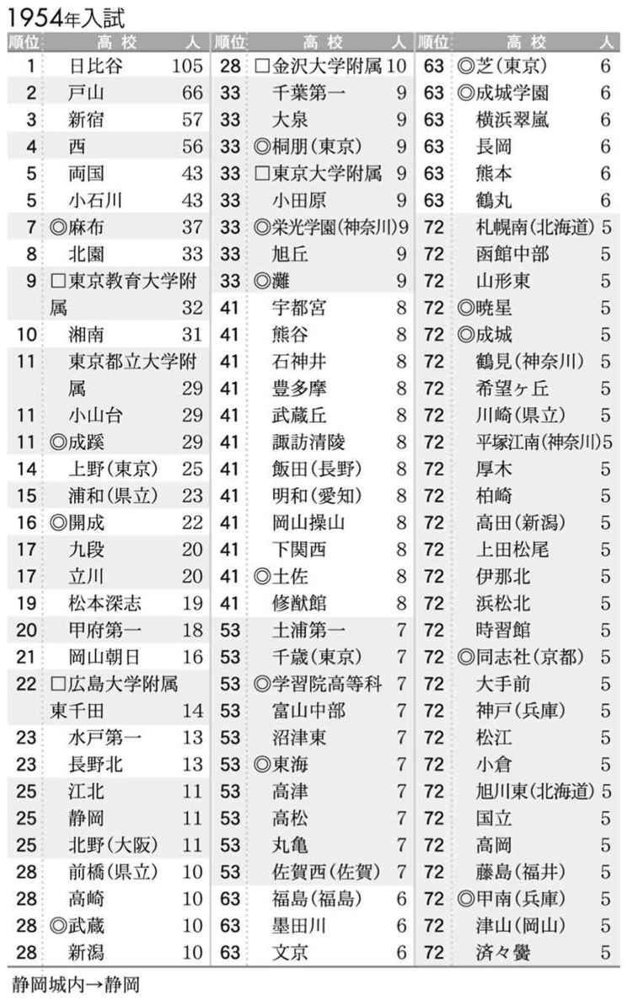
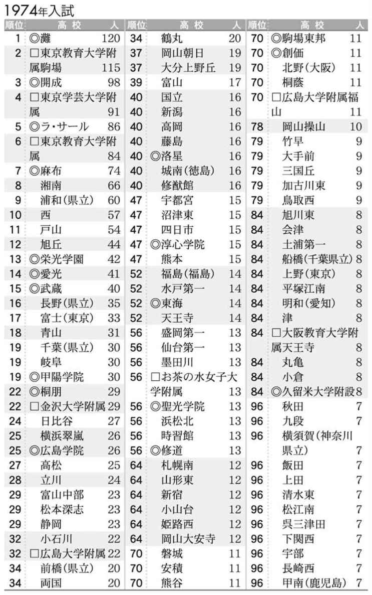
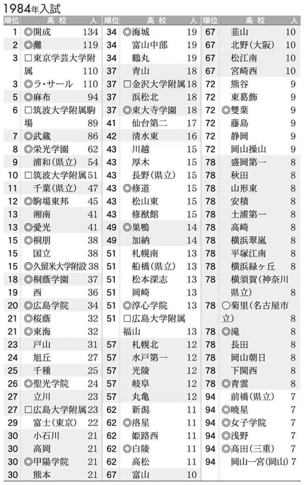
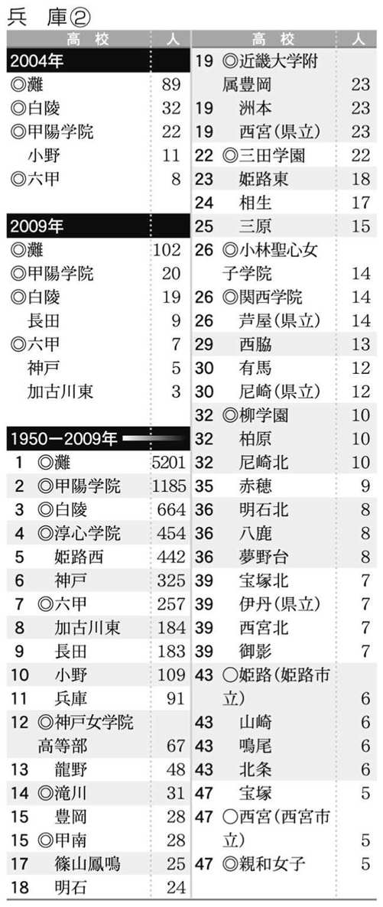
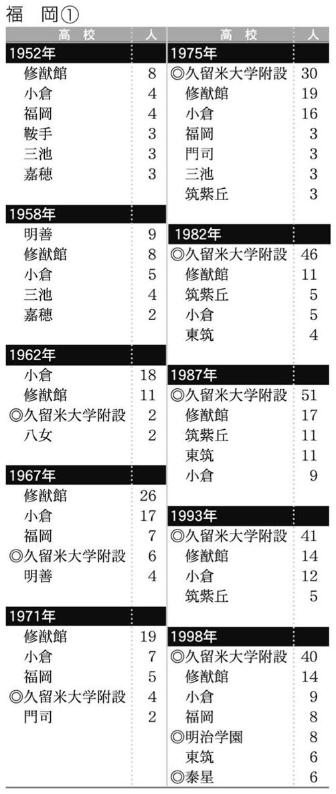
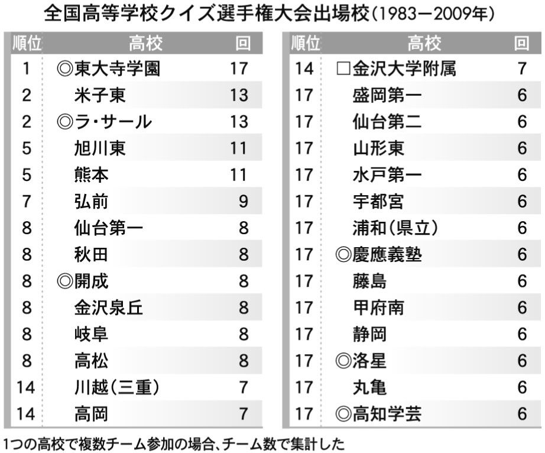
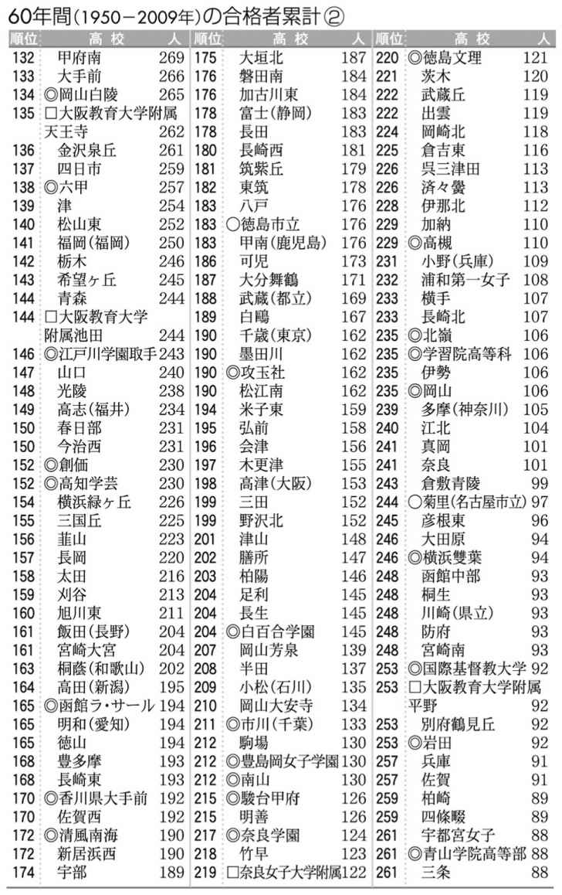
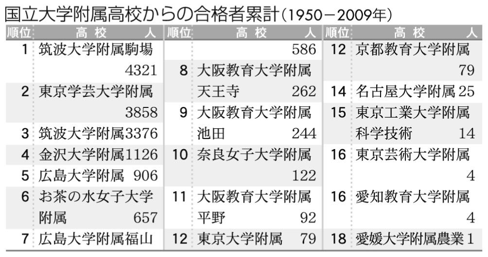
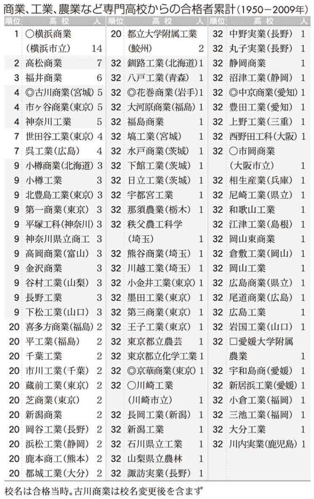

| 東大合格高校盛衰史～６０年間のランキングを分析する～ | |
| 小林 哲夫 | |
| (2009) | |
政治家、官僚、一部上場企業の社長、最先端分野の研究者などには、東京大学出身者がズラリと並ぶ。なるほど、東大は日本の社会を担ってきた側面がある。ＮＴＴや国鉄の分割民営化が行われ、役所や自治体の統合再編が進んでも、東大は安泰だった。国立大学は法人化で経営戦略を立てなければならなくなっても、競争的資金獲得など予算配分や、人的資源は東大に一極集中しており、ブランド力を十分に発揮している。
こうして国内では盤石にみえる東京大学には、たくさんの学生を送り込んでいる高校がある。本書では東大合格校と呼ぶ。地元ではだれもが知っており、尊敬、憧憬、羨望、場合によっては嫉妬の対象となっている。東大に負けないほどブランド力、社会的影響力がある。
戦後の新制高校スタートから年を追って東大合格校の盛衰を調べてみた。公立高校入試制度の改革で東大合格校はどう変わったのか。公立と私立の力関係はどうなっているのか。都道府県によって合格実績の差が生じているのはなぜか。中高一貫校の増加によって受験地図は塗り替えられつつあるのか。このようなテーマを検証することによって、本書では、大学受験という観点から戦後の高校史を概観してみた。また、東大生を輩出する高校のインサイドストーリーを描いた。
たとえば、公立高校はその時代の社会的風潮によって翻弄された姿が見てとれる。
50年代の小学区制、60～70年代の学校間格差解消を旗印に学校群制、総合選抜、通学区の細分化によって東大合格実績を大幅に落とした名門校は少なくない。「受験戦争」とメディアが喧伝するなか、特別な受験指導をしない。それが公立の美徳という考え方があった。「予備校化」というレッテル貼りを恐れたのである。ただし、これには地域差はあった。厳しい受験指導を課している名門校を守ったり、自治体の進学校づくり政策を担う高校を作ったりして、多くの東大合格者を輩出した新興校もある。
90～00年代、高校入試の学区撤廃あるいは大学区制が進み、中高一貫校が設立され、進学重点化構想が立てられる。マニフェストで東大合格者数の目標値を掲げて、大学受験を競い合う風潮は歓迎されるところとなった。「公立から東大合格を増やそう」という機運が高まり進学校に予算をつける自治体もある。格差問題が取り沙汰される割には「学校間格差」の解消を主張する意見も、「受験戦争」を批判する声もあまり聞かれない。そもそも、いまも昔も「受験戦争」があったどうかは、疑問ではあるが。
30年という時を経て、公立高校の大学受験への取り組み方が正反対の方向へ進んでいる。しかも、２つの年代とも都道府県レベルで各校徒党を組み右へならえ、である。
こうして、公立の迷走に機を逃さず進学校化した私立、私立の躍進に慌てふためいて巻き返しを狙う公立という図式が、一部の地域で見られた。一体、そこに何が起こったのか。
合格者別高校ランキングから、注目する高校（多くは母校）の東大合格者が増えた、減ったと一喜一憂されることだろう。まずは、それでいいと思う。
東大合格校の変遷から、教育のあり方としてなにが問われているかが、浮かび上がってくる。本書を材料に、高校教育、入試制度、公立と私立、塾と予備校、中高一貫校、保護者の教育観、格差問題、そして東大の存在意義などについて議論していただければ幸いである。
目 次
東大合格者別高校ランキングの出典、作成方法、表記について
●東大合格者の高校別データの出典
①「東京大学新聞」に掲載された合格者氏名、出身高校（1950～75年）
②『螢雪時代』（旺文社）掲載の東大合格者別高校一覧（1949～75年）
③『サンデー毎日』（毎日新聞社）調査（1976～85年）、『サンデー毎日』、大学通信調査（1986～2009年）
④各高校がまとめたデータ（進路指導資料、学校新聞、学校史、広報誌など）
上記データをもとにランキング作成にあたって、75年まで①を優先させた。76年以降は③と④をつきあわせた。１人合格校まで調査したが、東大が合格出身校を非公表とした76年以降、マスコミ各社が独自調査を行っているが、合格者数でバラツキの見られる年がある。また、わずかだが未判明分がある。なお、00～03年および00年以降でデータ非公表の高校がある（５校未満）。これらは誤差の許容範囲をとしてそのまま集計した。
●旧制第一高等学校入学者の旧制中学別データの出典
『第一高等學校一覧』（『第一高等中學校一覧』）
●表記
（１）設置別
都道府県立＝無印、市立＝○、私立＝◎、国立＝□を校名の前に付した。
（２）高校名のあとの注記。
①初出には都道府県名をつけた。
②同名高校が存在する場合は都道府県名をつけた。
③都道府県内の同名高校で設置が異なる場合、（県立）（市立）（私立）と表した。武蔵（私立）、武蔵（都立）。千葉（県立）、千葉（市立）など。
④都道府県と設置で同名高校がある場合、たとえば次のように表記した。横須賀（神奈川県立）、横須賀（市立）、横須賀（愛知県立）。なお、都道府県別のランキングの項目では設置のみ分けて表記した。
（３）校名の変更
①原則としてその年の校名で表記した。単純な校名変更はそのまま引き継いだ。1978年＝東京教育大学附属、1979年＝筑波大学附属
②女子校の共学化について。年ごとのランキングでは当時の校名、60年累計で現在の校名とカッコで変更前の校名を表記した。
③統合、合併で再編された高校は、再編前と後それぞれの校名で表した。
（４）その他
①引用文の旧字・旧仮名遣いは一部、新字・新仮名遣いに改めた。
②原文で本名が示されていても、イニシャルなどを用いた個所がある。
③肩書は、原則として当時のもの。
④ウェブサイトからの引用は、すべて09年８月末現在。
【１９４９年】
６月８日、文京区本郷の東京大学正門。前夜から降り始めた雨がいっこうに止む気配を見せない。午前９時、東大の職員が鐘を鳴らすと正門がゆっくり開いた。受験生が試験会場に指定された各教室に急ぐ。10時、入学試験が始まった。教室内は一瞬にして静寂につつまれ、雨音だけが響き渡っている。
６月22日、合格者が発表された。１８０４人（女子９人）が新制東京大学の第１期生となる。このうち、新制高校の出身者は345人。わずか19％にすぎない。他は旧制高校、旧制専門学校、大学予科などで占められていた。入試が６月に行われたのは、国立学校設置法の制定が年度を超えて５月下旬にずれ込んだからである。
新制高校最初の入学者は、48年である。したがって、49年の東大入試は当然のことながら受験していない。それでは、49年に新制高校を卒業したのはどんな人たちか。それは、旧制中学、高等女学校などから移った生徒である。教育制度切り替えで、次のような「移行」がなされていた。47年に旧制中学３年（15歳）、４年（16歳）、５年（17歳）だった生徒は、新制高校１年（16歳）、２年（17歳）、３年（18歳）となる。
３月25日。東京都立第一高校で卒業式が行われた。最初の卒業生のほとんどは、旧制第一中学５年から都立第一高校３年への移行組である。それゆえ、第一高校では１年間しか学んではいない。卒業生は156人。このうち、36人が東大に合格した。
この年、連合国軍総司令部（ＧＨＱ）の各地方軍政部は管轄する都道府県に対して、新しい高校のあり方として、①男女共学、②総合制（普通科と商業科の併設）、③小学区制（学区外への越境は認めず、居住者の地域の高校に進学させる）を進めるように指導した。「高校３原則」と呼ばれ、全国各地の高校はドラスティックな改革を求められることになる。

【１９５０年】
合格者の出身校は新制高校１２１５人、旧制高校744人、その他43人。前年の上位校と比べると、異なる校名が並ぶが、これは名称変更による。
東京都の場合、学制改革では旧制の都立第一中学校が第一高等学校になったように、前身の名称を引き継いだところが多かった。
ところが、49年４月、ＧＨＱの東京神奈川地区軍政部の意向を受けた東京都教育局は、これらの高校に対して「ナンバーを廃止して新校名にせよ」と行政指導を行う。「第一」「第二」という序列は、選良、特殊を意味しており、平等、民主主義の精神に反するからという理由である。都立高校の多くには、高校が所在する、あるいは縁がある地名が名づけられた。都立第一高校にはかつて校舎があった地域、日比谷という名前がつけられた。
校名に対する指導は一部を除き、全国的に見られた。旧制第一中学の流れを汲む新制高校の多くは、「第一」を名乗ることを望んだ。しかし、アメリカの意向には逆らえない。「第一」と名付けたが変更を余儀なくされた学校をいくつか紹介しよう（カッコ内は新名称）。
48年の１年または半年限り 金沢第一（金沢泉丘）、福井第一（藤島）、愛知県立第一（旭丘）、岐阜第一（岐阜）、岡山第一（岡山朝日）、米子第一（米子東）、松山第一（松山東）、徳島第一（徳島城南）
48年～49年 札幌第一（札幌南）、山形第一（山形東）。静岡第一（静岡城内〈50～52年〉、静岡〈53年～〉）
48年～50年 横浜第一（希望ヶ丘）、大分第一（大分上野丘）
【１９５１年】
新制高校からの入学者が初めて東大を受験した。同時に新制高校出身者が合格者の大半を占めるようになった。出身高校の数も急増して前年の309校から429校となる。北は北海道稚内高校から、南は鹿児島県立鹿屋高校まで、高校の所在地は沖縄を除く46都道府県すべて揃う。
高校３原則の１つ、小学区制への移行は全国各地で行われたが、旧制第一中学を前身とする名門高校は、限られた地域からしか生徒が集まらなかったことで、学力レベルが下がったところも少なくなかった。また、生活が荒れて非行に走ったり、不安定な精神状態に陥ったりする高校生が少なからず見られた。
岐阜県立岐阜高校では、50年前後、生徒の鬱屈した気分によって風紀が乱れていた。学校史にこう記されている。「ピアノの弦に雑巾や箒を突っ込む、代返の最高記録が一人で連続８人、授業中に脱走する、蛇を持ち込む（略）机を割って焚火にする、腰掛けを壊してバットを作る、授業中にカンシャク玉をぶつける」「けばけばしい色彩の服に過度のパーマネントで、どこの娘さんのお出掛けか、と思うような者もいた」（『創立120周年記念誌』93年）。
49年、大阪府立北野高校で３人の生徒が自殺した。学校新聞が分析する。「敗戦後新教育制度は学生の知識を実生活に引き下げたものの、社会の頽廃と虚無により、生甲斐を失い主観に沈潜し、厭世観は死を讃美し、生の逃避手段として自殺の風潮は北高を覆い〝自殺の学校〟の異名を馳せたのは哲学に凝り得る秀才の社会に対する反抗でもあった」（「六稜新聞」53年）。
【１９５２年】
高校の男女共学化は全国的に進んだが、導入の方法は都道府県によって異なる。大きく分けて２つ。無視したところもあった。
①新たに女子生徒または男子生徒を募集。
前身が旧制中学は女子を、高等女学校は男子を受け入れた。49年に都立高校が女子、男子を受け入れる。戸山高校は女子３人（全体398人）、竹早高校では男子５人（全体205人）。
②旧制中学と旧制女学校を足して２で割る。たとえば北野中学＋大手前高等女学校÷２＝北野高校、大手前高校。48年９月、大阪府立夕陽丘高校では正門前に女子が並んで、一列縦隊で校内に入る男子を拍手で迎え入れていた。このなかに、作家の小田実がいた。「私がいた（旧制）天王寺中学と（旧制）夕陽丘高女の生徒、教師を半数ずつ交換して、それぞれを（新制）高校にするという画期的方法によってなされた。『男女共学』は私に『民主主義』を実感させ、その実施の方法は『革命』の可能を信じさせた」（小田実のウェブサイト）。
③無視して男子校、女子校を貫く。
埼玉、群馬、栃木、宮城で見られた。宮城県は仙台第一、仙台第二、第一女子、第二女子など別学を通した。仙台第一高校校長を務めた宇野量介氏は著書で記している。「共学にしてしまえというのは占領軍の絶対命令かと開き直ったこともあった。すると命令ではない。サジェスチョン勧告だという。そんなら、民主々義の原則に則って、地域の実情、住民の意志は尊重されてもよかろうではないか」（『戦後の宮城の教育を語る』宝文堂、69年）。
【１９５３年】
男女共学の完成年度を迎えた高校が多かった。
滋賀県立膳所高校は前身の大津高校時代に共学となる。51年に同校を卒業したＯＧが学校史で男子生徒の生態を語る。「放課後の逢い引き（デート？）のためズボンのスジを消さないように一時間中立って授業を受ける者」「授業中廊下に座って女生徒にウィンクを送る者」（『百年誌』98年）。香川県立丸亀高校を52年に卒業したＯＧが学校史で振り返る。「『青い山脈』をまねて、ラブレターがはやった。謄写版で同文のラブレターを印刷し、複数の女生徒に配った猛者がいる」（『香川県立丸亀高等学校創立百周年記念誌 亀城のほとり』93年）。
三重県立四日市高校から１年浪人して53年に東大に合格した受験生の手記には、「ヰタ・セクスアリス」ぶりが書かれている。「十一月七日 きのう、本堂へ行ったとたん、おさえていたタブーを、夕刊の山岡荘八の『徳川家康』のうちで瀬名と万との半裸なもつれ合いを思い出すともういけない。ええいクソという気になって、火鉢にしてしまう。（ああ、この火鉢はおれの精液をどれだけ吸ったことか。）」「一月六日 三島由紀夫の『禁色』を開いてみて、多淫の人妻が牛乳配達の逞しい若人に自己の陰部をいじらせて、恍惚としている部分を読む。（略）その姦通部分をちょっと読んで市立図書館の裏に行って放出してしまう」（『受験番号５１１１ 東大受験生の赤裸な日記』塚本康彦、光文社、63年）。
著者の塚本氏は、のちに中央大学で文学を講じていた。
【１９５４年】
日比谷高校が初めて100人を超える。灘高校は９人。10倍以上の開きだが、実質は異なる。日比谷の合格率は20・６％（合格105人／受験504人）、灘の合格率は33・３％（合格９人／受験30人）。ようするに数の論理である。
50年代、大学の独自入試のほかに、進学適性検査が行われていた。出題内容は知能検査的な側面を持っていた。志願者が一定の人数や倍率を超えた場合、この検査の成績が第１段選抜の資料として活用される。しかし、練習効果が顕著に出る、学力検査との二重の負担となる、大学の利用が積極的でない、予算が十分でなかった、などを理由に54年に廃止される。

【１９５５年】
この年、７人の合格者が東大入学を辞退している。『螢雪時代』55年８月号が７人の追跡調査を行ったところ、６人の行き先がわかった。記事のあらましは次のとおり。
４人は慶應義塾大学医学部に入学する（芝、九段、両国、東京都立大学附属の４高校出身）。前年まで慶應の学費納入期限後に東大の合格発表があった。このころ、こんな投書が新聞に掲載されている。「両方に合格した場合、学費の安い東大に入学したいのは人情だが、慶応では入学手続きをして入学金、授業料など四万三千円余りを納めたら、後で入学を取消しても、金は返してくれない。整理の都合で仕方ないというが、こんな大金を返さないとは営利的すぎはしないか」（「朝日新聞」55年１月25日）。慶應義塾大はこのような声を受けて、55年の入学手続きを東大の２次発表の３月31日まで延期した。当時、東大医学部に進学できる課程、理三はない。理一、理二に入学後、医学部試験を受けなければならない。これがやたら難関であり、不合格になると東大に籍がなくなってしまう。それならば、確実に医師になれる慶應義塾大医学部に進んだほうが得策、と考える受験生もいた。
残り２人は千葉大（富山高出身）、信州大（野沢北高出身）に通う仮面浪人である。彼らが在籍する大学は再受験を認めておらず、自らの非を認め、東大入学をとりやめた。現在に続く東大入学辞退のルーツはこのあたりにある。
この年は北豊島工業、小金井工業、世田谷工業（以上、東京）、岡谷工業（長野）、江津工業（島根）、谷村工業（山梨）、宇都宮工業（栃木）、小樽工業（北海道）といった工業高校からの東大合格者が見られた。55年前後、合格者を出した工業高校は次のとおり。
54年 長野工業、呉工業（広島）、三池工業（福岡）
56年 蔵前工業、墨田工業（以上、東京）
57年 上野工業（三重）、下松工業（山口）、大分工業
地域の成績優秀な中学生が経済的な理由で、就職するために実業系に進んだが、勉強にめざめて進学というケースが見られる。とくに工業高校はエンジニアを強く希望する理系少年が集まって、なかには進学校にまさるとも劣らない天才、秀才がいた。数学、物理、化学では、東大入試に対応できたのである。
55年は北海道大に函館工業２人、名古屋大に名古屋工業２人、大阪大に大阪府立都島工業、淀川工業各５人、九州大に福岡工業３人が合格している。60年代、高度経済成長を牽引した優れた若手エンジニアには、多くの工業高校出身者がいた。
【１９５６年】
東大合格者数は494校２０４４人。東大合格者は１校あたり、4.1人になる。１人合格者校が255校で半分以上を占めている。60年の歴史のなかで、もっとも裾野が広がった年である。現在はどうか。09年は３１０７人で462校、１校あたり6.7人。１人合格者校が186で４割。
50年代、現在よりも高校の数が少なく、高校への進学者は少なかった。高校進学率は、55年が51・５％、09年では97・９％となっている。それなのに、合格高校がこれほど多く裾野が広いのは、地域の進学校に成績優秀者が一極集中していなかったからである。
たとえば、56年、広島県は19校49人、１校あたり2.5人合格者を出している。09年では13校84人、１校あたり6.5人となる。56年に合格者を出して、09年に出さなかった県内の高校は、広島国泰寺、広島観音、広島皆実、因島、呉三津田、呉宮原、忠海、神辺、上下、日彰館、福山葦陽。県内の地図を広げると合格校はバランス良く点在する。
このころ、「四当五落」ということばが、東京の受験生のあいだで広まった。４時間しか眠らないほど勉強しなければ受からない。５時間眠ったら不合格という意味だ。
『螢雪時代』57年１月号では、「四当五落」の特集記事を掲載している。「夜寝る時間は三時間でも食事のあと、仕事のあと、五分でも十分でもトロトロ熟眠できれば、一日を合計すると健康保持に必要な睡眠量を得られるわけです。『四当五落』という言葉も、このように考えると全然無茶なものではなさそうです」（東京教育大学教授の談話）、「やはりきびしい試験に勝つためには、病気一歩手前くらいまでは行く覚悟をしなければいかぬかもしれませんね」（座談会で東京学芸大学助教授の発言）。「四当五落」神話を肯定しているように思える。
【１９５７年】
都立新宿高校が前年比で48人増やした。倍以上である。新宿の国語教諭が話す。「われわれも予想外でしたよ。その原因は先生方とも話し合ったのですが、まあ、よくわからないですね」（『螢雪時代』57年６月号）。同校の校長はこう分析する。「昨年の卒業生の中で当然入るべき人が落ちて、その人達が今年は頑張ったため」（新宿高校の新聞「朝陽時報」57年４月30日）。認識の微妙なズレがおもしろい。優秀な浪人生が合格者を押し上げる隔年傾向は、60年代半ばまで西、戸山、小山台、小石川、両国によく見られた。
ところで、この年の合格発表日は３月24日を予定していたが、２日早まって22日となる。しかも、午後11時35分に教養学部前で発表された。理由は、試験の採点が予定よりも早く終わったためである。ラジオのニュースで合格発表時間を知った受験生が駒場キャンパスに押しかける。井の頭線は終電後も臨時電車を運転するハメとなった。いい迷惑である。
50年代の合格発表はかなりいい加減に行われていた。53年は午前２時だった。54年は午前２時で予定より１日早い。56年は午前０時でやはり１日早い発表となった。58年は午後４時だが予定は午後10時だったので、６時間早かった。採点終了そして受験番号、合格者氏名を筆記する時間の見当がつかなかったからだろう。受験発表時間は66年までは午後５～７時のあいだ、それ以降は昼間の時間帯になる。
【１９５８年】
浪人が73・９％を占めていた（現役542人、浪人１５３３人）。東大入試史上、もっとも浪人合格者比率が高い年となる。53年56・１％、54年61・０％、55年66・５％、56年70・０％、57年72・０％と年々増加傾向にあった。
この58年度の入学生について、教養学部学生部でまとめた「昭和33年度入学者の生活環境と成績の相関関係について」で、興味深い調査結果が記されている。①成績上位は現役が圧倒的で、上位１割以内に46・８％も入っている。下位１割以下になると２浪以上が多くなり、現役が少なくなっている。②成績優秀者は日比谷、東京教育大学附属、灘、札幌西が目立っている。③再起不能の重症ノイローゼ患者は開びゃく以来の初めて入学者を出した高校に多い。④九州、東北地方の出身者は一般に成績不良や留年者が多い。⑤成績上位１割以内は自宅通学が多く、次いで下宿、寮の順。
となっている。再起不能の重症ノイローゼ患者からは悲劇が生まれる。57年４月から58年３月まで、大学に届け出があった自殺者が４人いる。また、駒場寮で自殺未遂が２件あった。
69年の芥川賞受賞作『赤頭巾ちゃん気をつけて』（中公文庫）には、学校群制度以前の日比谷高校がこう描かれている。「学校中が受験競争なんて全く忘れたような顔をして、まるで絵にかいたような戦後民主主義教育の理想みたいなものを演じていたってわけなのだ。まさに欺瞞的というかキザというかいやったらしいというか、どうしようもないインチキ芝居を学校全体で足並みを揃えてやっていたといってもいい」。
著者の庄司薫氏が日比谷を卒業したのが56年のこと。この作品で描かれているのは、発表時の60年代後半より、「民主主義」が盛んに語られ戦後の復興がまだ生々しく感じられた60年前後といったほうが収まりはよい。実際、庄司氏は自らの高校時代を書いたと『日比谷高校百年史』で述べている。
【１９５９年】
前年に比べて浪人が減少する。現役が８ポイントアップの34％。その理由として、浪人と現役で入試問題が異なっていたからと分析する高校や予備校の関係者が多かった。56年度に学習指導要領が改訂され、同年入学の高校生が大学受験を迎えるのは59年度入試にあたる。そこで、現役には新課程、浪人には旧課程の２通りの試験問題が科せられた。新課程の問題がやさしかったことが、現役有利の根拠となっているが、統計学的には証明できない話だ。
【１９６０年】
都立西高校が前年比17人増の100人。同校教諭は自らを難関校と称し喜びを隠さない。「本校入試の難易度は東京都第二位でありながら、歴史が新しいせいか、いままであまりふるいませんでしたが、最近、生徒の自覚も高まり、自信がついてきたといえましょう。昨年から春の講習を一週間行ない、心をひきしめる効果を与えました。（略）一〇〇名突破、つまり三ケタになることが本校の悲願でしたが、ようやく本年目標に到達したわけです」（『螢雪時代』60年６月号）。
60年も前年比で現役合格率が増えた。とはいっても、６割以上が浪人で占められる。浪人の内訳は、１浪１００３人（45・０％）、２浪260人（11・６％）、３浪54人（2.1％）、４浪15人（0.7％）、５浪４人（0.2％）、６浪６人（0.3％）、７浪２人（0.1％）、８浪２人、９浪１人。
日比谷の校務主任のＳ教諭は、浪人してまで東大に固執する受験生について、こんな談話を寄せている。「高校三年、ふつうにやったんじゃ東大はムリなんです。適当な大学へ行けとは言ってますよ。だけど現実に東大より金はかかるし、就職率は低い。アルバイトの口まで見つけにくい。そういう学校に行けっていえますか。東大病は社会全体の病気なんで生徒や父兄ばかり責めるのはコクですよ」（「朝日新聞」60年２月18日）。
東大以外は大学ではないと読み取れる。こういう教諭のもとで教えられる生徒が、官僚や企業のトップとして90年代まで活躍していたことになる。
60年安保の年である。全国各地で行われた集会やデモに参加した高校生が学校史に記されている。都立高校では、戸山が「本校からも二二〇人を超えた」（『府立四中・都立戸山高百年史』）、小石川は「デモに出かけたのは一二〇名ほど」（『五中・小石川の七十年』）」、新宿では「百名近く参加している」（『五十年の歩み』）。札幌南は「200余の生徒が参加」（『百年史』）、松本深志（長野）は「午後の街路にひびいた先生・校友千二百余り」（『深志百年』）、諏訪清陵（長野）は「八百余名の行列は静かに出発した」（『清陵八十年史』）。県立前橋（群馬）は「県民大集会では約百人の生徒が参加」（『前橋高校百三年史』）、旭丘（愛知）では「約一六〇人の生徒が参加した」（『鯱光百年史』）とある。かなりの動員力である。
【１９６１年】
日比谷が前年比30人増で171人。うち浪人は107人だった。上位校の浪人比率は、日比谷62・６％、戸山69・２％、西66・１％、新宿60％、小石川79・３％、東京教育大学附属47・１％、両国65％、麻布70・９％、湘南66・７％、小山台68・３％、浦和77・５％など。
日比谷の浪人生の多くは同校の補習科に通った。
補習科とは公立高校内に設けられた予備校のような教育機関である。設置上の法的根拠はなにもない。教師が手弁当で卒業生に受験指導をしていた。50～60年代、浪人生増加とともに全国の進学校でいくつも作られている。戸山高校は「卒業生講習」という名称で浪人生を教えていた。同校ＯＧで評論家の林望氏は著書で記している。「愉快なことに、私たちの学年まで、戸山高校は事実上四年制高校だった。（略）「卒業生講習」という制度は、もう随分前から行われていて、東大を目指して夥しく発生する浪人の卒業生を一年間そこに収容し、引続き戸山の先生たちが、ボランティア同様に受験講習をするのだった。（略）さながら学校の中庭に代々木ゼミナールが引っ越してきたようなものだった」（『帰らぬ日遠い昔』講談社文庫、95年）。67年、東京都の指導によって、都立高校の補習科は廃止された。
新制高校が完成年度（全学年が新制度入学者）を迎えてから10年。地域によっては旧制中学的な雰囲気を漂わせるところがある。
この年、栃木県立栃木高校の生徒らが集団乱闘事件を起こそうとして警察の調べを受けている。地元で「永野河原乱闘未遂」と呼ばれた。栃木高生21人を含む栃木商業と栃木農業ら43人が、作新学院と足利学園ら18人と乱闘寸前になった事件だ。栃木高校の学校史に原因や経過がまとめられている。「事実は作新学院と栃商との一部の不良生徒の争いに、栃商生と親しかった本校生が義侠心の如きものを感じて応援をかって出たことにあった。本校生は多数の人数と竹槍などの武器をそろえて相手を威嚇すれば事はおさまると考え、首謀者は勿論他の参加した者も相手を殺傷しようという意志は全くなかった」（『栃高八十年史』76年）。栃木高校から東大へは60年５人、61年２人、62年５人。勉強もするが、ケンカも辞さない。そんな高校が存在したのは、高校進学率が５割に満たなかった60年代前半までだろう。
【１９６２年】
理科三類、文科三類が誕生する。理三合格トップ校は麻布で７人となっている。
上位校の現役比率は日比谷40・８％、西36・７％、戸山25・８％という低水準にあって、灘94・９％（現役37人／39人）は頭抜けている。ちなみに洛星は100％だ（４人／４人）。また、合格率（合格者／受験者）をみると上位組は日比谷33％、西30・９％、戸山23・５％。灘は48・８％と東大受験生２人に１人は合格してしまう勢いだ。
62年、県立千葉高校から文一に現役で合格した受験生の手記が受験雑誌に掲載されている。タイトルは「危険を承知で東大オンリーで受験」。「①私大を選ぶと試験が一期校の直前であるし、国立型の勉強では歯の立たない問題があり、失敗の可能性もある。何よりもその結果が一期校の試験に響く。②二期校を選ぶと試験が一期校の結果の発表の三日後、落ちたショックで十分実力を発揮できない」（『螢雪時代』63年１月号）。ずいぶん慎重である。弱気といったらいいか。受験生の名は神崎武法。のちの公明党委員長だ。自民党にすり寄るばかりで思い切った政策を実現できなかったのは、失敗を過分に恐れるメンタリティによるものか。
【１９６３年】
63年、国立大学附属高校が合格者を大幅に増やしている。前年比増加分で東京教育大学附属駒場24人、東京教育大学附属23人、金沢大学附属８人、広島大学附属４人、東京学芸大学附属３人。５校はいずれも開校以来最多となる。広島大学附属は60年代前半から受験対策に力を入れるようになった。63年の同校『学校概要』に、実力テストを「三年生には原則として年七回（一学期三回、二学期三回、三学期一回）行う」と明記している。
60年代に入ると、高校３原則の１つ、男女共学はすっかり定着した。男女の交流を深める手段として活用されたのが、フォークダンスである。全国各地の高校で文化祭、体育祭などで広まった。しかし、それに異議を唱えた校長もいた。
63年、愛知県立岡崎高校で就任したばかりの校長が、新入生歓迎のフォークダンスを、「青年男女が手をつなぐなどは淫らなことで、もってのほか」として禁止した。それに対して一部の教員や生徒会が反発。マスコミも批判的に報じた。その結果、フォークダンスは行われることとなり、校長は他校に異動となる。愛知県高校教育史のなかで「岡崎高校フォークダンス事件」と記されている。
【１９６４年】
日比谷は東大合格者ピークの年を迎える。193人を送り出した高校はどんな指導をしているのか。同校進路指導主任教諭の加川仁氏が著した『必勝大学受験法 《東大入学日本一》の勉強法をあなたに』（講談社、63年）の中身を紹介しよう。「補習授業をしたり、超学年制をとったりすることが、高校としてまちがっているだけでなく、受験のために決してプラスにならない」「本校ではテストの回数を極力減らしている（略）テストをたびたびすることは自発的な学習のじゃまになる」「生徒も先生もともに元気で、これだけはものにしよう、ものにさせようと、全力を正規の授業に注ぐことのほうが、実際の効果が大きい」。
各地域の中学から１、２番が集まった日比谷だからそう言えるのであって、どの高校にも通用するわけではない。そんな読後感を抱く教師が少なくなかった。なお、合格者193人のうち現役合格者は77人。現役率は39・９％。高校の指導より、日比谷卒業生の多くが通った同校補習科、駿台高等予備校（現、駿台予備学校）の力が大きいと言えよう。
【１９６５年】
新制東京大学が誕生して以来、現役が浪人を初めて上回った。現役56・７％、１浪33・８％、２浪以上8.2％。合格率は現役32・３％（前年比＋４ポイント）、１浪32・５％、２浪以上11・２％。合格者は２８７２人で前年比199人増。これは定員枠が理系60人、文系90人増えたことによる。上位校の65年卒業生の進路を人数で示すと、日比谷＝進学188、浪人219、就職２。開成＝進学341、浪人144、就職１。灘＝進学169、浪人43。
団塊の世代（47～49年生まれ）が高校３年生となった。前年の倍以上の受験生が生まれるが、大学の入学定員は追いつかない。交通事故死の急増が背景に生まれた「交通戦争」とともに、「受験戦争」ということばがマスコミで頻繁に使われるようになった。
そんなプレッシャーからか、精神的に不安定な高校生も現れる。
茨城県立水戸第一高校では、65年11月からおよそ半年間で４人の生徒が自殺と思われる謎の死を遂げた。学校側は対応策として、成績不振者にはあたたかな配慮をすることなどを討議している。同校の新聞で亡くなった生徒の家族が訴えている。「家族の悲しみをドン底に打ちひしぐ不祥事を敢て行ない、何で死は美しい事であるとなど、超然たり得るや。絶対に真似ないでいただきたい」（「知道」66年７月８日）。
「受験ノイローゼ」「受験を苦に自殺」という報道が見られたのもこのころである。昭和元禄と言われた世の中だが、はれものに触るように受験生と接していた家族もあった。
【１９６６年】
前年比で日比谷53人減。灘29人増。東京以外の高校が５位以内に入るのは初めて。
日比谷高校生徒のこんな発言が雑誌に掲載された。「ぼく以外の人間が、ぼくより劣った環境で、ぼくより能力が高くならないように教育されること、つまりぼくだけが甘い汁を吸えることが理想です。世界の一番上に立って有利な生活をしたいということです」（『朝日ジャーナル』66年11月13日号）。この発言は、「日比谷高新聞」に掲載された次の記事に対して、その真意を問われて答えたものである。
「日比谷高校生の大部分は一流の私立を『すべり止め』に受けている。これは優秀な生徒が経済的に恵まれていることを示すもの（略）普通高校とは、大学の予備課程であるから、レベルを下げると大学のレベルを下げねばならない。いまの高校程度の課程を消化できない者が大学教育を受けても無意味である。（略）そこで提案する。普通科高校を減らせ、と。普通科が減ったぶんだけ、職業高校や専門高校をつくる。大学へ行っても意味のない人はそちらへまわすだけだ。（略）個人の特性も見ずに、みな同じコースに乗せてしまうなどというのは、無策の典型ではないか」（66年９月１日号）
日比谷の生徒に差別意識があったとは思えない。しかし、表現方法があまりに無神経すぎた。職業高校の実情を知らなすぎる。
60年代半ばを過ぎると、職業高校に商業実務家やエンジニア志望の優秀な生徒が集まらなくなった。普通科高校志向が強まったのである。それでも、本人の強い希望や経済的事情で大学進学を前提とせず、商業や工業分野の知識や技術を身につけたいとする生徒が、職業高校で学んでいる。一方で、学力下位の生徒が普通科に入れなかったから、不本意ながら職業高校に入学する生徒も多く見られた。こうしたなか、日比谷というトップ校の立場から「そちらへまわせ」と言われれば、どうなるか。
『朝日ジャーナル』に、商業高校生徒からの反論が掲載された。「普通高校のゴミ捨場ではない」「職業高校は能力のない者の集りなどとは考えてほしくない」（12月４日号）。

【１９６７年】
都立高校に学校群制度が導入される。御厨貴さん（現、東京大学教授）は都立小石川高校に入学した。そのときの様子をこう振り返る。
「そして幸いにも、私は小石川に当たった。合格・不合格ではなく、当たり・はずれという言葉のもつ何とも言えぬむなしさは、あの時の十五の受験生にしかおそらくわかるまい。多くの友人が目標校に当たらず、無念の涙をのんで他の学校に行くことを余儀なくされたことを、つい昨日のことのように私は思い出す。ありていに言って、小石川入学者と竹早入学者とでは、学園生活そのものからその後の運命にいたるまでを大きく分かつことになった」（『立志・開拓・創作――五中・小石川高の七十年』88年）
竹早とは、学校群で小石川が組んだ相手校である。当初、竹早は向丘高校と組む予定だったが、小石川に変更される。そこにはこんな裏事情があった。「竹早は小石川と群を組むように生徒会も学校も陳情交渉しました。最後の土壇場で変わったのは、校長さんが教育庁で交渉している席に、お茶大合格二十二名の報告がもたらされたことではなかったかと思います」（『竹早の百年』03年）。成績優秀な生徒ほしさから小石川と組みたいがために、お茶の水女子大合格者実績をアピールして都教育庁を口説きおとした。
学校群制度導入にあたって、学校間格差が解消できると主張したマスコミ、評論家の援護射撃があったことも見逃せない。大江健三郎は支持を表明している。「ぼくは早くからエリートを分けて、特別な教育をして東大から企業へと送りこむことには反対です。できるだけ長い間、いろんなタイプの人間とつきあい、ともに学んでそれ以後に大学へ行くほうがよいと思います。そのほうが画一的でない人間をつくるのに有効だと思います。だから学校群には賛成です」（『朝日ジャーナル』11月13日号）。
東京都は学校群制度導入に合わせて、都立高校教職員の異動を大量に行う方針を打ち出した。日比谷や戸山など都立高校の東大合格者が多かったのは、生徒ばかりでなく教員も優れていたという理由もある。進学校での長年の経験と蓄積から独自の受験指導ノウハウを確立して、東大入試のプロとなった教員もいた。都は彼らを他校に移して、学校間格差解消をはかろうとしたのである。67年３月現在、同じ高校に16年以上勤務する教員数は次のとおり（全日制。カッコ内は比率。文部省調査）。日比谷23人（45・６％）、西20人（44・７％）、戸山22人（45・７％）、新宿25人（44・１％）、小石川20人（43・８％）。受験雑誌、参考書などで知られる「受験の神様」がおり、同じ都立なのに有名進学校ゆえ、予備校講師や参考書執筆の依頼が多く、副業による収入に「学校間格差」が生じていた。受験生のバイブルだった『試験にでる英単語』（青春出版社）著者の森一郎氏は55～68年に日比谷高校で、ＮＨＫ通信講座で数学を担当し、ファンが多かった佐藤忠氏は46～70年に戸山高校で教えていた。
この年、灘が初めて100人を超えた。作家の高橋源一郎氏は64年に麻布中学から灘中学に転校。67年に灘高校に進学する。当時をこう振り返る。「中学３年間で１クラス分の50人ぐらいが減って、それで高校入試で１クラス分増やす（略）中間テスト期末テストごとに後ろから肩たたきが迫ってくるわけ。『もう辞めたほうがいいよ』って。で、下から３人ずつぐらいがどんどんカットされていく。（略）『高校へ上がっても苦しいだけだよ』『他の学校に移ればお山の大将だよ』とか、アメとムチを使ってさ。ふつうの神経だと相当きつい。（略）中３で、高３までの内容がほとんど終わってる。英数国だけなら、この段階で200人のうち50人ぐらいは東大へ入れる」（『ワンコイン悦楽堂』竹信悦夫、情報センター出版局、05年）
【１９６８年】
灘が日比谷を追い抜いたことを、「朝日」「読売」「毎日」３紙が見出しを立てて報じている。『週刊朝日』『サンデー毎日』『週刊読売』なども特集記事を組んだ。
両校の校長が『サンデー毎日』（４月７日号）で談話を残している。まずは、日比谷高校の田中喜一郎氏。「別にショックも受けてないし、残念だとも思わない。まあ、うちは特別の受験教育をすることを避けてますからね。灘のようにはいかんでしょう」。続いて灘高校の梶和三郎氏。「日比谷に勝つとか負けるとか、意識したこともない。東大合格者数をふやすだけが目的なら、一番や二番をみな東大に受けさせます」。
この年の「灘高新聞」の部員が書いた「入試成績の意味するもの」という評論を抜粋する。
「数年前において、成績上位者が東大を目指したのは現在と同様である。だから東大四〇名の合格者のあった年なら五〇番、六〇番の生徒は安全圏におりはしないのである。しかし現在においてはどうだ、五〇番、六〇番といえばセイフティ・ナンバーなのである。（略）言い添えるが、本校の阪神間における、おそらく東京における日比谷校にまさると思われる、受験校としての権威が、この傾向に拍車をかけ優秀な生徒を送り込む結果となることも銘記する必要がある」（『灘高のモーレツ受験宣言』勝山正躬、協同ブックス、74年）。
こうした揺るぎない自信を植え付けたことも灘の教育の成果であろう。
この年の夏、長野県立松本深志高校生徒が西穂高へ登山中、落雷に遭い11人が死亡した。
災害、事故などで一度に多くの生徒が犠牲となったケースがいくつかある。54年、麻布中学の生徒22人が相模湖で遊覧船の沈没によって亡くなった。64年、秋田県立大館鳳鳴高校の山岳部員４人が岩木山に登山中、遭難して助からなかった。88年、高知学芸高校では修学旅行中に上海で列車事故に遭い、生徒27人と教諭１人が犠牲となった。
68年入試で最高点をとった受験生が、69年入試を受験していたら合格できなかった。京都大学入試の文系４学部でそんな驚くべき結果がもたらされた。
69年入試の合格最低点が68年よりも126～146点跳ね上がったのである（文＝588点→714点、法＝583点→721点、経済558点→697点、教育556点→702点。900点満点）。これらは68年入試の合格最高点をも大幅に上回っている。もちろん、年によって問題の難易度、受験生のレベルに差は生じるが、100点以上も開いてしまうと、合理的に説明することはできない。異常である。その理由は、東大入試中止によって、成績優秀者がどっと京大に押し寄せたから、に尽きる。
69年１月20日、東大入試中止が正式に決まった。政府自民党は東大闘争で中断した授業の再開を入試実施より優先させたのである。
これによって、京大を第一志望とする受験生が割を食ってしまったことも想像に難くない。京大入試の難化を避け、直前になって他大学に志望を変えた受験生も少なくなかった。
東大が入試を実施していれば、京大に合格できたはずなのにという仮定の話は、この年の京大合格者ランキングをみると、なるほど現実味を帯びてしまう。68年東大合格者上位校の関東勢である日比谷、西、戸山、東京教育大学附属駒場、麻布、開成、湘南の69年京大合格者は合わせて216人にのぼった。前年比で171人増だ。一方、68年京大合格上位５校の69年合格者の減少数は北野19人、天王寺35人、大手前39人、神戸35人、洛星20人となっている。
被害者は関西の高校ばかりではない。東北地方の高校もひどい目にあっている。関東の東大合格上位校が東北大に流れた。それによって、地元および周辺地域の高校は東北大合格者数を軒並み減らすことになった。68年東北大合格上位校の69年合格者の減少数は仙台第一51人、仙台第二26人、磐城９人、秋田10人、福島15人、盛岡第一７人、山形東８人。西、日比谷、新宿、戸山、小石川、開成、両国の東京勢が合わせて130人以上も東北大の合格者を増やしたからと見て間違いない。
文部省は東大入試中止によって、かなりの受験生が他大学に流れる事態を予想し、対応策を考えていた。69年１月、文部省は国立大学事務局長会議を招集。東大、東京教育大の定員３９００人を約70の国立大学に振り分ける。そのためには教育経費など必要な予算措置をとる、という方針を打ち出した。各国立大学は東大と東京教育大が受け入れられなかった学生分、定員を増やしてほしいというものである。
この提案を真っ先に拒否したのが京都大学である。京大の奥田東総長は「他大学への振り分け入学措置によって安易に解決しようとする政府の態度は納得できない」「水増し入学については、本学の教育環境の不備なども合わせて考えた上、受け入れられないというのが現段階における全学の大勢と判断する」という見解を示した。
北海道大、東北大、名古屋大、大阪大、九州大、一橋大、東京工業大、お茶の水女子大なども定員振り分けを断っている。拒否の背景には、文部省が東大の意思を無視して入試中止に踏み切ったこと。それが、「大学自治への侵害」という反発があったのである。
69年秋になると高校、予備校で異変が見られた。70年東大入試に備えて高校に成績書を請求する者が相次いだこと、そして、予備校の後期編入試験の受験生が増えたことである。駿台高等予備校（現、駿台予備学校）では、関東出身の京大生が150人押しかけてきた。11月に行われた模擬試験の成績上位10人のうち、３人は京大の１年生である。
京大からの再チャレンジ組はどのくらいになるか。再受験には在籍大学の受験許可の申請が必要である。京大への届け出はおよそ60人（京大調べ）。法学部は１割にあたる31人、工学部14人。ほかに経済、教育、文、薬に数名いる。農、医学部では在学のまま再受験を認めていないので、農２人、医１人は退学届けを出さずに受験することになるが、受験後に京大生だったことがわかると、両大学の話し合いで京大に戻される。
第一志望が東大だったが、不本意ながら京大に進んだ学生は、次のような行動をとった。
①初志貫徹。京大は籍をおいているだけで、あくまでも東大をめざす。
②京大でがんばるつもりだったが、ストで授業が行われないので入学した意味がない。勉強したいので東大を再受験する。
③東大を再受験するつもりだったが、これ以上、受験勉強を続けるのはしんどくなった。京大でがんばる。
④東大再受験を考えていたが、京大がおもしろい。京都も楽しい。京大でがんばる。
70年の東大入試実施前、こんな見出しをつけた記事があった。「〝東大病患者〟は60人 再受験希望の京大生」（「朝日新聞」70年２月11日）。東大病とは、「東大以外は大学ではない。東大を出て官僚や社長になって偉くなる」という受験生を表している。そこには、記者の「東大万能主義」への批判、東大にこだわる受験生に対するせせら笑いがよみとれる。
「東大病」はこの時代の新しい言葉ではない。「東大病」の登場頻度が高い「朝日新聞」の見出しを並べてみよう。「親も子もこの『東大病』〝おろかなレッテル〟 共存する優越感と劣等感」（58年３月５日付夕刊）。この記事では、当時の茅誠司東大総長の大胆な提案が紹介されている。「五年も浪人して試験勉強だけやるというのは、国家的に見て大きな損失だ。私はいまの試験制度を全面的に考えなおせ、といいたい。入学試験を全廃して内申制だけにしたらどうか？」。そして、「『東大病』を診断する 青春かけた〝浪人生活〟 こり固まる執念」（60年２月18日）、「ぶり返す〝東大病患者〟 灘高ショック しぶい顔する教育庁」（68年４月12日）。「〝東大病〟 やや減りそう 紛争・学校群制が響く」（70年２月６日）など。
東大に対して、羨望や嫉妬など入り交じった見方がなされていた時代といえる。いまだったら、「東大病」というフレーズは没になるだろう。そこに何の意味もこめられないからだ。
69年10月17日午後６時。県立千葉高校でバリケード封鎖された図書館に機動隊が突入した。生徒らは建物２階から牛乳瓶を投げつけるなど抵抗を試みたが、まもなく機動隊が制圧し、封鎖が解除されてしまう。この衝突で、図書館を占拠していた８人（女子２人）、近くで石を投げた２人が逮捕された。新左翼党派・中核派の機関紙がこう伝えている。「バリケードからは投石、牛乳ビンがとび、外ではあちこちで肉弾戦が闘われる。（略）機動隊百名は校内に突入し、ジュラルミンの楯を振りかざし八百名の高校生に襲撃を開始した。スクラムをくみ、断固として阻止する高校生をなぐり、けり、楯で乱打し、女子高校生をひきずりまわす。投石、スクラム、数十名の負傷者と三名の逮捕者を出しながら、壮絶な白兵戦が展開された」（『前進』69年10月27日号）。
10月21日午前７時30分。都立青山高校の屋上から機動隊員めがけて石や火焰瓶が投げつけられた。高校で火焰瓶が登場したのは初めてであり、安田講堂高校版と言われた。この衝突で９人（女子３人）が逮捕された。
10月22日午前３時。長野県長野高校で30人の生徒が校長室など本館の４部屋を占拠。
10月26日午前５時。東京学芸大学附属高校で校長室など８部屋をバリケード封鎖していた生徒12人（うち女子２人）が、世田谷警察署員によって退去させられる。
10月28日午前７時30分。都立日比谷高校の同窓会会館で、屋上から空き瓶や蛍光灯の傘が、機動隊員に向けて投げつけられた。40分後に会館に立てこもった３年生２人が逮捕される。
千葉、青山、長野いずれも闘争を指揮していたのは、中核派の高校生組織「反戦高協」のメンバーである。機関紙の『前進』は身内の「戦果」をプロパガンダする役割を担っており、千葉高校の描写には扇情的な表現が見られる。しかし、新聞各紙や同校の学校史で確認する限り、機動隊や警官隊との衝突について事実関係で大きな間違いはない。
60年代後半、大学闘争が佳境を迎えたころ、高校でも、くすぶっていた火種がいっきに爆発するかのように、校長室占拠、校内バリケード封鎖などが行われていた。これらは学生運動になぞらえて、高校生運動と呼ばれる。
そもそも高校生はどのようなスローガンを掲げて過激な行動に走ったのか。まず、高校に対する現状批判である。学内の検閲撤廃と表現の自由、政治活動の自由、制服制帽廃止、校則廃止、補習や能力別クラスなど受験教育反対、定期試験撤廃、高校解体など。
そして、政治や社会に対する抗議行動だ。ベトナム戦争反対、安保条約粉砕、大学入試制度粉砕、自民党政権打倒、暴力革命と共産主義社会実現などである。
68年10月、全国で初めて高校封鎖が起こった。大阪府立市岡高校で50人が校長室を占拠したのである。このなかには灘高校、大手前高校など他校生徒が含まれていた。
灘高校２年だった作家、高橋源一郎氏も参加しており、こう振り返っている。「学年200人のうち50人ぐらいがデモに行ってましたからね。関西の高校で一番動員力があった」「あれ、実はほとんど灘の生徒なんです。（略）市岡のヘルメットかぶって行ったんですね」（『ワンコイン悦楽堂』）。
69年３月、卒業式が荒れた。武蔵丘高校では卒業式会場がメチャクチャに破壊されてしまい、２人が逮捕されてしまう。岩手県立盛岡第一高校では、時限装置によって垂れ幕（長さ３メートル、幅70センチ）が降下。「校長、あなたは真の教育者か、もっと生徒に近づけ」「人間性無視の教育は御免だ。事なかれ主義は辞めろ」と書かれており、騒然となった。
そして、高校生闘争のもっともピークだった69年10～11月を迎える。（表参照）
警察庁によれば、69年の高校生の検挙件数が317校、659人。罪状は公務執行妨害、凶器準備集合罪、放火が多い。学校封鎖、集会やデモで捕まったケースがほとんどだ。検挙者が目立った高校は、青山20人、九段10人、市岡10人、武蔵丘９人、長野７人、新潟５人。
70年１月、神奈川県立川崎高校では職員室を封鎖した。ある女子生徒の大学進学に必要な調査書の所見欄で「本校紛争に積極的に参加し、クラス女生徒の中心になって活動した」という記入が発覚。生徒は報復行為と受けとめ反発する。封鎖を支援するために横浜翠嵐高校の生徒が川崎高校に押しかけたが、教職員が阻止する。
同年３月、愛光高校で卒業式ボイコットがあった。田中忠夫校長はこう訓示をする。
「キリスト教的な人格主義、道徳主義に基づく人格教育を断固としてやり抜く。その教育はいわゆる唯物論、マルクス・レーニン主義とは根本的に相いれないし、容認できない。もし諸君の中に、これら思想に共鳴し信奉する者がいるなら、直ちにこの場から去ってもらいたい。（略）ほとんどの者が去り、最後に生徒が一人になっても私はその一人に対して教育を続ける。しかし、すべての者が去り、私一人になるなら潔く学園を閉じる」（『愛光学園50年史』02年）
建学の精神を掲げる私学の「強み」である。当時、文部省は高校生の政治活動を禁止しうる旨の通達を出していたが、公立高校の多くはうまくコントロールできなかった。都立新宿高校が生徒のデモや集会参加などを認めるとして、都教育委員会をあわてさせたこともある。
同年７月、灘高校では３日間ストライキを行う。全学闘争委員会結成大会基調報告で自らを「高級官僚、高級技術者、体制イデオロギーの宣教師、などをつくり出す東大への道を保証する〝灘受験技術教習所〟である」と定義。「大学入試制を頂点とする試験制度を粉砕しよう」と呼びかけている。
翌８月、北海道札幌南高校では職員室を占拠、校長を軟禁してしまう。札幌南には、北海道大学で勢力を持っていた革マル派など、さまざまな党派の活動家がおり、主導権争いでもめることもしばしばあった。
同年、都立西高校は革マル派活動家に生徒会室が事実上、占拠されていた。主力の３年生が卒業すると、対立党派に襲われてしまう。同校の学校史にこう記されている。「二年生が跡をついだものの、他校のＭＬ派によって生徒会室を襲撃され、また印刷機を盗まれて活動も思うにまかせず、安保自動延長で紛争は終了したのである」（『西高の50年』88年）。
闘争が激しかった高校には、東大合格上位校がずらりと並んでいる。
それにはいくつか理由がある。東大、京大、早慶、関関同立の学生活動家は進学校出身者が多い。彼らは母校を訪れて、後輩に高校生組織を作らせて、バリケードの作り方や火焰瓶の投げ方を手取り足取り教え込む。新左翼各党派の学生組織「全学連」（全国学生自治会総連合）にとって、高校は学生活動家の貴重な人材供給源なのである。成績優秀で知的好奇心旺盛な高校生を大いに刺激したのである。
共産主義に対する幻想、ベトナム反戦運動、東大闘争など、60年代の社会情勢も大きな影響を与えた。東大入試中止も大きい。東大をめざしていたが、小中学校とこれまで歩んできた「エリートコース」に従うことに疑問を抱き、受験勉強を拒否する。「東大に進み支配階層の仲間入りをして、ブルジョアジーとして搾取する側にまわりたくない。プロレタリアートを解放するのが私の役割」と革命家をめざす高校生もいた。
党派の勢力を拡大するために、高校生に特定の大学を受験させるケースもあった。「君は成績優秀だから東大で学生運動のリーダーになってほしい」と組織命令が下され、東大生の家庭教師をつけられた生徒もいる。
東京の場合、学校群制度も少なからず影響を与えたようだ。日比谷高校の教員が著書でこう記している。「学校群制度によって入学してきた生徒たちに向かって、ある教員は『学力の自信のないものはクラブ活動するな。』と言い、また授業中に『学校群で入学した生徒でも、これほどできが悪いとは思っていなかった』と不満をぶちまける教員もいた」（『日比谷高校闘争と一教員・生徒の歩み』大河原礼三編著、現代書館、73年）。
日比谷以外でも「学力低下」を露骨に憂えた声が学校群１期生にぶつけられており、彼らの鬱屈した感情が高校闘争につながったと見る高校教員も多かった。
高校闘争で逮捕者や退学処分者を出した高校において、合格実績に変化はあっただろうか。
東京学芸大学附属高校は封鎖が長引き大量に処分者を出したにもかかわらず、東大合格者が増えた。同校教諭がこう話している。「紛争の影響などで特別な受験指導ができなかったこと（略）などが、かえって、生徒の自主性を目覚めさせるという好結果を生んだようだ」（『螢雪時代』71年５月号）。71年、麻布高校では校長代行に反発してスト、集会、デモが繰り返し行われていた。学校は２カ月間ロックアウトされて、授業がまともに行われなかった。闘争の中心メンバーは３年生だった。彼らが受験する72年東大入試で、現役合格者は前年比３人減少にとどまった。闘争のリーダー格も合格しており、「いつ勉強したんだ」と教員たちを驚かせた。
闘争で逮捕者を出した学校で大学進学実績を低下させたところは少なかった。札幌南、仙台第一、福島、磐城、千葉、青山、長野、新潟、修道（広島）などは東大合格者を減らしてはいない。
68～71年、高校闘争に参加した高校生たちで大学へ進んだ者はどうなったか。学生運動を続ける、勉強に専念する、遊びまくる、静かに過ごすなどさまざまだ。
学生運動は、「全共闘」「１９６８年」というキーワードで顧みられる。しかし、高校生運動はすっかり忘れ去られ、歴史に埋もれたままだ。団塊世代より少し下の50～53年生まれで60年代後半の高校生活動家には、東大合格間違いなしといわれるほどの成績優秀者が少なくなかった。退学処分となって革命家の道を進んだ人もいれば、東大に進み企業や役所の幹部に、あるいは政治家になった人がいる。今でも行方不明の人もいる。
徳島県立城南高校、駿台高等予備校を経て72年に東大へ進んだ四宮俊治氏は、74年、知人の引っ越しを手伝っている最中、内ゲバに巻き込まれて殺されてしまう。彼は高校闘争に参加していた。四宮氏の日記をまとめた遺稿集『何という「無意味な死」』（勁草書房、75年）に、「城南高闘争委のメンバーとして活動を再開。七〇年安保への街頭デモ等に積極的に参加、校長戒告の処分の受ける」と記されている。
このような内ゲバや爆弾闘争など、団塊世代の負の遺産を高校生運動世代が肩代わりすることになる。赤軍派の活動家にも高校生が少なからずおり、連合赤軍の浅間山荘事件の関係者にも東大合格校中退の活動家がいた。70年代前半は、高校生運動体験者にとって、他世代が安易に想像するのがはばかれるほど、苦しくてつらい時代だっただろう。
【１９７０年】
東大闘争の余波は残っていた。３月４日、２年ぶりの東大入試。キャンパスの一部に有刺鉄線がはりめぐらされ、受験生は検問所でチェックを受ける。「70年入試粉砕 全共闘」の看板が視界に入るが、何ごともなかったように狭い通路を抜けて会場に入る。試験中、一部で混乱が起きた。試験会場で突然、１人の受験生が立ち上がって「答えを読む」と叫んだ。やがて、自分の答案や近くにいた受験生の答案、破り捨ててしまう。別の会場で他人の答案を奪って読み上げる受験生がいた。騒いだのは３人。いずれも失格となり、試験会場を追い出されてしまった。
普通に考えれば、この年の入試は最難関になったはずである。前年の東大入試中止で受験できなかった事実上「69年卒業の現役組」がもっとも力を発揮しそうだ。また、１浪で受験できなかった68年卒業組の２浪組も侮れない。さらに入試中止で京大、東北大などに流れた学生も東大にこだわり、再受験してくる。
しかし、史上空前の志願数、倍率、難関入試と言われながらフタを開けてみると、予想を裏切る出来事ばかりだった。志願者は７９９８人。68年の志願者数は１万２４５８人なので、およそ４５００人の減少だ。実際の受験者は７１３５人。つまり、863人も受験を取りやめている。倍率は2.2倍で、過去10年で最低。
合格者の現役・浪人別は現役46・７％、１浪41％、２浪以上12・３％。
きわめて優秀な受験生が集まった少数激戦になったのではないか、という見方もできよう。しかし、これも違うようだ。合格最低点が大幅に下がったのである。採点した東大教養学部教授がこう話す。「例年なら最低合格点に達しない学生が五割近くもはいっている」（『サンデー毎日』70年４月５日号）。
ということは、問題が難しかったのか。開成高校教諭は否定する。「全般的にやさしかったのではないだろうか。学校側でも、これほど合格するとは思ってなく、予想外の好成績だった」（『螢雪時代』70年６月号）。
じつは、高校、予備校、東大のあいだでは、しばらく、「70年は入りやすかった」説が流れていた。なぜだろうか。次のようなことが複合的にからみ合ったことによるものだろう。
①東大に対するイメージダウン。闘争でまともに授業が行われていないので避けた。「何が何でも東大」志望者が減った。
②優秀な生徒が高校闘争に熱中し、受験に関心を持たなかった。
③入試問題がやさしく現役でも浪人に太刀打ちできた。
④学校群制度によって、これまで東大合格者を大量に出していた都立高校の生徒の学力が低下した。
⑤東大入試中止で京大や東北大に入学した学生の再受験がそれほど多くなかった。
⑥成績優秀な浪人生が、これ以上浪人したくないため、激戦を避けて東工大、一橋大に流れた。
【１９７１年】
現役55・７％。４年ぶりに現役が浪人を上回った。
東京学芸大学附属高校が前年比34人、68年比40人増やしている。その背景にあるのは、やはり学校群制度だ。同校には３つの附属中学があり、成績優秀者は卒業後に日比谷や戸山へ進んだ。しかし、67年以降は、都立高校を避けてそのまま東京学芸大学附属に進むというケースが増えたのである。東京教育大学附属の125人にも同じことがいえる。68年の高校入試で千代田区立麴町中、一橋中から成績優秀者各10人が入学している。学校群制度以前ならば、両中学から日比谷高校、東大というエリートコースが成立していた。しかし、学校群制度以降はこのコースは国立大学附属に切りかわってしまう。
理数系に優れた生徒の資質、才能をできるだけ伸ばそう。文部省の政策を受けて全国の高校に理数科が設置されたのが68年のことである。北海道、秋田、山形、群馬、富山、徳島、高知、長崎など16道県29校で募集が行われた。以後、各地に理数科が作られた。
理数科１期生が東大入試を迎えたのが71年。
福井県立高志高校理数科から東大合格者１人を出している。同校から東大へは約10年ぶりだ。理数科１期生は合計１１７９人で大学進学者は703人（60％）。大学進学率が23％だった当時としては高い水準といえる。
【１９７２年】
都立高校の学校群制度による影響がでてきた。学校群以前の卒業生68年と72年を比べると、減少したのが日比谷131→52人、新宿69→20人、両国55→30人、西102→80人、小石川58→40人、上野33→16人。増加した高校もある。学校群で進学校と組んだところだ（カッコ内は組んだ相手）。青山５→38人（戸山）、富士１→34人（西）、墨田川１→13人（両国）、九段４→14人（日比谷）。
69～71年、全国に広がった高校生運動はほぼ終焉を迎える。70年代前半、闘争が激しかった一部の高校では、生徒にやる気のなさ、倦怠感、自暴自棄が見られた。以下、学校史に次のような記録が残っている。
札幌南高校はかなりすさんでいた。「昭和46年度には、授業を抜け出し喫茶店で読書や喫煙に耽る者、麻雀荘・パチンコ店に出入りする者が上級学年に目立ち、午後の教室は空席だらけということもあった」（『百年史』）。
新宿高校では家出事件が起きる。「同級生の男女が神奈川県下で下宿していたもので、この発見、連れ戻しに、数夜父兄宅に集まって対策を相談したものである」（『六十周年記念誌 府立六中＝新宿高校』）。
神奈川県立希望ヶ丘高校も暗い雰囲気が漂う。「紛争に対する挫折感から、未来に対する展望をなくして、荒廃した精神状況になっていて、記念祭などもお祭り化して来たようだ」（『八十周年記念誌』）。
【１９７３年】
トップの東京教育大学附属駒場（教駒）の現役合格者93人。灘98人にはかなわないが、合格率（合格者／受験者）では教駒65・５％が勝っている。教駒、東京教育大学附属、東京学芸大学附属の国立３校いずれも100人を超えて351人にのぼる。合格者総数が３０６３人なので、占有率は11・４％。73年卒業組は67年に附属駒場中学へ入学している。学校群制度が導入された年だ。つまり、その前年に学校群制度で都立高校が衰退することを見こした小学生とその保護者が、国立大附属校受験になびいたと言える。
実際、67年中学入試を控えた、ある進学塾では上位のほとんどが教駒へ進んでいる。「麻布、開成はクラスで１、２番。教駒は学年で１番でないと入れない」という神話が広がったくらいだ。もう１つ教駒が強かったのは、生徒の通学圏を厳しく規制しなかったことがあげられる。東京教育大学附属は１時間以内というルールを守らせたが、教駒は北海道から九州まで遠隔地出身者を受け入れたのである。灘やラ・サール並みにだ。
【１９７４年】
県立浦和（埼玉）が前年比24人増の60人。現役は32人で過去最多となった。理由は、71年に埼玉県が大学区制を採り入れたからである。埼玉県からの合格者も前年比で21人増えた。
東京都の高校出身者が前年比140人減。その理由を都立高校入学辞退組の動向に求めたのが、東大文学部の尾崎盛光事務長だ。こう分析する。「彼らは従来なら日比谷なら日比谷という都立にはいって、がんばって東大にはいった（略）ところが学校群制度後、彼らは都立高校をふって、早慶など有名私大の附属高校に流れて、私大にはいる傾向がはっきり出ている。だから、ことしの〝東大入試場所〟は、東京出身の多数の関脇・小結クラスは欠場で、これまでわずかの差で負け越してきた幕じり力士、つまり地方有名校勢が相対的にぐっと浮上してきたのでしょう」（『週刊朝日』74年４月５日号）。東大が地方差別していいのだろうか。
70年代、進学校のスターといえば、灘の校長の勝山正躬氏であろう。『灘高のモーレツ受験宣言』は、東大受験生、進学校をめざす高校関係者の必読本となった。「秘訣」をいくつか並べてみる。①ラジオ・テレビは遠慮する。②学校の授業を十分に活用する。③そのためには宿題・予習は必ずやる。④参考書は補充型と整理型にし、数少なくする。⑤各科とも自分独得のノートを作る。⑥精選された問題集を十分に活用する
千葉県立船橋高校が５人増の８人。東京工業大学合格者は８人増の９人。同校は70年に理数科を設置した。「難関大学へのこの急激な伸びは、理数科の力によるところが大きい。すなわち、本校の進学成績に量的増加から質的な変化をも加えることになった」（『千葉県立船橋高等学校七十年史』）。

【１９７５年】
都立高校がベストテンから消える。２年続けて灘がトップ。70年代は灘の全盛期といっていい。70～79年で７回トップに立った。
灘の生徒は勝山正躬校長の「秘訣」をどう受けとめているか。74年に現役で東大合格を果たした園池靖さんは、著書『灘高校生の受験日記』（秋元書房、74年）で、こう記している。「灘高における予習と復習、宿題のあり方を考えてみる。とにかく灘高では、それも授業の延長だし、少なくとも英、数、国はそれさえやっておけばあるいは十分なのかもしれない。少なくとも先生は、生徒が家で勉強すべきカリキュラムまで作って、生徒を入試のための実力養成エレベーターにのせている」。エレベーターにのれなかった生徒もいた。園池さんが高校３年の夏、クラスメートが自殺している。受験日記にこう綴られている。「暗い、そして無性に腹立たしく、涙が出る。（略）彼はおれよりえらく、俗物でなかったから自殺という終局を選んだかもしれない。クラスメートも、あまり意見を吐かぬ。しかし、彼らの心の中には、やはり彼に対するなにかの負担を感じているようだ。もっと生きるための努力をしてほしかった」。（参照元へ戻る）
【１９７６年】
現役52・３％。浪人がやや盛り返している。都立高校全体の東大合格者数334人（72年541人）、都立高校比率は35・６％（同62・５％）。76年は、70～72年で合格者が急激に落ち込む姿を見た73年高校入学組である。
73年、都立普通科高校全体の入学辞退者は４４３９人で19・４％にのぼった。日比谷高校の入学辞退者（男子）は64人いる。中学校で１、２番の生徒は、第１志望東京教育大学附属、第２志望開成、すべり止めに第11学群（日比谷、三田、九段）というパターンが見られた。
都立高校入試では中学校の内申書を重視していたが、それも嫌われる原因の１つとなった。体育が得意でなくオール５がとれず、進みたい都立があるけど、あきらめざるを得ない。入試一発勝負で決まる私立のほうが受かりやすい。都立離れに拍車がかかるばかりだった。
学校群制度が始まって10年を迎える。制度導入の立役者だった都教育長の小尾乕雄氏が当初の思惑や、東大合格者数で日比谷の減少と戸山の現状維持についてこう話している。「私の構想では学校群によって受験に有利な名門校をふやし、その上で学区の細分化をはかろうと思ったわけです。当時私が『日比谷を二つも三つもつくる』といったのは、そういう意味だったんです。それが少しは高校格差の是正にもつながるだろうと思ったのです」「昔の日比谷は優秀な生徒を集めて自由な教育をやってきた。悪くいえば秀才のうえにあぐらをかいていた。だから学校群になって、学力の低い生徒をどう教えたらよいのかわからなくなってしまったのでしょう。その点、戸山はガリ勉型だから、生徒の質が落ちても校風が変わらなかった」（『週刊朝日』76年４月８日号）。
この年、第11群の日比谷、九段、三田の３校合わせた東大合格者は25人。学校群以前の日比谷が３つできるどころか、１つにも遠く及ばない。小尾氏がそれについて学校の教育方針に責任があるように総括するのは、日比谷にすれば不愉快極まりないことだっただろう。
73～75年にかけて愛知、三重、岐阜、大分、千葉で学校群制度（総合選抜制）が導入される。この頃、日教組は小学区制や学校群制度によって平等主義の実現をめざす政策をかかげていた。74年、日教組委員長の槙枝元文氏は教研集会でアピールする。「高校全入運動、なかでも小学区制確立の運動は、北海道、埼玉、長野、大阪など多くの都道府県で、具体案を県民のまえに提示して運動を発展しております」（『日本の教育23集』一ツ橋書房、74年）。
【１９７７年】
開成が初めてトップになる。上位30校１４８３人のうち、17校962人が中高一貫校。高校からの入学組を除いても、６割が中学受験したことになる。これを象徴するような調査が発表された。文部省の「児童・生徒の学校外学習に関する実態調査」であり、小学校６年生の26・６％が塾通いしていることがわかった。新聞各紙は一面、社会面を大きく使って報道する（77年３月12日）。
朝日新聞「乱塾ぶり、全国に及ぶ」「受験過熱浮き彫り」
毎日新聞「塾５万に310万人」「〝乱塾時代〟まざまざ」「底に学校への不満」
東京新聞「〝乱塾〟列島おおう」「学校教育の本体どこへ......」「授業だけでは心配で」
読売新聞「塾通い５人に１人」「全国に乱立、ついに５万」「〝乱塾〟もてあます文部省」
サンケイ新聞「塾通い全国で300万越す」「学校教育のひずみ浮彫り」
記事のほとんどは、塾に通わせなければならない中学受験のあり方を憂えた論調である。それは、塾にとっては最大の成果となる生徒の送り込み先（合格校）――開成、麻布、武蔵、灘、東京教育大学附属駒場といった東大合格上位校への批判につながっていた。「乱塾」の名付け親である「毎日新聞」の論調は、塾性悪説に満ちている。「どうみても異常なほどの学習塾ブームだが、この狂態が子供たちの将来にどのような影響をもたらすのか、予測はむずかしい。しかし、子供たちを学習塾へ通わせることへの、いくつかの疑問点は指摘できる。心身ともに未発達な小学生たちに、学校プラス塾という長時間の勉強を押しつけてよいか。運動をしたり、友だちと遊んだり、家族とスキンシップする時間が極端に少なくならないか。塾での〝点取り競争〟に熱中していると、将来、他人を顧みない利己主義人間になるのでは......」（『進学塾の実態 乱塾時代』毎日新聞社会部、サイマル出版会、77年）。
【１９７８年】
ラ・サールが80人台を推移している。同校のモーリス校長がこう話している。「ラ・サールで東大を言いだしたのは、飛行機で便利に行けるようになってからです。今では、席次の下な生徒ほど、東大東大というようになりました」（『月刊現代』77年12月号）。
全日空の羽田、鹿児島の直行便が初めて運航されたのが70年のこと。１日１便だった。72年には４便に増える。所要時間１時間40分。それ以前は空路だと徳島経由で約４時間かかっていた。鉄道を使うと東京、鹿児島間を寝台特急「はやぶさ」を使って約22時間要したのである。60年代に灘が東大合格者を増やしたのは、64年の新幹線開業がきっかけといわれているが、経済成長、所得倍増に加えて交通網の発展が、地方高校における東大進学気運を高めた要因といえる。
全国高校野球選手権大会東東京予選。麻布高校対都立小山台高校の試合で、麻布の応援席から「落ちこぼれ」「バーカ」「悔しかったら東大へこい」の野次がとんだ。それがテレビで放映されてしまう。マスコミはこぞって取り上げ、他校の生徒や教師、評論家が登場して麻布批判が繰り返された。
これに対して「麻布学園新聞」10月号がこう論評する。「『ひどい』、『下品だ』というような評があったが、それはそのとおりである。しかし、『あんたらの気持ちはお見とおしだよ』という感じで決めつけられるとは非常に心外である。（略）『野次』は『野次』であって、それ以上の何物でもなく、その内容をうんぬんする種類のものではない。マスコミは自分たちが作った虚像が何か事を起こすと、『われ先に』と取り上げ紙上をにぎわすのが得意である」。
火に油を注いでしまったようなもので、「朝日新聞」紙上を中心に再び麻布バッシングが始まった。
【１９７９年】
共通一次試験がスタートした。入試制度の変わり目は現役有利という説は裏付けられた。とはいっても、灘は新しい入試制度も眼中にない。同校教員が話す。「問題が非常にやさしいし、共通一次で失敗するおそれはまずないですから、あくまでも勝負は二次試験です。共通一次はあってもなくても同じ、というのが生徒の意識ですね」（『週刊サンケイ』80年４月10日号）。
戸山高校が３年連続で増やしている。前年末、東京都教育委員会は、都立高校教師の予備校アルバイト講師兼業の調査を公表した。都内の大手予備校で教えている教員が戸山11人、日比谷、広尾各３人、新宿、富士、小石川、両国各２人。戸山高校の学校史に興味深い記述がある。
「『受験体制に流されず幅広く教養を身につけさせる』という学校の姿勢に対して、（昭和）四十年代には『戸山は受験に毒されていない』と、それを誇りにする生徒もいた。しかし、五十年以降になると、この『戸山教養主義』に対して、『大学入試に関係のない科目は受験の妨げになる』と不満をもつ生徒がふえてきた。予備校通い、が多くなったのもこの頃からである」（『府立四中、都立戸山高校百年史』）
生徒からの要望で戸山の教員は予備校的な授業をするようになった。それは実際の予備校でも通用する。だから、戸山の教員には予備校アルバイト講師が多い。いや、予備校講師を続ける中で培われた「予備校的な授業」が、戸山の合格実績を高めた。いずれにしても、これによって「戸山教養主義」が失われた。なにもかもみんな学校群制度が悪い。そう読み取れる。
東京教育大学が消滅したことにより、この年から筑波大学附属、筑波大学附属駒場に名称変更した。
【１９８０年】
愛光が初めて50人を超した。77年に１クラス増設。これによって愛媛県外からの生徒が半分以上になり各地から優秀な中学生が入ってきた。その世代が受験したことによる。80年前後はいわゆるエリート校、東大合格上位校で事件が起こっている。
77年10月、家庭内暴力が激しかった開成高校２年生を父親が殺害。「青春を返せ。おれの人生は破滅だ、と言って殴る蹴るの毎日」と母親が証言する。
79年11月、早稲田大学高等学院２年生が祖母を殺害して自殺。「エリートをねたむ貧相で無教養で下品で無神経で低能な大衆、劣等生どもが憎いから」などと動機を記した遺書を残す。
80年12月、海城高校出身の２浪生が金属バットで両親を殺害。父親に「お前の学力では大学は無理だ」と言われたことが遠因となる。
「乱塾」がまだホットな話題だったので、これらの事件を報道するスタンスとして、大学受験というシステムが背景にあるという説をにじませているものが少なくなかった。それを象徴する記事がある。「『偏差値価値観』の犠牲者」「塾で身につけた『差別感覚』」という見出しで「今の教育体制では、『勉強』することしか能力や趣味を持たない子か、あるいは周囲の重圧によってそのように改造させられた子、つまりは異常な子でなければ、なかなか進学できなくなった」（「朝日新聞」79年２月21日、24日）。
記者は本多勝一氏である。受験体制を作り出した社会が悪いと読み取れる。何でも社会のせいにすれば免罪されるのであれば被害者はうかばれない。
【１９８１年】
灘が過去最高の139人合格者を出した。同校の進学指導主任の前歴は公立高校教諭である。灘に来てから、公立と同じような授業を進めたら、生徒が退屈してしまった。そこで、スピードアップしてもよくついてくるという。指導主任の話。「とにかく生徒たち、よくできるんですわ。そういう頭のいい子が、ものすごい努力をする。鬼に金棒です」（『週刊サンケイ』80年４月10日号）。
筑波大学附属駒場高校も77年の「25期生」以降、100人越えが続く。同校ＯＢの英語教諭が語る。「遊んでて、テレビばかり見ているのが、東大へバンバン入っちゃうんだから、頭のいい集団であるのは確かですよ。しかし、塾で勉強して、学校の授業は聞かないのがいるのは困りものだな。（略）頭のいい均質集団だからバラエティーに乏しいのが欠点といえるかな」（『サンデー毎日』81年４月12日号）。
現役・浪人別では現役50・６％、１浪40・１％、２浪７％、３浪以上2.3％。
【１９８２年】
開成と灘の１、２位争奪戦に終止符が打たれた。開成はこの年から世紀が代わって今日（09年）まで、27年間１位を独走することになる。60年代前半に開学した新興の私立高校は、神奈川の桐蔭学園26人、兵庫の白陵６人、そして、62年に校名変更でリニューアルした京都の洛南４人となっている。３校は、当時から合格実績を伸ばすため、能力別クラス編成、夏冬休み期間中はほとんどを補習、勉強合宿などとし、公立ではまねできない受験シフトを敷いた。
白陵はここ数年、６～８人で頭打ち。目標をもう少し高く置いていたが、到達できなかった。学校理事長からカミナリを落とされた事務長が話す。「一般企業なら居られへんぞ、学生を預っていながら目標を遂げられんで、世間に申しわけない、といわれまして、来年の進学対策を検討してるとこですわ」（『週刊文春』82年４月１日号）。
【１９８３年】
13年ぶりに現役が５割を割った。現役48・６％、１浪42・２％、２浪6.9％、３浪以上2.3％。
女子が前年比30人増で248人となる。東大の女子合格者数の推移を追うと、49年15人、54年78人、59年90人、64年113人、70年123人、75年190人、80年206人。81年230人、82年217人。
女子合格者の高校別では東京学芸大学附属25人がトップ。これもさかのぼってみると、79年26人、80年33人、81年29人、82年24人を数える。受験業界では「学大附」と呼ばれているが、これほど多いのは、母数が大きいことがあげられる。学生数（１学年）約380人のうち、ちょうど半分、年によっては半分以上が女子で占められる。その数190人あまり。
60年代、女子合格者数の上位は都立勢に占められていた。学校群制度はこんなところにも影響を及ぼしている。日比谷、戸山に進んでいた女子層が学大附を選んだことによる。筑波大学附属の生徒数（１学年260人）の男女比は２対１で、女子生徒数は約90人なので（87年から１対１になる）、母集団で学大附にはかなわない。お茶の水女子大学附属の学生数（１学年）も約90人なので、太刀打ちできそうもない。
80年代に入ると、女子東大生を特別視する風潮はすっかり薄らいだが、60年代までは差別的ともいえる色眼鏡で見られることがあった。54年、都立小石川高校から７人の女子が東大に進んだ。同校54年卒業のＯＧが当時の雰囲気を振り返っている。「東大に女を入れるのは税金のムダ使いだとか、女が入って落ちた男が泣くのは許せない、女は最初から東大受験を遠慮すべきだと言う人もあったほどである」（『立志・開拓・創作――五中・小石川高の七十年』）。
【１９８４年】
出身高校で公立対国立と私立の比率が初めて逆転した。
女子合格者が261人となる。牽引役を果たしたのが、桜蔭32人だ。女子合格者では、東京学芸大学附属33人に次ぐもの。以下、筑波大学附属14人、雙葉９人、国立８人、女子学院７人、湘南７人、お茶の水女子大学附属６人、戸山６人。
桜蔭関係者にはマスコミの取材がどっと押しかけた。『週刊文春』では「桜蔭学園高校32名 その脅異の身上調書」（84年４月５日号）と銘打って、合格者の父の職業や学歴が事細かに紹介されている。父親が東大出身12人、兄が東大在学または出身４人、妹が桜蔭在学２人。エリートの再生産と断定するのは安易だが、東大に進む環境が整備されているのは間違いない。桜蔭の進路指導教諭がこう話している。「今年の東大も、本人が受けたいといえば十分に合格できたと思われる生徒はまだまだおりました」（『週刊読売』84年４月８日号）。
偽らざる感想だろう。中学受験業界では、すでに開成の女性版的な存在であり、塾で成績優秀の女子のほとんどは桜蔭を選んでいた。塾や予備校関係者では、「これまで東大合格者が少なすぎた。70年代に合格者50人を超えてもおかしくなかった」と不思議がっていたくらいだ。
桜蔭の赤星秀子校長は「うちは大学受験の予備校ではないので、特別な教育は何もしていません」という趣旨の発言を繰り返した。翌年に刊行された『桜蔭学園 東大にいちばん近い女子校 東大女子入学トップの秘密』（大隈秀夫、ダイワアート、85年）には、桜蔭関係者（生徒、保護者、教員）が東大合格校としての立ち位置に戸惑っている様子が紹介されている。
６つの出版社から取材や手記執筆依頼、テレビの出演交渉まであった生徒の保護者の話。
「やっかみやせん望が入り交じっていろいろと言われますので、最近、うちの娘は身構えています。これ以上恥？ の上塗りはしたくありません。親たちで子どもたちをガードしましょうってみんなで話し合ったほどです。（略）桜蔭にはもともと頭のよい生徒さんが集まって参りますので、優秀な人が東大に入るのがあたりまえでしょう」
駿台甲府、智辯学園和歌山が初合格者を出した。

【１９８５年】
現役45・５％、１浪44・１％、２浪7.7％、３浪以上2.7％。現役受験組は66年の「ひのえうま」生まれにあたる。「女性は気が強くて嫁に行ったさきで夫を殺す」などの迷信に従って、子供を産むことを避けた家庭が多かった。65～67年の出生数は、65年182・４万人。66年136・１万人。67年193・６万人。66年生まれは前後の年に比べて約50万人少ないことになる（出生率５ポイント減）。現役の絶対数が少ない分、浪人がもっと伸びると予想されたが、そうでもなかった。
【１９８６年】
上位10位以内から公立高校が消えた。それを象徴するのが、神奈川県立湘南高校が前年比16人減少である。その理由は、「地域に根ざした学校づくり」を標榜した学区制度の変更によるものとみていい。
81年に全県９学区を16学区に増やし、１学区あたりの受け入れ中学校が少なくなった。茅ヶ崎、藤沢、鎌倉の３市と寒川町から、藤沢と鎌倉市だけとなる。これまで湘南の入学者は、茅ヶ崎市内の出身者で半数近くが占められていたので、影響は大きかった。厚木、県立横須賀、小田原などの上位校も減少。78年は公立高校からの合格者177人が、86年では110人と減ってしまう。そのかわり、同期間で栄光学園、桐蔭学園、聖光学院の私立３校の合計が、91人から135人と増えた。
【１９８７年】
「ジャイアンツは強かった。タイガースの負けです」
Ａ日程Ｂ日程方式が導入され、東大は京大との併願が可能になった。それによって、京大合格者の多くが東大に流れてしまう。とくに理学部は、４割の水増し合格者を出したにもかかわらず、61人の定員割れを起こした。この結果を見て、阪神ファンの京大理学部長が思わず口にしたのが、このコメントである。
入学手続き直前、京大は追加予定者で東大を受験した生徒の名簿を東大にＦＡＸで送信。東大はその名簿から入学手続きした生徒をチェックして京大に送り返す。両大学で行われた「入学手続き情報交換票」をもとに追加合格者が決まっていく。ダブル合格者約１５００人のうち８割が東大を選んだことがわかった。
これは、東大合格高校の動きにも大きな影響を与えることになる。まず、前年の京大合格上位５位以内だった私立４校が合格者を大幅に増やした（カッコ内は、前年比）。洛南（6.8倍）、洛星（２倍）、東大寺学園（1.8倍）、甲陽学院（1.8倍）。
京大合格者でも異変があった。灘高校が29人から102人となり初めてトップに立つ。東京の高校からもかなりの数が京大に押しかけた（カッコ内は前年比）。東京学芸大学附属42人（７倍）、開成40人（6.7倍）、筑波大学附属駒場25人（５倍）、麻布35人（5.8倍）。
関西の受験生で京大志望者が、京大入試のあとで行われる東大にも挑戦した結果である。京大合格を決めて、「受かればラッキー」という感覚で東大入試に挑んだ者がいた。また、東大志望者にすれば、京大入試は地元ゆえ大きな移動や宿泊はなく、たいした疲労を伴わず受験しやすい。現役は模擬試験感覚で、浪人は「念のため受けておこう」という東大のすべり止めとして受験した者もいた。
東大は、京大とのダブル合格による入学辞退者に備えて、定員よりも大幅な水増し合格者を出した。その数518人、前年比43・１倍である。フタを開ければ辞退者は290人。定員よりも228人多く入学させてしまった。
【１９８８年】
「あなたは、昭和63年度東京大学入学試験において、理科一類の合格者となりましたので、通知します。本学に入試の意思のある場合は、速やかにその旨を〈略・電話番号が明記〉にて申し出ること」
３月20日、東大合格発表で自分の受験番号が見あたらなかった受験生の元に、26日付で上記のようなレタックス（電子郵便）が届けられた。追加合格の報せである。
どうしてこんなことになったのか。25日に入学手続きを締め切ってみたところ、理一64人と理二38人の計102人が定員割れとなり、急遽同人数の追加合格者を出した。前年、529人の水増し合格者を出したが、辞退者は292人にとどまった。おかげで定員を200人以上超えてしまい、教育施設が足りなくて大混乱した、という経緯があった。そこで、前年を参考に377人の水増しをしたが、予想が大きく外れてしまい、入学辞退者が大量に出たのである。
東大・京大ダブル合格者の高校別ランキングは次のとおり。①灘59人、②開成37人、③東大寺学園36人、④洛星34人、⑤東京学芸大学附属、甲陽学院28人、⑦麻布、洛南26人。上位８校中、半分以上が関西なのは、入試日が東大よりも前だからだろう。関西の受験生は地の利がよい。関東の受験生にすれば東大入試前に京都へ出かけるのはしんどい、という思いがあったはずだ。京大入試東京会場があれば、関東の受験生が殺到しただろう。
東大が大幅な水増し合格を行ったおかげで、予想を超えた合格者数を出した高校が少なくなかった。神奈川県立横須賀高校もその１つである。驚きを隠さなかった。「現役11名（うち理Ⅲ２名、現役・浪人あわせると18名）が合格したことは、ここ20年以上みられなかった『大異変』であった」（『横須賀中学・高等学校八十年史』89年）。
【１９８９年】
たった２年で入試制度を変えてしまった。分離分割方式の導入である。Ａ日程の大学に入学手続きをすれば、Ｂ日程の大学に合格しても入学することができない、という制度だ。したがって、京大に合格者が手続きをしないで、東大の合格発表を待ち、東大に落ちてしまった場合、京大までも入れなくなってしまうことになる。これは、受験生の東大志向にあわてた京大に対する救済措置といえる。
関西の受験生にすれば、前年までの「京大志望だけど東大も受かってラッキー」がなくなり、不公平感を抱いた者が少なくなかった。東大志望だったが、京大に受かった時点で先の読めない不安から迷いが生じてしまう。そして、東大の結果発表前に京大の入学手続きをすませてしまった。そんな受験生が関西の高校で多く見られた。
実際、87、88年において関西の高校が合格者数を伸ばしたが、89年は一転する。前年比で洛星が41人減少したのをはじめ、灘28人、甲陽学院28人、東大寺学園24人、洛南20人と軒並み減らしている。東大寺学園の進路指導部長の話。「東大に十分合格できそうな生徒が京大に手続きしたケースは、我々が予想した以上にすごく多かった」。ラ・サール高校進路指導係の教諭もこう話す。「今年の東大は数学が難しかった。だから理Ⅲには確実に入ると思われていた生徒も（京大に）手続きしましたよ」（いずれも『週刊現代』89年４月８日号）。
89年は女子合格者が437人で、過去最多となる。女子トップは桜蔭53人。25人増加である。東京学芸大学附属36人、お茶の水女子大学附属24人、女子学院16人、筑波大学附属12人、雙葉10人、フェリス女学院10人。
桜蔭の卒業生の話がこう紹介されていた。「桜蔭では世間の大学を測る物差しとは全然レベルが違うんです。早稲田、慶応は東大のすべり止め。私立女子大なんかは、馬鹿の行くところって、平気で口にする生徒も多いんです」（『ＡＥＲＡ』88年９月27日号）。こういう生徒はどの進学校にもいるもの。桜蔭のすべてを象徴しているわけではなかろう。
彼女たちの東大合格体験記を読むと鉄緑会、ＳＥＧ、平岡塾などが出てくる。80年代後半、東大合格実績が高い学校に限定した少人数制の塾が人気を博すようになる。現役生からすれば選ばれた者としてプライドをくすぐられるだろう。
ＳＥＧは東京大学理学部数学科の学生や卒業生によって81年に設立された。「心に広がる数学の世界を！」というスローガンを掲げる。09年現在、女子校では延べ人数で雙葉134人、女子学院103人、桜蔭65人が通う。鉄緑会は83年設立。名称の由来は東大医学部の同窓会組織「鉄門倶楽部」の鉄、東大法学部の同窓会組織「緑会」の緑をつなげたものだ。「講師陣も東大卒の専任講師を中心にすべて東大・東大卒業生の中から厳選されており、有名中高で６年間一貫教育を受け、現役合格した者が主体となっています」（鉄緑会ウェブサイト）。平岡塾は65年設立。「開成・筑駒・桜蔭・麻布・筑附・女子学院・雙葉・武蔵・巣鴨・学芸大附などの生徒を中心に一流の生徒を育ててきました」（平岡塾ウェブサイト）。
80年代以降、東大生は入学後、知っている名前とめぐりあう。中学受験で日能研、ＳＡＰＩＸ、早稲田アカデミー、四谷大塚、浜学園、希学園の模試成績優秀者。大学受験では駿台、河合塾、代々木ゼミナールの東大模試成績上位者などの名前だ。中学受験模試の優秀者が、そのまま財務省、法務省、経済産業省、外務省などで次官（大使）をめざす出世争いのライバルとなる。「○○年の模試で１番だった」を自慢話として語る者もいる。
70～80年代、受験生のあいだでは、「生徒の駿台、講師の代ゼミ、机の河合」と呼ばれていた。机とは勉強する環境の良さを意味するが、「テキストの河合」と訂正を求める声もあった。駿台は「東大合格の1/3が出身」が売りで、たとえば、新聞広告に「70年1380人」などと掲げて自慢する。
74年、河合塾は東大に絞った模試「東大入試オープン」を始めた。76年には東大合格者の62.8%にあたる1940人が受験する。灘高校が同模試の会場だった時の逸話。同校OBで精神科医の和田秀樹氏(79年卒)が語る。「『教師が賄賂をもらっているのでは?』と噂が流れ、全員が『東大オープン』をボイコット」(『読売ウイークリー』07年5月6・13日号)。通信添削のZ会は、60年代から今日まで高校が入れかわっても、東大合格者会員率の高さを誇る。また鉄緑会は全国展開することなく、東大合格校の生徒のみの受け入れで、局地的に勢力を拡大した。
【１９９０年】
また、入試制度が変わった。共通一次試験に代わってセンター試験が導入され、二次試験も前期・後期に分けて行うようになった。後期は「一芸に秀でた人をとりたい」というねらいから、センター試験３教科プラス論述試験である。合格者には、東大合格実績がない公立高校出身者が散見される。後期試験１人合格が唯一であり、過去10年で初めて合格者を出した高校として、角田（宮城）、稲毛（千葉）、成瀬（東京）、都岡（神奈川）、犬山南（愛知）、山田（大阪）、芦屋南（兵庫）、三本松（香川）、宮崎北（宮崎）などがある。
東大合格校が多様化したという意味では、当時の中教審（中央教育審議会）の思惑に合致することになる。とはいっても、東大側にはそんな意図はない。たまたまの結果である。
80年代から90年代にかけて、中教審で「学歴偏重の是正」が議論されていく中で、東大合格校を憤然とさせる案が浮上してきた。
90年３月、灘中学・高校の校長が、文部省から中教審小委員会への出席を求められた。灘の校長はヒアリングで「悪平等を排除し、個性重視の教育、一人ひとりに差のある教育を行うことが非常に大事」と発言。すると、委員の西尾幹二氏（当時、電気通信大教授）が灘批判ともとれる主張をした。
「特定の知能、才能を持った者を独占するスタイルが過度に進むと、経済の法則の寡占体制と同じで、一種の独占禁止法でも作って過度独占体制を打破しないとダメ」
「一つの高等学校から十人ないし二十人以上の高校生は一つの大学は採ることができないというような、つまり、国家権力の介入を行ったらどうなるか。先生方の学校はお困りになるだろうが、おそらく才能の分散ということは可能になるだろうと思える」
東大入試で灘、開成、麻布など中高一貫校の生徒ばかりが合格するのは、独占禁止法違反みたいなもの。東大入学者は１つの高校で何人までと制限をつけるべき、という趣旨である。
12月、中教審の中間報告が発表され、「一つの高校からある大学に一定数以上入学することを防ぐため、定数の上限を決める」と記されていた。これに灘の校長が反論する。「公教育の力が低下している問題など、もっと目を向ける課題があるはずだ。伸びる者の足を引っ張るだけで実現性があるとは考えない。（略）大学も学区制にし、例えば、灘高からは大阪大か神戸大にしか行けないとした方がまだまし」（「毎日新聞」大阪版90年11月15日）。
【１９９１年】
東大寺学園、洛南が20位以内の常連校になった。もともと２校は京大志向が強かったが、87年のダブル受験で東大合格者が増加したことで、東大志向が強まった。高校入試で学区制の変更ではなく、大学入試制度が変わることによって、東大合格実績に変化が起こったのはめずらしい。
４月、中教審の最終答申がまとまる。東大など特定大学への入学者に「数字上の上限を定める」という表現がなくなる。「できるだけ出身高校が広範囲に分散するよう」「特定高校出身者の一大学における寡占を是正する」というフレーズは残ったが、受験業界になにも影響を及ぼさなかった。「入学制限」問題はこれで収束する。
中教審委員の渋谷教育学園理事長、田村哲夫氏はこう訴えていた。「東大が少数の高校で占めている寡占状態を防ぐことは意味がある。現在の入試は、人間の持っている数多くの能力のうち、もっぱら記憶力だけをテストしているが、それだけなら訓練でかなり伸ばせるし、そのノウハウばかりを備えた大都市圏の生徒が有利になる。（略）東大に人気が集中する歪んだ序列から変えなくてはいけない」（『週刊朝日』91年５月３日・10日号）。
これから11年後の02年、同学園系列の渋谷教育学園幕張高校が東大合格者で県立千葉を超え県内トップになる。東大寡占組の仲間入りを果たしてしまった。
【１９９２年】
桐蔭学園114人。同校では過去最高の数字である。同校の１学年１６００人、31クラスは日本最大級である（当時）。数の論理から、東大合格者で開成を超す可能性があるのは桐蔭学園だけと、受験関係者はみていた。理事長で創立者の鵜川昇氏は、「トップは見えた」「200人はいきたい」など強気の発言を繰り返す。東大、一橋、東京工業大、京大の合格者は合計すると245人。「この生徒に全員、東大を受けさせたら東大合格者は開成を抜きます」（『週刊朝日』92年９月11日号）。鵜川氏の単著は30冊以上、対談や翻訳をあわせれば50冊を超える。
桐蔭学園が開学時から続けている能力別クラスに対しては、平等主義、機会均等の立場から多くの批判があった。鵜川氏はこう反論している。「学力差の歴然としている生徒を一緒にして授業をすることは、伸びるものを伸ばさないし、力のないものはほったらかしにするという、まことに不適切な教育と言わざるをえない」（『鍛える、伸ばす、育てる 桐蔭学園式全員エリート教育』プレジデント社、94年）。
聖光学院が20位以内に初めて登場した。92年卒業生が中学に入学したのは、86年である。この年、聖光学院中学の入試はこれまでの２月１日から２日に変更された。麻布中学、開成中学の入試は２月１日。トップ校との併願が可能になり、これら２校に受からなかった生徒が入学して、６年後、東大合格者を増やしたという見方もできる。
【１９９３年】
海城51人、洛南46人。いずれも過去最高の合格者数となった。２校の教育方針は大きく異なる。現役で理三合格者の話を紹介しよう。
まずは海城高校。96年に合格のＳ・Ｎさん。「勉強、勉強と強制しないし、それなりに遊ばせてくれる（略）生徒は自由奔放にやりたいことをやっていたユニークな人が多かったし、先生も生徒に負けじとユニークさを発揮していました（略）英語のリーダーズの先生はいい奴だけど使えなかった。その先生の授業は内職専用に設定して、席替えでいちばん前の席に移ったときも、黙々と生物の勉強にいそしんでいました」（『天才たちのメッセージ 東大理Ⅲ１９９６』）。
次に洛南高校。95年に合格したＩ・Ｓさん。「進学校だけに、とても勉強に関してうるさくて厳しいんです。授業を受ける前に予習をしておかないと、先生の話が理解できないし、予習を忘れると正座をさせられたり、担任の先生から怒鳴られたり、ビシビシ指導されるんです。（略）極めつけは、高１～高３まで毎年行われる勉強合宿（略）朝６時に起床して、朝の散歩と食事、風呂以外はほとんど勉強していましたね」（『天才たちのメッセージ 東大理Ⅲ１９９５』）
この年の現役合格者比率は62・５％。90年代になると、浪人が４割を超えなくなった。
80年代まで、「東大ひと筋、苦節○○年」という浪人生が見られた。地方から上京して、何年も東大を受けるが、結果は出ない。恥ずかしい、自尊心が保てないなどの理由から身の置き場がなくなり、実家に戻れず音信が途絶えてしまう浪人生もいた。こんなとき、週刊誌の東大合格者氏名一覧が役に立った。「やっと合格できたか」「今年もダメだったか」と。
90年代になると、何が何でも東大という受験生は減少する。東大にありがたみがなくなったのか。受験生が変質したのか。メディアが命名した「東大病」が撲滅されつつあった。
【１９９４年】
80年代に誕生した中高一貫校からの合格者が目立ちはじめた（以下、開校した年、94年の合格者数）。
85年 昭和学院秀英１人。86年 池田学園池田１人、新潟第一１人、鈴鹿１人。87年 江戸川学園取手１人、弘学館18人、土佐塾４人。88年 西大和学園６人、東明館１人
進学実績がないなかで、どうやって生徒を集めていくか。難関大学に受かるまで面倒見の良さをアピールするしかない。そこが腕の見せどころである。中学入学時に地域のトップ校に入れなかった生徒を６年間徹底的に鍛えて、東大合格へつなげていく。全寮制、予備校のノウハウ活用、勉強合宿、早朝授業や補習充実、夏休みや冬休みを短縮して年間授業日数拡大など、既存校が行ってきた効果的と思われるシステムを採り入れたのである。厳しい管理のもと、詰め込み型教育を行う学校もあった。塾、予備校、メディアが「中学は入りやすいが、高校を出るとき、東大・京大に合格させる『お買い得』学校」と勧めていた。
こうした中高一貫校の登場は、親からも歓迎されていた。80年代後半は私立中学に対する関心が高まった時期でもあった。２つ要因が考えられる。
①85年のプラザ合意以降、急速な円高基調によりバブル経済の恩恵を受けた高所得者層が出現。彼らは子どもの私立中学への進学を一種のステイタスと考えるようになった。②公立中学校に対する不信感が高まった。70年代後半からの校内暴力やいじめがピークを迎えていた。83年、町田市立忠生中学校で教師が殴りかかってきた生徒をナイフで刺す事件が発生。86年には中野区立中野富士見中学校の生徒がいじめを苦に自殺した。「葬式ごっこ」や遺書の「生きジゴクになっちゃうよ」が、中学校に入学する子どもを持つ親に大きな衝撃を与えた。

【１９９５年】
１月17日、阪神・淡路大震災が発生。
「それは、受験勉強を終えて、寝入りばなに起こりました。グラッと来た瞬間は、何が起きたかわからなかったんですけど、とにかく身の危険を感じて反射的に布団を頭からかぶりました。激しい縦揺れに続いて、横揺れも起こり、『ゴゴーッ』という衝撃波の重低音が凄かったです。（略）早く安全な場所へ避難しようと思って、玄関に殺到したら、ドアが歪んでしまって、人ひとり通れる程も開かないんです。外に出られないっ！ と焦った僕達でしたが、よく見るとドアの蝶番が、地震で弱っていたので、無理矢理力で取り外して、脱出したんです。（略）昼は自分のことも構わずに水汲みをしている学校の先生方を手伝って、夜は遺体置場の体育館から奥まったところにある、ふだん部活動の合宿で使われる研修館に避難していました」（『天才たちのメッセージ 東大理Ⅲ１９９５』）。
被災した様子を、灘高校に通っており、現役で理三合格のＨ・Ｎさんがこのように回顧している。灘高校は避難所に指定されることになり、教員たちは家をなくした人たちの対応に追われていた。勉強どころではなかった。しかし、東大合格者数で灘は前年比１人減、兵庫県全体は１人増と例年と変わらなかった。
【１９９６年】
現役比率65％、女子616人はいずれも過去最高となった。女子合格者数の高校別では①桜蔭93人、②東京学芸大学附属35人、③女子学院31人、④お茶の水女子大学附属15人、⑤桐蔭学園14人、⑥筑波大学附属10人、⑦フェリス女学院８人、
私立中高一貫校では「７年周期説」が唱えられることがある。Ｘ年、中高一貫のＡ校で東大合格者が増えた。それを知った成績優秀な小学校５年生が、翌年にＡ校へ入学する（１年）。これら優秀な生徒が中高６年間をすごして東大を受験する（６年）。こうして７年という数字が出たわけだ。たとえば、江戸川学園取手（茨城）は89年に５人合格（前年比１人増）。この結果を見た成績優秀な生徒が90年に江戸川学園取手中学に入学。６年間（90～96年）すごして、96年に彼らは東大を受験し15人が合格している（前年比増７人）。
【１９９７年】
公立トップの茨城県立土浦第一高校43人は、同校にとって過去最高となる。要因の１つに、93年の学区割り変更がある。県内８学区が５学区になり、牛久・竜ヶ崎・取手の３市が加わる。つくば市が学区外となるも、学区外からの入学比率が15％から30％に広がったことで、つくば市の学園研究都市で働く研究者の子弟を失わずに済んだことは大きい。
同校の進路指導部長は進学実績についてこう話す。「平常授業での学力養成に徹底して力を注いできたこと」「個別面談を数多く実施して、生徒の生活指導や学習相談にきめ細かく対応してきたこと」「三年時で文・理のコース分けを行い、二年生時は『物理』、『化学』を全生徒が履修すると言うカリキュラムの中で、受験効率型でない本格的な総合学力を育成してきたこと」（『進修百年――土浦中学、土浦一高百年の歩み』97年）。60年代の都立高校の教養主義的な教育に、80年代の私立高校の受験対策型を足して２で割ったようなものである。
佐賀の弘学館高校が31人。県内の高校として初めて30位以内に入った。87年、弘学館は中学と高校を同時に開校する。１期生が卒業した90年に８人合格。この成果を見た成績優秀な生徒が入学し、彼らが受験する97年の東大合格者が増えた、ということでは、７年周期説が当てはまる。
桜蔭92人は過去最高。東京都内の女子校出身193人でこちらも過去最高となる。
【１９９８年】
開成205人は同校で最多合格者。１つの高校の最多記録として、現在（09年）でも破られていない。７位までに並んだ高校の合格者合計は700人を超える。91年中教審最終答申が指摘した「特定高校出身者の一大学における寡占状態」となった。一方、上位20から公立高校が姿を消した。東京都立、神奈川県立の高校は上位40に入っていない。最高で戸山47位（16人）、湘南67位（12人）。
年々、公立高校が東大と縁遠くなっていくなか、希有ともいうべき学校があった。しかも新設である。都立八王子東高校（76年設立）の東大合格者は７人。校長が学力別クラス編成を実施するなど熱心だった。82年の学区変更で八王子市から立川、国立高校に進学できなくなり、その分、成績優秀な生徒が八王子東に集まった、などが理由である。
ほかに竹園高校３人（79年設立）、新潟県立国際情報高校６人（92年設立）がある。大都市圏の公立高校は、60年代の日比谷、戸山、80年代まで湘南、旭丘、県立浦和、県立千葉などでも、受験につながる勉強を課すことなく、生徒の自主性に任せていた。いわば自由放任型である。それに比べて、八王子東、竹園、国際情報は進学指導が熱心で補習や宿題が盛りだくさんだ。スパルタ型といっていい。
【１９９９年】
桐蔭学園が前年比43人減少。それに代わって合格者を増やしているのが、サレジオ学院５人、逗子開成４人、桐光学園３人、そして、初めて卒業生を出した公文国際６人。
神奈川県からの合格者は、86年以降、300人を超えていた。92年の385人でピークを迎えるが、それから下降線をたどる。
80年代から90年代にかけて、公立高校からの合格者が100人前後から50人前後へと半減したことが大きい。81年の学区数増加によって各校受け持ちの通学地域が縮小することになるが、私立中学受験ブームも手伝って、10年の間でじわじわと成績上位者の公立高校離れをもたらした。川崎、横浜の小学生は都内の国立大学附属と私立の中高一貫校に流れてしまう。東京都の学校群制度と似たような結果を生み出した。
【２０００年】
女子校合格者の裾野が広がっている。東洋英和女学院高等部６人、豊島岡女子学園４人、頌栄女子学院２人、吉祥女子２人、鷗友学園女子２人、四天王寺４人など。98～２０００年のあいだに、江戸川女子、品川女子学院高等部、東京純心女子、実践女子学園、カリタス女子、鎌倉女学院、大阪女学院、福岡女学院などが合格者を出している。これらの女子校からの東大合格者のほとんどが、中高一貫校出身である。
80年代まで、中学受験する女子は、①難関大学をめざすために桜蔭、女子学院に進む、②親の意向によって、しつけのため厳しい校則があり習い事がバラエティーに富む女子校に進む、というケースに分かれていた。後者には、良妻賢母観が残っており、「情操教育をしっかり受けて、将来、良縁に恵まれるようになればいい。進学先は短大で十分」という考えが少なからずあった。
しかし、90年代に入ってから、女子に対する教育観に変化が見られた。「東大、早慶上智など難関大学に進み、将来はバリバリ仕事をしてほしい」と子どもに期待する傾向が強くなった。女子大、短大の人気がなくなっていくのと軌を一にする。これには、母親の高学歴化、そして、学歴がなく社会で苦労した母親のリターンマッチを娘に託すという背景もある。
一方、女子中学・高校側は、少子化を迎えるにあたって、従来のような教育方針では定員割れを起こすと危機感を抱くようになった。そこで、親のニーズに応えるべく、難関大学合格のための「選抜クラス」「補習の充実」「勉強合宿の実施」「成績優秀者授業料免除」など受験に特化したシステムを作ったのである。
【２００１年】
「エリート校の子を殺せば死刑になると思った」。６月、大阪教育大学附属池田小学校で児童８人を殺害した宅間守容疑者の供述である。文部科学省、国立大学附属小中学校・高校関係者は大きな衝撃を受けた。「エリート校」としてのあり方を問われたからだ。
奇しくも４月に文部科学省「国立の教員養成系大学・学部の在り方に関する懇談会」が、国立大学附属校の現状について、「本来の目的から離れ、一部エリート化している。閉鎖的で大学との連携も不十分」と指摘したばかりだった。８月、文科省は批判の手をゆるめず、次のような検討項目を織り込む。「研究や教育実習を附属校ではなく公立校で行う」「『教員養成』を目的としない附属校の存廃を検討」「いわゆるエリート教育のため、可能なところは学校法人化（私立校化）する」。
筑波大学附属の２校（駒場、大塚）、東京学芸大学附属、大阪教育大学附属の３校（天王寺、池田、平野）、広島大学附属、金沢大学附属は、東大合格校を続けたいなら、国から独立して私立になってしまえ、と脅しているようなものだ。しかし、11月にまとめた報告では大きくトーンダウン。「エリート校」という表現もなくなった。
【２００２年】
渋谷教育学園幕張高校が千葉県で初めて東大合格者トップになる。同校のグランドデザインを考えた設立者の田村哲夫氏は、千葉高神話との戦いを振り返る。
「千葉は東京の隣県なのに、私立学校の評価はまるで違います。すごい官尊民卑で、千葉高校という一番古い県立高を頂点に強固なピラミッドができています。（略）特に県教育委員会は『千葉高が一番』という姿勢が見え見え。千葉では私立でも建物を造る時は県教委にあいさつに行く習慣があると言われ、渋幕の開校前に出向いたことがあります。担当者が設計図を見て『先生、講堂を作るのですか？ 千葉高にもこんな講堂はないんですよ』と言ったので愕然としました。（略）第一期生が卒業した時、一人だけ東京大学へ合格しました。それから周りの見る目も変わり、年々、優秀な子供たちが集まるようになりました。今では千葉県のトップ校に躍り出たと自負しています」（「日本経済新聞」07年９月17日付夕刊）
90年代、難関校進学に特化した中高一貫コースを作った学校から合格者が出ている（カッコ内の前の数字は中高一貫コースのスタート年、後の数字は初めて東大合格者を出した年）。
＊西武台中学校（埼玉 92年、02年）
＊安田学園中学校（東京 90年、02年）
＊洗足学園中学（東京 96年、02年）
＊青稜中学校（東京 95年、03年）。青蘭学院高等学校から名称変更
＊渋谷教育学園渋谷中学高校（東京 96年、02年）。前身は渋谷女子高校。共学化
＊目黒学院（東京 95年、07年）。目黒高校から名称変更
＊銀河学院中学（広島 97年、03年）。福山女子高校から名称変更
＊文徳中学（熊本 96年、03年）。崇城大学附属高校から名称変更
中高一貫コースを作った学校のなかには、かつて、「ツッパリ」「ヤンキー」「スケバン」文化を担ってきた高校もある。男子は長ランとボンタン（裾が長い詰め襟制服。寸胴のように全体に幅広いズボン）、女子はロングスカートで茶髪のパーマといういでたちで繁華街を闊歩。ケンカ、カツアゲで近隣の高校から恐れられていた。70年代のマンガ『愛と誠』の花園実業高校、80年代の『ビー・バップ・ハイスクール』の愛徳高校、90年代の『クローズ』の鈴蘭男子高校を彷彿させるものがあったが受験校へ生まれ変わる。さびしさを感じる。
この年、学習指導要領の改訂によって完全週休２日制が導入され、学習時間は大幅に削減されることになった。中学校の総授業時間数は国語455→350、外国語420→315、数学385→315、理科350→290、社会385→295となる。「ゆとり教育」世代の誕生だ。
大手受験塾の日能研によれば、02年、首都圏１都３県（東京、千葉、埼玉、神奈川）の私立中学受験者数は４万５０００人（受験率13・９％）を数えた。以降、08年の６万１０００人（同20・６％）まで右肩上がりを示す。私立は土曜日に授業があり、公立と比べ時間割が充実している。「ゆとり教育」では難関大学合格はおぼつかない、という報道も見られた。
私立中学受験、そのための塾通いに対して、マスコミからネガティブな論調が消えている。06年、「朝日新聞」東京版に連載された「中高一貫校のいま」「塾をのぞけば」では、中学受験と塾を好意的に取り上げるなど、以前とは教育報道のスタンスが大きく変わっている。

【２００３年】
灘、甲陽学院、洛南、洛星、広島学院、久留米大学附設、青雲、ラ・サールなど西日本の私立校が前年比で減少した。00年代前半に入ってからこうした傾向が見られる。洛星高校の進路指導担当者の話。「不況で東京に行くのが経済的な負担になることもあって、東大志向が減っています」（『週刊朝日』01年４月８日号）。灘高校の進路主任もこう話す。「東大に合格できる力のある生徒が、地元の国立大の医学部を目指し、経済的な理由から浪人を避ける大学選びをした生徒が多かった」（『サンデー毎日』03年３月30日号）。
90年代から続いた「失われた10年」の後半にあたり、ＩＴバブルの崩壊直後だった。企業の倒産、リストラ、消費の落ち込み、株価低迷など、日本経済が冷え込んでいた時期である。この年、石川県松任市の私立叡明館高校が廃校となった。イギリスのイートン校をモデルにした中高一貫の全寮制男子校で84年に開校した。90年代には東大合格者を２人出すなど、進学実績をあげたが、定員割れが続いた。校舎建設などの借入金で約60億円の負債を抱えて、95年に経営が破綻。新しい経営陣で再建を進めたが、持ちこたえられなかった。
00年以降、東大受験校をめざして中高一貫校へ生まれ変わる学校が相次いだが、いくつか定員割れが見られる。たいへん心配である。
【２００４年】
サンデーショック。中学受験の業界用語である。東京の主だった私立中学入試は２月１日が多い。しかし、この日が日曜日にあたる場合、女子学院などミッション系の学校は礼拝を行うため、入試を翌２日に行っていた。そうなると、たとえば本来、入試日が同じである桜蔭と女子学院は、この年に限って併願が可能となる。有名塾の成績優秀者が、桜蔭と女子学院いずれも受験するので、ボーダーライン上の受験生にとっては、ショックということになる。両方合格した場合は桜蔭へ進む生徒が多い。それを見こして、女子学院は定員よりも多めに合格者を出している。全国で上位100位ぐらいまでの成績優秀者にすれば選択範囲が広がり、「サンデーハッピー」と言われることもある。
中学受験の入試日は大学進学実績を大きく左右する場合もある。豊島岡女子学園高校教頭が話す。「平成元年から試験日を２月２日に変え、桜蔭との併願が可能になりました。試験日を変えてから、東大合格者が出るようになりました」（『週刊朝日』03年４月25日号）。
【２００５年】
河合塾、駿台予備学校、代々木ゼミナールが05年11月に実施した東大模試の受験者数がそれぞれ前年比９～20％増だった。06年の東大の志願者数が前年比で前期321人増。東大受験のノウハウを描いた漫画『ドラゴン桜』（03～07年に『週刊モーニング』で連載、05年にはドラマ化）の影響とみていい。元ネタのいくつかは灘高校から東大へ進んだ担当編集者の体験談に基づく。
06年に長野県立松本深志高校から理三に現役合格したＫ・Ｈさんが記している。「理Ⅲは最高峰としていかにも次元が違う気がして何か嫌いでした。そのイメージを変えたのは、『ドラゴン桜』です。このおかげで東大が親しみやすく、近い存在になりました」（『天才たちのメッセージ 東大理Ⅲ２００６』）。
学区制廃止は全国的な趨勢になりつつあった。01年４月に誕生した小泉純一郎首相は、規制緩和と地方分権の政策を積極的に推進する。同年７月、地方教育行政組織法が改正され、都道府県に義務づけられていた公立高校の学区設置義務を廃止。これによって、教育の世界にも自由化の波が押し寄せ、高校選択において市場原理と競争主義という考え方が広まりつつあった。09年まで和歌山、宮城、福島、群馬などが学区制を廃止している。
【２００６年】
現役合格率が69・５％で過去最高となった。東大に限らない。早稲田大の現役比率は80年代までだいたい４割ほどだったが、00年以降、７割近くまで増えている。当然、予備校に通う浪人生が減少した。「浪人を嫌う風潮がある。あと１年、勉強すれば東大に受かる生徒が現役で私大に入学する。東大に魅力がなくなったのか」と嘆く予備校関係者もいた。
00年前後にスタートした中高一貫コースから合格者が出た。安田女子、尚志館、春日部東、流通経済大学付属柏、鶯谷など。07年は盛岡中央、如水館、履正社などがある。
06年の大学受験生が小学生だった90年代後半、完全週休２日制、授業時間の削減が打ち出され、「ゆとり教育」「学力低下」が大きな社会問題となっていた。教科書は親の世代よりもはるかに薄っぺらなものが使われる。これでは学力が身につかず、大学入試に耐えられるのか。教育熱心な親ほど授業時間削減に不安を抱いた。
99年、大手学習塾の日能研が通勤電車内広告で、円の面積の解法を「ウッソー!? 半径×半径×３」と掲げて、「ゆとり教育」批判をはじめたことも大きい。「公立小学校では円周率は３と教えることになった」「ゆとり教育で学力低下を引き起こす」「あなたの子供の将来が危ない」というコピーは強烈なインパクトを与えた（実際には円周率３・14で教えている）。
一方で、99年は小中高の校内暴力は約３万件、いじめの発生件数３万６０００件。小中学生で30日以上の不登校12万７７００人。高校生の中退10万１５００人。いずれも過去最高を示している。
授業時間削減で学力低下、いじめや不登校の「温床」である公立の学校を回避するため、私立中学を受験した。06年以降はそんな世代が大学受験を迎えたのである。
この年、東大寺学園高校の生徒が自宅を放火し母子３人を死亡させる事件が起きた。生徒が放火した動機には父親の厳しい躾があった。しかし、70～80年代のように「受験戦争」「偏差値の犠牲者」という切り口で、この事件を報じるマスコミはほとんどなかった。
【２００７年】
前年10月に「履修漏れ問題」が発覚した。学習指導要領で定められた必修科目を、大学受験には関係ないとして生徒に履修させず、単位不足で卒業が危ぶまれる生徒が多数いることがわかった。灘、東大寺学園、巣鴨、愛光、智辯学園和歌山、山形東、盛岡第一、長野（県立）、静岡、藤島、松江北、仙台第一、松山東など、東大合格常連校も含まれる。地方の公立が多かったのは予備校が少なく、履修すべき時間帯を受験指導に充てたから、という事情があった。履修漏れをカバーするためには、補習を行わなければならない。入試直前の時期に受験指導が十分に行えず、07年入試に影響を及ぼすことが懸念されたが、杞憂に終わる。
横浜市内にある聖光学院、池袋駅に近い豊島岡女子学園の合格者数が増えている。予備校はその理由として、ＪＲ「湘南新宿ライン」の運行開始をあげている。池袋から乗り換えなしで横浜へ、横浜から池袋へ一直線というルートによって、両校とも通学範囲が広がり優秀な生徒が集まったから、という見方だ。
【２００８年】
中学から「ゆとり教育」を受けた世代が大学に入学する。平成生まれの大学生が誕生した。武蔵が43年ぶり10人台、ラ・サールが40年ぶり30人台、桐蔭学園が29年ぶり10人台、弘学館が07年に15年ぶり１ケタ台。
かつて合格者100人台を誇った私立高校が減少した背景には、①東大受験を意識した私立高校が増えた、②中高一貫校の受験生と親が東大進学実績より教育方針を重視するようになったことがあげられる。ラ・サールは九州全県や中四国、関西地方、桐蔭学園は関東全都県から優秀な生徒を集めたが、それぞれの地域で中高一貫コースが誕生して「集客力」が落ちたことが、東大合格実績に影響を与えたとみていい。
教育方針について、武蔵高校といえば「自由」「教養」が看板である。授業は、１つのテーマを幅広い角度からとらえるような教養教育型で、考える力を養うものだ。職人気質の教員も少なくない。
07年に理三合格のＩ・Ｈさんが話す。「受験指導も高３の時に少しある程度で、開成、麻布のように学校で模試をやるようなことも一切ありませんでした。中学に入ったころから、フィールドワークの課題を多く出されて。取材のようなことをしてレポートにまとめる、そういうことばかりやってきました（略）学校の授業は受験に則しているとは言えないけど、ちゃんと聞いていれば基礎学力が付きました」（『天才たちのメッセージ 東大理Ⅲ１９９９』）。
武蔵と対極にあるのが、弘学館である。厳しい管理型教育は有名だ。全寮制で中学１年から高校１年までは４人で共同生活を行う。高校２年生からは個室が与えられる。中３以上の平日の日課は次のように定められている。起床６時50分、朝礼・点呼・体操７時～７時15分、（清掃）、朝食７時30分～８時、（登校準備）、登校完了～８時25分、昼食12時35分～13時20分、入浴16時30分～18時50分、夕食17時50分～18時50分、（自由時間）、学習19時～20時50分、（休憩）、学習21時20分～23時10分、反省23時10分～23時30分、就寝準備、点呼、消灯23時30分（同校ウェブサイトより）。夜、寮では主要５教科の指導教員が待機して、生徒からの質問に答えている。06年に文一合格したＫ・Ｒさんの話。「勉強しなければいけない時間が決められているんですよ。それは夜の７時から11時なのですが、間に30分の休憩がある以外は、みんな勉強させられます。でも、私をはじめ、時には遊んでしまう生徒もいて、監視の先生によく怒られましたね」（『国家を託される若者たち 東大文Ⅰ２００６』）。
武蔵のような自由放任型では遊んでしまって勉強しなくなる。少しでも面倒見がよいほうがいい。だからといって弘学館のような管理型は窮屈そうで６年も耐えられそうもない。中学受験生と保護者のメンタリティは、時代によって揺れ動いている。
【２００９年】
公立高校出身者は１２０４人。07年１０７４人、08年１１３５人と３年続けて増えた。大きな理由として、全国的に学区撤廃や学校群制度廃止が広がりかつての名門校が復活したこと、難関大学合格を教育目標に掲げ東大に特化したコースをつくる公立が現れたことがあげられる。
公立合格者の牽引役を果たしているのが、愛知県である。09年の公立高校からの合格者数は①愛知138人、②埼玉71人、③東京68人、④福岡50人、⑤富山48人。ほぼ、埼玉と東京を合わせた人数である。
愛知県のなかでも際立っているのが県立岡崎高校だ。同校の生徒は岡崎市と隣接する豊田市在住者で７割以上を占めている（09年＝756人／１０７７人）。地元にはトヨタ自動車やデンソーなど世界的な企業、そして、自然科学研究機構の岡崎共通研究施設（81年設立の岡崎国立共同研究機構を改組）がある。これらに勤務するエンジニアや研究者の子供たちが、地元の公立高校の実績をあげたといえる。
また、愛知県内トップの公立高校は地元の名古屋大より東大を意識している。刈谷の教諭がこう話す。「入学時に、京大や名大志望の生徒たちには、東大にチャレンジするように気持ちを高めさせています」（『週刊朝日』03年４月４日号）。岡崎の教諭もこう語る。「能力の高い生徒には東大を考えてみろよと背中を押してあげる」（『ＡＥＲＡ』06年３月27日号）。
08年に文一合格の一宮出身、Ｉ・Ｍさんはこう記す。「進路指導で東大入学を勧められました。ある程度の成績の人は名古屋大学を、それ以上のレベルの人は東京大学を勧められたのです」（『国家を託される若者たち 東大文Ⅰ２００８』）。09年、文一合格の時習館出身、Ｅ・Ｓさんの話。「高校に入学すると、『最初は東大を目指せ』という指導方針の学校だったので、そこで東大を目指すことを意識し出しました」（『同２００９』）。
公立高校出身者の最盛期は67年の２１３６人。公立中高一貫校の登場で、５年後、１５００人台までは回復するかもしれない。東大進学をすすめる学校が増えているからだ。「東大合格者○○人」をマニフェストに掲げて、東大対策講座、東大見学会も花盛りだ。「学校間格差解消」政策による学校群や小学区制で一部の公立名門校が「平準化」した70～80年代であれば、「高校の予備校化」と厳しく批判されたはずである。
06年あたりから今日まで、「格差社会」が大きなテーマになっている。「学力低下」も深刻な問題として取り上げられている。いずれも政策課題となった。それなのに「学校間格差」が問われることはほとんどない。学校間に「格差」があるのはあたりまえ、とホンネで語られるようになったからだろう。平等主義から能力主義への移り変わりに疑問はあまり持たれなくなった。それは必ずしも悪いことではない。みんなが平等というタテマエ論よりは健全だ。東大合格校、非東大合格校、専門職養成校など、学校の役割や性格が区別されるのは、多様な人々を受け入れる教育機関として当然である。ただ、あまりにもホンネすぎてそれが差別につながる危険性もある。そうならないような健全さを保ってほしいところだ。
神聖なる儀式だった。
50年３月25日、「第一高等学校」の看板が、厳かに外されようとしていた。場所は、現在の東大駒場キャンパス正門である。これをもって、旧制第一高等学校（一高）が東京大学に生まれ変わった、と単純に位置づけることはできない。『東京大学百年史』によれば、旧制の東京高等学校、東京帝国大学などが「包摂」されて、東大が作られたとされている。現実には、一高が、東大教養学部の基礎を築く中心となっていた。たとえば、教養学部のカリキュラムは、一高時代の名残をとどめており、教員も４割近くは一高で教鞭をとっていた。
戦後の学制改革直前まで、教育課程のルートは多様化していたが、代表的なものが６５３３制である。小学校６年、中学校５年、高校３年、大学３年。現在の６３３４制に学年をあてはめると、旧制中学４年と５年（15、16歳）が新制高校１年と２年に、旧制高校１年（17歳）が新制高校３年にあたる。
そこで、現在の高校から大学への受験を、旧制中学から旧制高校への受験にスライドさせてランキングを作ってみた。わかりやすくいえば、日比谷高校からの東大受験を、旧制の府立第一中学から第一高等学校の受験に置き換えたわけである。もちろん、旧制中学と新制高校、旧制高校と新制大学を同一視することができない。それぞれ性格が異なるまったく別物の教育機関であることを留意してほしい。
一高の旧制中学別ランキングはどうなっているか。学制改革以前、大正から昭和にかけて、『サンデー毎日』も『週刊朝日』も創刊されていたが、「全調査、一高合格中学ランキング」という記事は見あたらない。当時の教育誌『教育時報』『受験と学生』（研究社）にほんの少しだけ掲載されている程度だ。
そこで、『第一高等學校一覧』（『一高一覧』）を調べてみることにした。ここには、在校生の氏名、出身地、出身校が掲載されている。旧制第一高等学校の歴史をさらにさかのぼってみよう。起源は、１８７４（明治７）年開学の官立東京英語学校である。その後、明治政府が教育制度を改革するたびに、名称が移り変わっていく。77年東京大学予備門、86年第一高等中学校、94年第一高等学校（大学予科）、１９１９（大正８）年第一高等学校（高等科）（以後、煩雑さを避けるためこれらを一高と称す）。
１８８０～90年代にかけて『一高一覧』の在校生名簿で、出身校欄の９割以上は、「應募」と記されている。これは、一高への入学者に、中学校（途中で尋常中学校と名称変更）卒業者はほとんどいないことを意味している。中学を退学あるいは通わずに予備校から受験した浪人が「應募」したことを意味する。
これには、中学校が十分に整備されておらず、中学校修了の学力レベルでは、旧制高校に入学するのはほとんど不可能だった、という背景がある。尋常中学校卒業程度の学力と高等教育中学校入試で求められる学力のあいだに、３年は差があったと言われている。現在の大学入試問題に中学３年生が挑むぐらい学力レベルに差があった。
ごくわずかだが、当時の『一高一覧』の出身校欄には全国の中学校が並んでいる（以下、旧中学名のあとのカッコ内は新制高校移行後の現校名）。愛知県中学（旭丘高）、群馬県中学（前橋高）、鹿児島県中学（鶴丸高）など。これらの学校からは成績優秀者であれば無試験で入学できる制度があった。「聯絡」校とよばれていたが、いまでいう「指定校推薦」に近い。
85年の『一高一覧』には正岡子規、夏目漱石、尾崎紅葉が同級で並ぶが、３人とも「應募」とある（入学時は東京大学予備門）。正岡は松山中学（松山東高）を中退して東京大学予備門を受験するため、共立学校という予備校に通った。夏目、尾崎も東京府第一中学（日比谷高）を中退して予備校通いをはじめる。夏目は成立学舎、尾崎は三田英学塾で学んだ。夏目はこう回想する。「正則の方では英語をやらなかったから卒業して後更に英語を勉強しなければ予備門へは入れなかつたのである。面白くもないし、二、三年で僕は此中学を止めて了つて......」（『中学文芸』臨時増刊「名士の中学時代」、１９０６年）。
ここで、東京府第一中学の歴史を簡単に振り返ろう。１８７８（明治11）年に創立した。やがて、81年東京府中学、87年東京府尋常中学校、99年東京府中学校、１９００年東京府立第一中学校、43年都立第一中学校、学制改革を経て48年都立第一高等学校、50年都立日比谷高等学校と名称が変わる。
さて、夏目漱石が在学していたころの一中は、教育内容で「正則」「変則」の２コースに分かれており、夏目が所属していた「正則」では３年次まで英語の授業がなかった。退学して予備校に通い一高を受けるほうが、受験勉強する上でも経済的にも効率が良かった。
このように、１８８０年代までは一高受験生を予備校が引き受けていた。88年一高入試において、合格者出身予備校ランキングの記録が残っている。共立学校53人、東京英語学校53人、成立学舎30人（『日本人』１８８８年）。共立学校の年別合格者数の推移を見てみよう。79年120人、82年75人、84年72人、85年85人、86年76人、87年46人、88年53人、89年56人、90年64人。なお、90年には一高合格者のうち21％を占めていた。これらのデータの出典は『開成学園七十年史』による。そう、一高に多くの合格者を出した予備校は、開成高校の前身なのである。
共立学校のライバルは東京英語学校である（一高の前身、官立英語学校とは別機関）。同校の一高合格者の推移は、86年36人、87年67人、88年53人、89年67人、90年94人となっている。これらのデータは『日本学園百年史』に拠る。現在の日本学園高校である。
共立学校、東京英語学校からの一高合格者の多くは、東京府尋常中学退学組に支えられていたといっていい。89年、東京府尋常中学の卒業生は27人しかいない。中退者は204人にのぼる（『東京府史』）。その多くが予備校に通ったのである。もっとも、予備校といっても未修の科目を初めて学ぶという点などで、現在の大学受験予備校とは性格が異なる。
86年中学校令の公布によって、中学卒業と高校入学のレベルが解消され、両者の接続がスムーズに行くようになった。予備校に通わなくても中学でしっかり学べば高校受験に対応できるようになった。
これで商売上がったりと、困った予備校はどうしたか。先述したように、自ら中学校へ生まれ変わったのである（以下、カッコ年は創立）。共立学校は開成中学（91年）、東京英語学校は日本中学（92年）、尾崎紅葉が通った三田英学校は錦城中学（92年）となった。予備校時代に培われた一高受験のノウハウはいかんなく発揮され、既存の中学にとっては脅威となった。90年代の一高合格者ランキングは私学が上位を占めている。
91年、東京府尋常中学校に入学した渋沢元治（渋沢栄一の甥。名古屋帝国大学の初代総長）はこう振り返る。「第一高等中学校（のちの一高）へ卒業生中最上位にあった数人だけ無試験入学を許され、成績により第二（仙台）以下に無試験入学を許された」（『八〇年の回想』。第二＝第二高等中学校はのちに東北大に「包摂」）。渋沢の成績では最上位まで至らず、二高への入学許可となったが、それを良しとしなかった。一高の受験に備えるために、日本中学五年に入学して勉強を続け、合格することができた。
この時代、府立一中は自らの立ち位置を、『日比谷高校百年史』（79年）でこう記している。「私学全盛時代で、東京では、開成中学、麻布中学、京華中学、独協中学、暁星中学、錦城中学、正則中学、日本中学その他有名中学がきら星の如く並び、上級学校への進学率を誇っていた。（略）府立一中はこれらの私立中学に追いつき、追い越し、次第に府立中学の名声を高めていったことも事実である」。
「きら星」の中学校を見てみよう。
京華中学は99年に第１期生が卒業し、７人が一高に合格する。その多くが編入生だった。これは、入試制度が変わって、高校受験のためには中学卒業の資格が必要になったからである。「なかには三十歳に手の届く書生もいたという。（略）教師がへたな講義をすると、逆に突っ込む学力の持ち主もいて多士済々だった」（『京華学園百年史』）。
07年、09年にベスト10入りした京北中学は01年に第１期生が卒業する。うち、一高合格者は５人。このなかに『三太郎日記』著者、阿部次郎がいる。２期生には華厳の滝で「巌頭之感」を書き残して自殺した藤村操がいた。「入学時五〇名位だったのが、四年、五年になっても編入を許したので、卒業時には、結局百人位出たようである。途中編入は大体地方の中学から転じて来た優秀な者が多かった」（『京北学園九〇年史』88年）。
開成中学は公立中学だった時期がある。95年から01年にかけて、東京府開成尋常中学校と名のっていた。私学としての経営が厳しくなることが予想され、東京府に公立として認可してもらうよう申請して、認められたのである。その背景には、90年の中学校令改正がある。公立校は徴兵猶予、判任文官任用の特典がつき、地方の公立高校の生徒を確保するため、上京禁止という措置までとられたのである。これによって、開成中学の生徒は前年比100人減という事態が２年続くことになり、公立へと転換したのである。しかし、公立学校時代は６年しか続かなかった。規制に縛られ出費が多い一方で、メリットは感じられない、と認識するようになり、まもなく公立であることを辞退する。「一々書類を出してお役人にお辞儀しなくてはならないから、先生方は面白くないであろう。（略）講堂は無いので必要に応じて大学の講堂を借用すると言訳する。肩身の狭いことであった」（『開成学園九十年史』61年）。
私立中学のなかで特に抜きんでていたのが、獨逸学協会中学校だった。現在の獨協高校である。03年の一高合格者は44人でトップ。このうち35人が第三部のなかにあった医科だった。
当時、一高は第一部（法科、文科）、第二部（工科、理科、農科）、第三部（医科、薬科）に分かれていた。医科の授業ではドイツ語が必須なため、受験でドイツ語必須枠が40人設けられていた（ドイツ語以外でも受験できたが、ごく少数だった）。これはドイツ語教育に力を入れている獨逸学協会中学にとって、大きなアドバンテージになる。この頃、旧制中学でドイツ語を学べるのは、府立一中、愛知一中など限られており、受講生も少ない。こうした背景もあって、獨逸学協会中学からドイツ語受験組が大挙して一高医科に進んだのである。
一高第三部の入試は難関だった。しかし、この時代、医師になることに今ほどステイタスはなかった。そして事実上、ドイツ語必須だったので入学希望者が限られていた――等々を考えれば、東大理三のような最難関というわけではないだろう。
１９１０年をすぎる頃、経済状況の悪化によって、私立中学の経営が逼迫する。倒産した学校もある。生き残るためには、財源を学費に求めるしかない。多くの私立中学は学費値上げに踏み切らざるを得なかった。
18年、第二次高等学校令の公布によって、旧制高校は文科、理科に分けられるなど、その性格を変えていく。一高の第三部（医科、薬科）は理科となり、ドイツ語受験枠がなくなったことで、獨逸学協会中学校からの合格者が減少した。
この時代、高学歴を望む層が拡がり中学校への進学熱が高まったことに対応するため、各地で公立中学が次々と誕生している。東京府では、19年府立第五中学校（小石川高）、22年六中（新宿高）、七中（墨田川高）、23年八中（小山台高）、28年九中（北園高）、36年十中（西高）と続き、43年までに二十三中（大森高）まで作られた。元号が大正から昭和に変わろうとしていたころ、受験生は学費が高くなった私立を敬遠して府立を選ぶという傾向が強まった。東京は私高公低から公高私低に逆転してしまう。
府立一中に対して猛烈なライバル意識を持っていたのが、府立四中である。一高合格者を競い合い、１９２０年から20年間以上、一中と四中で１位２位までをほぼ独占していた。
府立四中の起源は、88年開学の私立の補充中学校にさかのぼる。当時、東京府尋常中学校は受験者の急増に対応するため分校を設置する予定だったが、財政上、頓挫してしまう。しかし、分校を見込んで多めに合格者を出したことで、学生があふれてしまった。そこで、尋常中学に欠員が生じたときに補充できる教育機関を作ろう、という趣旨で設立された。名称が補充中学となったのはそんな背景がある。
開学から二年半後、両校のこうした関係は終わる。91年補充中学は完全に独立した共立中学に変わった。しかし、尋常中学への編入という特典がなくなったことで、同校は志願者が激減してしまう。そこで、学校関係者は東京府にかけ合い、「府立校待遇」を願い出て、94年に府立校に準ずる扱いだが東京府城北尋常中学校になった。そして、01年、東京府立第四中学校と名のることになる。
四中は高校受験にかなり力を入れていた。中学３年までに修業年限である５年かかる授業をすべて終わらせる。夏季は朝７時から授業開始。「小説を読むな」「野球をしてはいけない」といった指導もあった。同校の校長を務めた大輝秀穂氏は四中の役割を記す。「みなが争ってこの校門に駈せ参じたのはなぜか。（略）理由はただ一つ、立派な高等学校、特に一高にはいりたいためであった」（『東京都立戸山高等学校創立八十周年小史』）。
現在、東大合格者を多く輩出する私立中高一貫校では、高校修了までの教科を高校２年までに終わらせてしまうカリキュラムを取っているが、その嚆矢を四中に見ることができる。
学費が安い公立が増えたことで、私立は優秀な生徒を奪われてしまう。当時の中学入試は３つの時期に分かれていた。たとえば受験生は第１期で公立、第２期が麻布、開成などの私立、第３期でその他私立を受けた。麻布、開成は一中、四中受験に失敗した生徒が入った。
麻布中学では、入学しても一年の途中で一中の編入試験を受けて移る生徒が見られた。仮面中学生である。他の中学では仮面がばれて編入試験に失敗すれば、退学など厳しい処分を科したが、麻布中学はおおらかさを見せた。同校の清水由松校長は、38年の入学式でこう話している。「私立の月謝は七円二〇銭、府立の方が八〇銭安いですが、それだから行きたがる訳ではないでしょう。行きたがるのは府立の程度が高いからでしょう。そこへ移りたい諸君の希望を抑える事は出来ません。自由に編入試験をお受けなさい」（『麻布の百年』）。
１９２０～30年代（大正末期から昭和初期）、旧制高校受験についてこんな報道がある。
「学生を人身御供に 詰込教育の悲劇 続出するこの事実！ 世の父兄も教育家も考えよ 第五高等学校入学試験の第一日午前十時半頃文科受験者済々黌卒業○○○○は国語試験の答案作製中突然発狂し『お父さん お父さん』と騒ぎ回り......、（略）診断によれば過度の勉強と心配の余り精神錯乱したものと判明した。（略）詰込主義教育の下に教育されつつある問題の某中学の一学生はその実情について次の如く語っている。私の学校には居残り勉強という事がありまして課せられた宿題や、予習などを少しでも出来ないとその日の放課後は二三時間も教室へ立たせられて勉強させられます。よく生徒をおう打して問題となる○○の某先生などの居残りになると私達はもう泣かずに帰る事はありません」（「東京朝日新聞」１９２７年３月18日）
「受験戦争」「受験地獄」という表現はすでにこの時代に使われており、「受験苦に自殺」報道も散見される。受験倍率が高かったこともあるが、いま、振り返ると社会もマスコミも旧制高校受験生を特別視して、冷静さを欠き大げさに騒いでいる感じがしないでもない。
なお、某中学が府立四中をさすことは、同校１９２２年卒業のＯＢの回顧からわかる。「宿題や予習などを怠ったりして先生の名指しの質問に答えられないでいると、すかさず『○○！ 居残り』とくる。この居残り組は教員室の三方に立ったまま勉強のできるように作られた書見台で、放課後少なくとも一時間その日の復習をすることが義務づけられ、『通知簿』によりそのつど父兄に報告されることになっていた」（『府立四中、都立戸山高校百年史』88年）。
34～42年の一高入学者累計をみると、第一神戸中学（神戸高）130人、大阪府立北野中学（北野高）20人、京都府立第一中学（洛北高）20人、京都一中、北野中は地元の第三高等学校（現、京都大学）に多く進学したのに対し、第一神戸中学は三高よりも一高という意識が強かったようだ。なぜだろうか。神戸には芦屋や六甲在住の裕福な家庭が多く、子供を東京へ送り出せるだけの経済的余裕があった。一高に通う第一神戸中学出身者が後輩を次々に呼び寄せた、などの背景が考えられる。
都道府県内の一高入学者トップ校をみると、その地域でもっとも古い「一中」格の公立旧制中学の名前が並ぶ。たった１つだけ、私立が強い地域があった。高知県である。土佐中学（土佐高校）が高知城東中学（高知追手前高）を上回っている。今に続く高知県の私立優位の根っこは、旧制中学時代から地中に深く張られていたのである。
戦争中、一高の入試は中断されることはなかった。43～45年、敗戦色が濃厚になっても、国にとっては優秀な指導者を育成したいという思いが強かったのだろう。入試だけは強行したのである。受験生は時代に敏感である。43年５月号の『蛍雪時代』の「英語公開質問」にこんな投稿が載っている。質問「今や全国民の合言葉になつてゐる『撃ちてし止まむ』はどんな風に譯したらよいでせうか」、答「"Until the Enemy is Crushed"」。質問「大東亜戦争をthe Greater East Asia Warと言ひますが此際何故Greaterと比較級にするのですか」。答「日本が共栄圏を建設せんとするのは所謂東亜（East Asia）よりも更に広い地域を目標として居るので大東亜（Greater East Asia）と言ふのです」。
一高合格を競った学校は、戦後、東大合格の実績はどうであったか。公立は地域の俊才を集めて「名門校」視されることになるが、私立で栄華を誇るのは麻布と開成ぐらいだった。１９００年、一高合格者数18人で開成と同数だった大成中学の学校史をひもとくとこう記されている。「来年こそは一高の難門を突破して信愛の浅からぬ母校の温情にお応えしなければならないと懸命に頑張りに頑張って（略）級友達と共に見事に一高突破の栄冠を得られたということは、これこそ『大成魂』である」（第22回卒業生。『大成九〇年史』87年）。
戦後は大成高校となるが、50年以降、東大合格者を出していない。地元では、昔でいう「ツッパリ」、今ならば「ヤンチャ」な生徒が多いことで有名だった。『大成九〇年史』から卒業生の声を紹介しよう。「学校の第一印象はというと、ガラが悪い生徒が多いのにはビックリしました。（略）第一印象は悪かったのですが、人間外見だけの判断では、ほんとうのところよく解らないということがわかりました」（八十二回）。「大成高校は大変、不安な所でした。それは学食へ初めて行ったときのことです。上級生がケンカをしていたのです。はっきり言って怖かった。（略）次第に友だちが増えました。話してみると案外、みんないい奴でした。毎日も楽しくなって......」（九十回）。
開成中学のもうひとつのライバル、受験予備校だった共立学校時代、一高合格で鎬を削った東京英語学校（現在の日本学園高校）はどうなったか。60年代後半以降、学校の存続が危ぶまれるような苦難の道のりが待っていた。生徒数の急減による経営難、校地売却問題、暴力事件などが表面化する。『日本学園百年史』によると「この一年間、生徒の処分問題に追われた年であった。特に目立ったのは、校内外の暴力問題で応援団にからんだ他校との事件も起こり、応援団の解散など対応に苦慮した」（67年）。「野球部内の不祥事件が報道され（略）高野連から当分の間、対外試合禁止などを含む処分が通達された」（78年）。「生徒間の些細なやりとりが原因で、木製バットで頭部を強打、被害生徒は出血、昏倒した」（79年）。
野球部の不祥事件とは先輩による暴力で、高野連から１年間の対外試合禁止の処分を受けた。ドラマ化されたマンガ『ＲＯＯＫＩＥＳ』を地でいくような話である。
日本学園の卒業生には、日本の近現代において政財官、法曹、文化を築いてきた人材がそれこそ、きら星のごとく並ぶ（肩書きはいずれも元職）。上田敏（詩人）、高山樗牛（作家）、永井荷風（作家）、佐佐木信綱（歌人）、横山大観（画家）、吉田茂（首相）、加藤勘十（労働大臣）、斎藤博（駐米大使）、菅礼之助（東京電力会長）、三好達（最高裁長官）、佐藤義夫（新潮社社長）、岩波茂雄（岩波書店創立者）、丸山千里（丸山ワクチン）など。
『大成九〇年史』『日本学園百年史』は、当事者によって編まれている。良くないイメージ、負の歴史をきちんと記載する姿勢に感動する。東大合格高校を語る上で、両校はその名を歴史に刻んでおきたい。
09年、札幌南高校は20年ぶりに20人を超える合格者を出した。同校では08年から「東大プロジェクト」をスタートし、進学指導に力を入れる。ある保護者がこう話している。「進学先は北大と思っていたが、有名教授や研究費の多い東大なら子供のためになる。卒業後の選択肢も多い。下宿代など負担は増すが、子供の希望をかなえてあげたい」（「北海道新聞」09年７月12日）。
札幌南が最初に合格者20人を超えたのは73年である。このころ、東大に特化した指導などまったく行われていない。合格者増の背景は学区制の変更にあった。66年、高校入試制度で道内134学区を８学区に移行する。１学区あたりの地域が大幅に拡大。大学区制と呼ばれた。しかも、入学者の１割は学区外の居住者を認めた。これで道内の名門校の多くが復活した。
大学区制１期生以降の東大入試は70年から（卒業は入試中止の69年）。64～68年と70～74年を比べてみた（カッコ内が70～74年）。札幌南24人（70人）、旭川東６人（23人）、小樽潮陵５人（12人）、苫小牧東１人（６人）、函館中部７人（11人）。
大学区制の旗振り役だった道教育委員会の川村秀夫委員長は、そのねらいをこう話している。「これまで遅れていた本道の学力水準を高め、のびのびとした自由な、個性と特色のある教育をますます伸ばしていきたい」（『道教委だより』65年６月）。
札幌南が他校を圧倒する進学実績を示すなか、同校の女子生徒は複雑な心情を吐露している。「私自身は、妙なひけめを感じ『エリート』アレルギー気味でした。しかし、いかに顔をそむけても、この名誉ある？ 烙印は消えないと悟ったいま、私はむしろ、こう居直りたい気持ちです。『そのとおり、私はエリートの誇りを持っているわ。だって私たちの南高は名実ともに日本一の名門校ですもの』」（「札幌南高校新聞」68年４月８日）。
学区制の変わり目では、上級生よりも成績が良い下級生が現れる。67年、札幌北高校で行われた校内模試で上位200のなかに、２年生が50人もいた。
73年、「エリート育成」と不評を買った大学区制は中学区制に移行する。８から21学区となり、学区外からの入学者も５％に減らした。札幌南、札幌北ともに東大、北大合格者が大きく落ち込むことはなかった。中学区制は今日まで続いている。
札幌南、北に次ぎ合格者累計が多い旭川東。同校の矜持を示す一文。「地方の中心といわれる高校が北大合格者を減らし続けていて、東大・京大への合格者もほとんど出していない（略）中高一貫の学校も多く開校しており、場合によっては小学校段階から親元を離れる、そうしたことを普通のこととしないためにも本校の役割は大きい」（『創立一〇〇年史』04年）。
旭川東が気にかける私立中高一貫校の１つ、北嶺中・高校は85年に設立。00年には道内で東大合格トップ校となった。同校から理三合格のＭ・Ｎさんが話す。「高３時に、放課後の６時まで、教科ごとに教科担任が講習を開いてくれます。そのため僕たちは勉強したい教科の講習を選んで受けることができました。この制度のおかげで、北嶺の生徒は塾や予備校に通わなくても大丈夫だった」（『天才たちのメッセージ 東大理Ⅲ２００６』）。北嶺のウェブサイトのトップページには、「昨年に引き続き理Ⅲに現役合格１名 ２年連続は北海道で唯一」と進学実績を誇る記述がある（09年７月現在）。
「最近、青森高の進学率は、弘前高校、八戸高校に比べて悪い。それは男女共学が原因だ。新設される西高を女子高校に、青高を男子だけにして進学率向上をはかってはどうか」
60年代前半、県教育委員会ではこんな要望が出されていた。49～65年の東大合格者累計は、県内御三家の青森24人、八戸35人、弘前40人。青森は弘前大、東北大、北大の合格者についても２校に差をつけられていた。当時、同校の男女比率３対２で、２校より女子比率が高い。青森の進学実績が伸びないのは、就職する女子が多いからといわれたのである。
50年代、県下トップの進学実績を誇る弘前高校には、「予備校化」という批判が高まっていた。同校の学校史に当時の小木喬校長の反論が記されている。「東大に何人入った、弘大に何人入った、という大学入学の数によって学校の鼎の軽重を問う風潮は考えものである。（略）弘高はその全国的風潮に振り回されてはいなかった」（『鏡ヶ丘百年史』83年）。
55年、弘前市内に「駿台講習会弘前事務所」という看板が掲げられた。弘前の生徒、卒業生合わせて55人が受講料を払い込む。ところが、講習会は実施されなかった。受講料を持ち逃げされてしまう。計画的詐欺にひっかかったのである。「全国的風潮に振りまわされ」てしまい、駿台というブランドにだまされた情けない話である。
県下でもっとも古い青森高校を名門校として復活させたい。県教育委員会は決断を下した。63年、青森は入学定員の男女比率を３対２から５対１に変更した。男子450人、女子110人である。
男子を増やしたことで、青森の東大合格者は増加した。進学指導を徹底させたことも大きい。「特別編成授業」、２年生の「サマーセミナー」（事実上の勉強合宿）、「モーニングタイム」（朝自習）などだ。
しかし、県内の大学進学率は沖縄と最下位争いをしていた。八戸の学校史は冷静に語っている。「いろいろな統計でみても、青森県はすべてビリから見た方が早いことは相変らずであり、大学進学に関する限りやはりご三家といわれる旧三市の三高校が大きな牽引力となっている」（『春秋大杉平 八中八高の百年』93年）。
青森は99年からは東大見学会を実施する。同校の学校史にマニフェストが掲げられている。「最大の目標は、現役生の東京大学・京都大学の二桁進学である。本校の例年の現役合格者は５人前後。それでもほぼ毎年県下ナンバーワンであった」（『青森高校百年史』03年）。
なお、青森の男女比は80年代後半から３対１になり、96年から男女の定員枠が撤廃された。
65年、県立盛岡第一高校は東大合格者数を初めて２ケタに乗せた。前年比８人増である。学校新聞はこう伝えている。「入試に好成績。東大十一、東北大三十九、岩大八十九。反映した学力向上対策」（「盛岡一高新聞」65年５月13日）。
63年、盛岡第一高は新校長が就任するとともに、「学力向上三か年計画骨子」を打ち出し、モデル校を選定し、徹底的に調査分析し、進学率を向上させようとした。モデル校は仙台第一、仙台第二、秋田、山形東、安積、福島、磐城、土浦第一、水戸第一、東京教育大学附属、新宿、両国、神代、開成、麻布、湘南、長野、松本深志、上田、そして代々木ゼミナール。視察の結果、65分授業、週28時間授業、能力別授業編成、文理別編成、添削指導、小テストなど、他校の「いいとこ取り」をして、「三か年」を待たずに結果を出した。
60年代以降、東大合格者数で盛岡第一の「一人勝ち」状態が続いている。それまで、一関第一高校が何度かトップに立った。同校の学校史には、東大合格者紳士録というべき記載がある。「昭和二十八年の卒業生の中に、岩手日報コンクールでトップになった畠中杉夫（東大・大蔵省）がいる。畠中の英語は、英語の先生が時に教わるというほどの実力を身につけたものであった。三十九年には、現役で東大合格者を果たしたものが一名いる。佐々木勇男（東大・理・日本電気）である。（略）静かで、やさしく、授業中、先生が勇男を見ると、目くばせや、頭を振ったりしてまちがったことを指摘するという心使いもあった秀才」（『一関一高90年史』88年）。
時はくだって06年。岩手県教育委員会は進学事業支援策として盛岡第一など11校に一律300万円を助成した。対象となった学校は連携して予備校講師を招いて集中講義を行っている。その結果、07年、盛岡第一の東大現役合格者は前年比13人増の15人となった。
公立王国の岩手は、私立進学校の参入はむずかしいとされていたが、07年、盛岡中央高校が初めて東大合格者を出す。このとき、「祝○○君 平成19年度大学入試 東京大学（理科二類）現役合格」と、校内に大きな横断幕を掲げた。同校の前身は、63年設立の龍澤高校。92年に改称し、96年に特進コースを作った。
09年、盛岡中央のウェブサイトのトップページに「東京大学２年連続現役合格（平成19年、平成20年）。平成21年度大学入試国公立大学91名。東北・北海道の高校で偏差値第一位。難関大学合格率東北の私立高校で第一位（『読売ウイークリー』）。受験者数13年連続岩手県第一位」（09年７月現在）とある。成果主義のわかりやすさに魅了される保護者は少なくない。
「男女共学反対」。06年６月、仙台第一、仙台第二、仙台第三、第一女子、第二女子、第三女子の６高校の生徒約２０００人が仙台市内をデモ行進して、こう訴えていた。
宮城県の公立高校は、別学を貫いてきた。ところが、02年、県知事は高校の共学化案を打ち出す。これに対して、名門高校が「伝統を守れ」と猛反対したのである。仙台第二の同窓会は、03年に高校の共学化を進めた福島県を引き合いに出して、こう訴えた。「福島県内ではこの４年間で性感染症の報告数が５倍に跳ね上がり（略）同世代の人工妊娠中絶の割合も全国で３番目に高い。（略）共学化の推進と直接の因果関係は特定出来ないものの、高校に子供を通わせる親としては無関心でいられない」（「共学化に関する問題中間報告」04年）。共学化すれば性病と中絶が増える、と読み取れる。これでは支持を得られまい。
07年に仙台第二、09年に仙台第三は女子を受け入れた。仙台第一も11年から共学化に踏み切る。08年、第一女子は宮城第一高校となり男子を受け入れた。10年、第二女子は中高一貫校の仙台二華中学・高校（仮称）、第三女子は仙台三桜高校（仮称）になり共学になる。
東大合格者数を競う仙台第一と仙台第二。70年代まで仙台第一がリードしていた。77年に市内南北に学区が分かれ、仙台第一は「南」、仙台第二が「北」の地域から生徒を受け入れる。80年代前半、仙台第二が逆転する。地元の学校関係者は、北学区のほうに教育熱心な家庭が集まっており成績上位者が多いから、とみていた。
しかし、仙台第二はその説に与しない。「学区制再編成が行われ（略）一・二高はほぼ学力同等の新入生を迎えた」「今春（五十五年入試）では、（略）県下は勿論、東北第一の座を占め全国屈指の名声を得た」「嚇々たる成果は新入試制度にいち早く対応し、学校一体となり進学指導に当たったことによるものと確信できる」（『仙台二髙八十年のあゆみ』80年）。
仙台第一にすれば、仙台第二の後塵を拝した理由を学区制に求めたいが、我慢するしかない。「『南学区の一高』となって次第に一高を取り巻く環境も大きく変化していった」「いわゆる南北学区制実施以後、その合格者数の数字等について、それ以前と比較して、色々と議論がないわけではないが、あくまでも現在の彼らのおかれた状況を、全国的なすう勢を踏まえて考えた論議があることを望む次第である」（『仙台一中、一高百年史』93年）。
２０１０年から学区廃止、全県一学区制に移行する。
80年代後半から私学に新しい動きが出てきた。90～09年累計では、02年に古川商業から改称した古川学園が21人、「東大選抜クラス」がある仙台育英学園が９人の合格者を出した。
小学生の学力が２年連続で日本一。07、08年に実施した「全国学力テスト」で、県の小学生は全４科目すべてトップの成績をおさめた。中学生も１～３位に入っている。ところが、県の教育委員会は喜んでばかりもいられない。「秋田の子供は中学で伸び悩み、大学受験で低迷する」と話すほど、進学実績はパッとしないのである。
06年度、秋田県の大学進学率（短大含む）は約43％（全国平均は約53％）。これは全国37位にあたる。大学入試センター試験の７科目平均点が全国34位。07年度の東大合格者数８人は全国43位で、東北では唯一の１ケタ県である。成績上位の小学生はどこへ行ったのだろうか。数は多くないが、東京の中高一貫校に進んでいる。
秋田高校から東大合格者がもっとも多かったのは51年の12人。次が、61、73、89、91、96、99、05、06年の10人。60年代、同校の生徒会誌にこんな問いかけが記されている。「野球部の全国制覇、大学進学率の向上などは、世間の注目の的でもあり、端的に秋高の士気を高揚させるために重要なことである。しかし、これらは、秋高生の人間としての成長を助けてくれるだろうか」（『羽城』65年）。
94年、秋田から１浪して理三合格のＴ・Ｈさんが振り返る。「誰も授業を聞いていませんでしたからね。（略）周りの友だちと授業中にトランプやカード式の麻雀で遊んでいました」（『天才たちのメッセージ東大理Ⅲ１９９４』）」。
現在、秋田は大学進学マニフェストで数値目標を掲げている。「東京大20名、東北大50名および医学部医学科20名の現役合格。第一志望大学への合格者80％以上」。
05年、県は学区を撤廃する。秋田への旧学区外からの通学者はおよそ５％。他の県立高校関係者は「秋田に一極集中する」と心配したが、杞憂に終わった。通学の時間や不便さ、下宿する場合のコストなどから、県内高校受験地図は大きく変わらなかった。同じ下宿なら開成や灘に通わせたほうがいいと考える親がいるのも確かである。
09年、中高一貫の秋田市立御所野学院から初めて東大合格者を出した。同校の校歌は島田雅彦作詞、三枝成彰作曲、となっている。
公立の中高一貫校が相次いで開校した。県立大館商業を母体にした大館国際情報学院中学校・高等学校、県立横手工業が母体となる横手清陵学院中学校・高等学校である。いずれも進学校をめざしているが、旧制中学から引き継がれる伝統校の横手、大館鳳鳴とのあいだでどう棲み分けられるだろうか。
08～09年にかけて、県内進学校は大学受験に関してマニフェストや経営目標を掲げた。
鶴岡南高校は「国公立大学120名以上、東大・京大３名（２年１月進研模試Ｃ判定以上４名）以上、東北大15名（20名）以上、国公立大医学科２名（２名）以上の達成に向けて、学年を支援していく」。これに対して同校は自己評価を行い、５段階評価で「Ｃ」をつけている。進学実績が物足りなかったようだ。
山形東高校の「東大・京大合格者数合わせて２桁を目指す」というのは、同校の実績から言えばやや控えめだ。米沢興譲館高校は「難関大学進学指導体制の充実」にとどまっている。
酒田東高校は「上位層への難関大学への意欲喚起（プロジェクト作成とその強化）」と、東大にチャレンジしなさいと言いたげな訴えである。同校は山形東をかなり意識している。進路指導担当者が話す。「総合力では山形東に負けるが、上位層だけならば十分戦える。（略）学校側も、学力が上位の生徒に手厚い指導を行っています。これから歴史をつくっていこうという学校ですから、毎年東大志望者が複数出てくるということが大事なんです」（『週刊朝日』03年４月４日号）。
大学受験に関しては、全校あげてという雰囲気が漂っていた時代がある。
79年１月、山形東の３年生全員が講堂に集まった。この年から始まった共通一次試験で好成績を願っての出陣式だ。校長らが激励し、３年生の生徒代表が決意を表明する。下級生の応援団がリードするなか、校歌の合唱が始まった。当時の共通一次は５教科７科目900点満点で平均636・１点。山形東の受験者平均点は、それを100点以上上回っていた（自己採点）。
ところが、同年の合格者は前年比３人減の７人。前年まで国立大学は２回受験できたが、この年から一本化され、受験生は大学選びで慎重になり、１ランク下げて受験する。弱気になって第一志望に出願しなかった受験生が多い高校ほど、合格者は伸び悩んだ。山形東でも、東大への出願者が前年より少なかった。
県内でもっとも古く、300年の歴史を持つと自負する米沢興譲館。戦後、米沢第一（48年）、米沢（50年）、米沢西（52年）と変わり、56年に現在の校名に落ちつく。興譲館は起源となる藩校に由来する。50年代には、「興譲館精神の名の下で行われた封建的身分社会」に異議を唱えて、校名に反対する意見もあった。興譲館のルーツをさらにさかのぼると、１６１７年設立の「禅林文庫」にたどり着く。創設者は、大河ドラマ『天地人』の、直江兼続である。
09年、県立福島高校から女子の東大合格者が出た。03年に共学化してから初である。福島県の高校は以前にも共学だった時代がある。51～54年に女子を募集して26人が入学した。このとき東大に受かった女子がいるので、50年以上ぶりの復活である。
55年に福島は女子の募集を停止する。同年から必修となる家庭科科目が同校になかったこと、入学希望者が少なかったことが理由である。磐城、安積、会津の３校も同時期に女子を受け入れたが、同じような理由で募集停止した。
90年代から県は公立高校の共学化を進める。既存の女子高校で東大合格校の名称は次のように変わった。福島女子→橘、磐城女子→磐城桜が丘、安積女子→安積黎明、会津女子→葵、白河女子→白河旭。
「磐女」と呼ばれていた「磐城女子」出身者は、かつて「嫁入り道具のタンス２棹に相当する」といわれるぐらいブランド力があった。「磐高」こと磐城は、東大出身より価値が高いと、今でも思われているフシがある。60～70年代、人口増加に対して高校の数が追いつかず、「磐高」「磐女」には大量の中学浪人がいた。それでも名門校に入りたい。70年代後半、１学年で磐城は480人中およそ120人、磐城女子では480人中およそ70人、年齢が上の同級生がいたのである。90年代以降、18歳人口減少によって中学浪人は減少した。
85年、会津の進学実績が少し落ち込んだ。同校の星野俊一校長がこう述べている。「ゆける恨みを報うべく、栄えの歴史を綴るべきわが戦士たちよ、挙って起ち、『わが大学に門無し。必ず千里路有り。』を実践してもらいたい」（『會津高等学校百年史』91年）。会津藩士を京に送り出すような檄文である。
これに応えたのが、94年に会津から現役で理三合格のＯ・Ｓさんだ。彼は県西部にある伊奈村の出身。同村からの東大合格第１号となった。村じゅう大騒ぎである。「親戚や近所の人、村の教育長までが電話をくださって、その夜は酒宴で大いに盛り上がりました。（略）村全体の人が今回の成功を心から喜んでくれて、道を歩いてもすれ違う誰もが『おめでとう』って声をかけてくれました」（『天才たちのメッセージ東大理Ⅲ１９９２』）。90年代でも日本にこのようなシーンが残っていたのは、うれしい。
08年、いわき秀英高校から初めての東大合格者となったＳさん。『福島民報』に顔写真付きで掲載されていた。「東大合格者を出すことを１つの目標に掲げていたのでうれしい」と理事長がコメントする。
97年、土浦第一高校は東大合格43人で全国の公立高校トップとなる。東大研究会をつくって受験対策を強化したことが実を結んだ。土浦第一はかつて「水戸第一高校の分校」と呼ばれていた。起源が茨城県尋常中学校土浦分校だからである。80年代半ばまでは、進学実績で水戸第一の「本校」が「分校」に勝っていた。
水戸第一が受験指導に力を入れたのは50年代前半だ。当時の教員が述懐する。「進学だから東大に何人入れなければならないとか、そういう態勢で動いたのは（昭和）二十七、八年からあとだと思います」（『水戸一髙百年史』78年）。
60～70年代、水戸第一と土浦第一のあいだで部同士の「土水戦」が、毎年５月に行われていた。78年、土浦第一は受験準備を理由に一高祭（文化祭）を６月に行うことになり、土水戦の９月開催を提案するが、水戸第一はつっぱねてしまう。このとき、「『受験のために伝統行事を変えるのは、情けない』。生徒会同士が協議する場で、土浦一は水戸一から一喝された」（「朝日新聞」茨城版、08年６月24日）。東大合格者で水戸第一が土浦第一を大きく上回っていたころである。これを機に「土水戦」は行われていない。
80年代、筑波学園研究都市が整備されたことで、教育熱心な研究者の子弟がつくば市を学区とする土浦第一に入学する。これで受験勢力地図が変わった。東大合格者のトップ校は86年までは水戸第一だったが、87年以降、土浦第一と入れかわってしまう。
土浦第一はこのあたりの事情を自覚しているようで、同校の学校史にこんな記述がある。「わが国最初の頭脳都市である研究学園都市は、様々な面で本校に刺激と影響を与えてきたことはまちがいないところ」（『進修百年――土浦中学、土浦第一高百年の歩み』97年）。
地域開発によって東大合格校がいくつか生まれた。筑波学園研究都市のほぼ真ん中に位置する県立竹園高校は、土浦第一に進めなかった二番手クラスを徹底指導。茗溪学園は、東京教育大学、筑波大学などの同窓会「茗溪会」によって79年に設立。研究者の子弟、帰国子女を受け入れた。鹿島臨海工業地帯が発展するなか、鹿島製鉄所を擁する住友金属工業の支援、協力によって、78年に清真学園が設立された。
90年代以降、江戸川学園取手や常総学院は中高一貫コース設置で合格者を増やした。07年、江戸川学園取手から文三合格のＹ・Ｋさんが語る。「大きかったのが９時学習という制度です。これは、放課後夜９時までの間、学校に残って自習をしたり、課外授業を受けたり出来る、というものです」（『私の東大合格作戦ＰＡＲＴ１ ２００７』エール出版社）。
県立宇都宮高校が東大合格者数で県内トップの座をほぼ独占している。同校の自己評価では、威勢のいい言葉が並んでいる。
65年「素晴らしい進学成績であった」。68年「停滞から脱却した」。72年「過去最高の良好な成績を収めた」。75年「記録更新、好成績をあげた」。77年「大幅にアップした」（『百年誌』79年）
07年、宇都宮から文一合格のＭ・Ｈさんが語る。「部活に明け暮れていた時も、毎日の予習・復習は欠かさずやっていました。宇都宮は入学早々にこのサイクルを確立させるよう、指導するんです」（『国家を託される若者たち 東大文Ⅰ２００７』）。
県立栃木高校にはその昔、こわい先輩、あぶない生徒がいたようだ。50年代後半のこと。「上級生が下級生にとってこわい存在で、上級生の視線を避けてその教室へ近よらないように気をつけるなど気を使わなければならない雰囲気があった。（略）放課後二年生六名が開会中の生徒総会をよそに体育館に集まり、その中の二人が日頃のいざこざから喧嘩をはじめ一人がかくしもったナイフを抜いて相手を追いかけ、二人を刺傷するという血腥い事件がおこった」（『栃高八十年史』76年）。
こんな時代もあったが、栃木は50年以降、東大合格者を絶やしたことがない。94年、同校から現役で理三合格のＵ・Ｔさんがこう評している。「伝統校らしいアカデミックな雰囲気が漂う学校（略）学校全体の雰囲気も、進学校とはいえ、それほどガツガツとしたものではなかった」（『天才たちのメッセージ 東大理Ⅲ１９９４』）。
私立で東大合格者を出している高校はどうか。96年、東京の海城学園が設立した那須高原海城中学校・高等学校は全寮制で、学校関係者は「ナスカイ」と呼んでいる。
90年以降、大学の附属高校が難関大学合格を目標とする中高一貫コースを次々と設置した。佐野日本大学高校の「特別進学コースαクラス」、文星芸術大学附属の「英進科」。国学院栃木の「特別選抜Ｓコース」。白鷗大学足利の「文理進学コース」。宇都宮短期大学附属の「医歯薬特進（理系）・国公立特進（文系・理系）」など。
宇都宮短期大学附属は「公立校に比べ一週間で約４時間多く授業を実施しているため（略）年間30日分もの多くの授業を受ける」（同校のウェブサイト）。
受験業界では、難関大学に特化したコースを「特進コース」と呼ぶ。県立足利高校には「国際数理コース」「文系ＳＰコース」がある。ネーミングは私立を参考にしたのだろうか。
県立前橋高校662人、県立高崎高校656人。東大合格者数60年分の累計である。「勝敗」でいえば高崎28勝、前橋26勝で６分け、これほど拮抗する２校をかかえる都道府県は、他に見られない。
60年代半ば、前橋は現役の合格率が下降線をたどっていた。66年入試において、「東大、京大の現役合格者ゼロは校内にかなりの波紋を投じた。（略）進路指導は重大な局面を迎えた。言わば、本校は鼎の軽重を問われた」（『前橋高校百三年史』80年）。誇りの高さがうかがえる。前橋は補習授業の徹底、旺文社模試受験の義務づけ、教員の進学校への視察などによって、受験指導を強化。その甲斐あってか、70年代までは前橋が19勝８敗３分け（50～79年）。
80年代以降になると形勢は逆転。高崎が20勝７敗３分け（80～09年）。92年の推薦入学制度導入、隣接学区からの受け入れ拡大によるものだ。同校の新聞に威勢のいい見出しが躍る。「またも史上最高現役合格率79・２％ 東大現役17名（浪人２名）全国公立高校第６位 先輩を乗り越えよう」（「高崎高校新聞」94年６月４日号）。
公立の女子校はどうか。前橋女子高校53人、高崎女子高校46人。前橋女子の26勝９敗９分け（両校ゼロの年を除く）。
前高と高高、前女と高女。所在する市同士のライバル関係と無縁ではない。明治時代に県庁所在地の座を争った二市。前橋市は行政の中心として、高崎市は中山道の宿場町から県下最大の商業都市となり、交通の要所として栄えた。前橋市は人口34万５７２６人。高崎市は37万３９４０人（09年３月）。高崎市は市町村統合で、06年から前橋市を人口規模で上回る。
07年、学区制が撤廃、全県一学区となる。遠方からの成績上位者が前橋、高崎にバランス良く分けられるか、どちらかに集中するのか。
桐生高校は、98年に設置された英数科だけ女子に門戸を開放した。成績上位者の一部が桐生女子高校から流れて来ている。
太田高校は受験指導に自信たっぷりだ。同校ウェブサイトでは卒業生が合格体験記でこう語る。「太田高校の先生方の授業は質が高くすばらしいです。（略）それなのに、学校の先生の授業をけなして、そこら辺の塾にすがろうとする人がたまにいます」。
私立高校では、50年代からコンスタントに東大合格者を出しているのが、新島学園である。「東大２名!! 今年も快進撃が止まらない!!」とウェブサイトでアピールしたのが樹徳高校だ。同校は、06年に「最難関大学進学コース（ＳＫクラス）」を設置した。
50年から60年間分の累計ランキングを見ると、県の旧制一中から四中までの順番できれいに並んでいる。浦和（一中）、熊谷（二中）、川越（三中）、春日部（四中）。
県立浦和高校がトップの座を一度も譲っていない。63年の東大合格44人について、木村泰夫校長（当時）が喜んでいた。「全国十一位で非常によかった。浦高は予備校ではないが、大学進学者数如何で或る意味では社会的に評価される」（『百年誌 銀杏樹』95年）。
熊谷高校と川越高校は444人対438人で拮抗する。50～79年は熊谷の23勝２敗５分。80～09年は川越の25勝３敗２分けとなる。その理由の１つは人口の推移にある。60～09年まで川越市は約10万７千人から33万８千人、熊谷市は約９万８千人から20万３千人に増えている。09年の15～19歳人口は川越市１万６千人、熊谷市１万900人。川越市のほうが人口増の分、成績上位の生徒が多く集まったといえる。また、最近20年間の累計では、春日部が熊谷を上回る。春日部市の人口が過去30年で10万人増えたからだろう。
06年、県立大宮高校は現役合格者数で浦和と並んだ。放課後の指導、補習授業強化、夏休み短縮で授業時間確保など、受験指導に力を入れたことによる。
県内の18歳人口、県内高校からの東大合格者数、比率は、80年＝６万４９６５人、84人、０・129％。90年＝11万７２３４人、105人、０・089％。09年＝６万７９７５人、98人、０・144％。
Ｖ字型となっているのは、①80年代までは県立高校から合格者を多く輩出。②90年代までは東大合格者層の一部が中学受験で開成、巣鴨、筑波大学附属など埼玉に近い東京の学校に進んだため減少。③00年以降は私立高校から合格者が増加したからとみていい。県内の私立を牽引したのは秀明、西武学園文理、開智、栄東などの中高一貫校である。
96年、秀明から理三合格のＮ・Ｙさんは６年間の寮生活だった。「テレビやマンガはもちろんＣＤすら持ち込み厳禁です。最初のうちはちょっと辛かったですね。それでも、たしかに勉強しやすい環境ではありました。中学から夜間学習の時間が設けられていましたけれど、それなりにこなすことができました」。（『天才たちのメッセージ 東大理Ⅲ１９９６』）
09年３月、栄東のウェブサイトのトップページには、「栄東の悲願 東大理Ⅲ現役合格 東大２桁達成!! 東京大学合格者11名」と掲げられていた。05年、同校から理一合格のＷ・Ｔさんが記している。「担任は、一年生の頃から『東大を目指せ、東大を目指せ！』とずっと自分たちに言い続けていました。（略）そのせいでしょうか（略）何の抵抗もなく『東大を目指そう』という気持ちになっていました」（年版『私の東大合格作戦』04年）。
県立千葉高校が中高一貫コースを作ったのは、渋谷教育学園幕張高校から東大合格者トップの座を奪い返すため――。中学校や高校の教師、マスコミがこんな見方をしている。無理もない。タイミングが良すぎたからだ。
県教育委員会が、文部省（当時）の「中高一貫実践教育研究」についての委嘱を受けて、中高一貫教育制度を検討したのが98年のこと。01年になって、県立の中高一貫校を作ることを表明した。しかし、この時点では、県立千葉の名前はあがっていない。
02年、渋幕が県立千葉を１人差で追い抜いてしまう。県立千葉関係者は大きなショックを受ける。この年、県中高一貫教育研究会議を設置した。「東大に行かせますと言えば、公立にかなり集まると思う」などの発言が会議録に残る。そして、03年に県立千葉が中学を併設して中高一貫校とする計画を発表したのである。もちろん、「打倒、渋幕」を掲げているわけではない。同校の大野敬三校長はこう話す。「千葉高校の歴史と伝統、いまも落ちない教育レベルへの県民の理解は高い。私立と比べることはない。（略）目指しているのは『受験校』ではなくて『進学校』で、しっかり授業をやる」（「日本経済新聞」04年７月８日）。
県内には東大合格に実績がある私立がいくつかある。まず、70年以上の歴史を持つ市川学園は少子化に対応するため、03年、共学化に踏み切った。このとき、発表したマニフェストに「東大の現役合格者２けた」の目標を掲げている。他に東邦大学附属東邦、暁星国際、昭和学院秀英などに通う生徒の家庭は、「千葉都民」と言われる層が多い。地域への帰属意識が希薄な千葉都民は、県立千葉に入れる高校入試まで待てない。中学から難関私立に入れたほうが得策と考える。こうした気運に、県立千葉へ進むはずの生徒が、中学で渋幕や市川学園に奪われていると、県が危機意識を持ったのは否めない。
千葉中学が開校した07年の倍率は27倍。08年は16倍。私学経営者にすれば脅威であり、県が県立千葉の名門校としての地位を守っているようにみえる。
ところで、70年代なかば、県立千葉を都立日比谷のように、非進学校化しようとしたことがあった。75～77年の総合選抜制度導入である。「入学者の学力分布が学校間で著しく差異が生じ、それが固定化することによって、父兄や生徒の間に、いわゆる一流校二流校といった見方を生みだし、それが生徒に無用な劣等感や不適応症状をもたらす」（県教育庁指導課の文書）ことを改善するためだ。東大合格者数に影響が出ている。県立千葉が第一学群として組んだ千葉南、千葉東、千葉市立、千葉女子の４校が初めて、あるいは何十年ぶりに合格者を出したので、格差解消の役割を果たした。
総合選抜制度によって県立千葉、県立船橋、東葛飾に入学する生徒間の学力差にかなり開きがあったが、好意的な見方もある。県立船橋高校教諭の話だ。「最優秀の学力所有者が成績不振者の学習の面倒を見るという風景も見られ、学力による生徒たちの分裂は少なく、最も円満で望ましい人間関係を形成していた時期のように思える」（『千葉県立船橋高等学校七十年史』92年）。
75年に就任した川上紀一知事が、公約どおり総合選抜制度を３年で廃止。入試制度が政争の具となり、振りまわされた高校からすればいい迷惑である。
「学区制を取っ払って、みんな好きな高校を受験できるようにしよう。そうすれば学校も生徒に来てもらおうと、競争原理が働き、都立復活につながる」。99年６月、石原慎太郎都知事は都議会で、都立高校の学区制廃止を表明した（03年実施）。
02年、都は日比谷、西、戸山、八王子東の４校を進学指導重点校に指定（03年には国立、立川、青山が追加）。①進学を重視した教育課程の編成、②公募制で指導力のある教員、習熟度別授業に必要な教員を措置、③土・日の補習を充実させる、などの支援策を打ち出した。
05年、進学指導重点校１期生が入試を迎える。４校とも合格者を増やした。都立高校を進学校化させる政策は、端的に言って難関大学進学率が落ち込んだからである。東大合格者の都立高校合計最高が64年817人（都立の比率72・６％）。最低が04年56人（同5.7％）。
今でも諸悪の根源とされているのが、67年に導入した学校群制度である。簡単におさらいすると、高校入試では２校または３校で組まれた第○○学群を受験する。学群のなかで入試成績によって均等に分けられ、入学を許可される学校が決まる。受験生は高校を選べない。
当時は「日比谷潰し」とも言われていた。都教育長の小尾乕雄氏が強引に進めたことによるが、日比谷高校の東大合格一人勝ちに対して、教育委員会、都内の中学と高校関係者、日教組が異議を唱えていたのは確かである。しかし、高校生にすれば、憧れの学校へ行きたい。学校群にノーを突きつけて、国立大学附属や私立に向かうのも無理はない。となれば、都立高の入学者は学校群以前にくらべてレベルが下がってしまうのは当然である。
現在、東京出身で50代半ば以下の官僚、政治家、作家や評論家、学者の多くは私立あるいは国立大学附属出身者だろう。70年代以降の都立高校は学校群以前に比べると、各界で活躍する人材をあまり輩出していない。
もっとも、学校群によって「出会い」の場が作られ、運命を変えた人たちもいる。67年、71群（南多摩、富士森、日野）を受験した忌野清志郎さんが日野高校に振り分けられなければ、「僕の好きな先生」の美術教師に出会えなかっただろう。78年、72群（立川、国立）を受けた野球少年が、国立高校に集まらなかったら、80年の甲子園出場もなかったかもしれない。
80年代まで、中学生のトップ層は国立大学附属、開成、慶應義塾、早稲田大学高等学院を志望した。二番手クラスになると、第１志望は都立の進学校がある学群、第２志望に私立という図式だ。城北、世田谷学園、国学院久我山、本郷、吉祥女子、豊島岡女子学園、光塩女子学院高等科などは、すべり止め的な位置づけだった。しかし、90年代の学校群制度後半、単独選抜のころになると、その関係はすっかり逆転する。
なお、学習院高等部、青山学院高等部、成蹊、白百合、東洋英和女学院高等部、聖心女子学院高等科、立教女学院など大学附属または系列の小学校からのエスカレーター組には、必ず東大をめざす成績上位者がいつの時代でもいた。芝、攻玉社、巣鴨、暁星など伝統校には出身者に先祖代々のファンや親戚縁者が多くいることもあり、あとの世代に受け継がれる。進学塾からは、新設の私立校よりも伝統校のほうが安心して勧められるというメリットもある。
開成、麻布、武蔵（私立）、筑波大学附属駒場、筑波大学附属、東京学芸大学附属などは東大受験に特化した綿密かつ計画的な指導は行われていない。こうした学校の生徒はやはり不安を感じるようで、鉄緑会、ＥＮＡ、ＳＥＧなどに通って、東大対策の勉強に励んでいる。情報収集の目的や、他の進学校生徒と学びたい、という思いもあるからだろう。
「塾や予備校に通う必要はありません。学校が全部面倒みます」というタイプの学校は、都内ではあまり見られない。どちらかといえば管理型より自由放任型が多い。放任ゆえに塾や予備校が成り立つのである。地方都市の新興の中高一貫校にありがちな管理型は、東京ではなじまないのか。もっとも、最近では管理型を求める生徒、保護者もいるようだが。
「浦和、千葉各高校が東大をはじめ進学成績を上げているのに、湘南高校の現状は県民の士気に影響する。少なくとも湘南は全県に学区を拡大すべきだ」。93年、自民党神奈川県連の政策研究機関「かながわフォーラム21」は、公立高校制度改革としてこう提言した（『週刊新潮』93年４月15日号）。
湘南高校は49～75年まで東大合格者数で県内トップを続けていた。ところが、80年代後半から30～40人となり、00年以降は１ケタの年が多い。大きな理由は、81年に９学区から16学区に増えて、１学区あたりの受け入れ中学が少なくなったこと。また、いじめや学級崩壊、学力低下問題などを理由に公立中学が敬遠され、以前なら同校へ進んだ層が私立中高一貫校を選ぶようになった。こうした動きのなかで、湘南に危機感はなかったようだ。東大合格者が８人だった04年、同校の校長が話す。「東大進学者数で高校を評価するのは安直だ。ひたすら受験勉強をすれば合格者は増えるかもしれないが、それだけで高校生活を送るのは人生において大きなマイナス。東大一直線の生き方には疑問がある」（「読売新聞」04年２月27日）。
横浜翠嵐の第９代校長の石井透さんが振り返る。「旧横浜一中が辺鄙な地へ移転し、その上小学区制実施で不遇な立場になったのに引きかえ、急速に上昇し、横浜市内におけるトップの座を占める名門校となった。両校（横浜一中→希望ヶ丘と横浜二中→横浜翠嵐）の母校に対する『悲憤慷慨』と『意気軒昂』は、誠に対照的であった。事実、学区内外から優秀な生徒が殺到し（略）程度の高いことには定評があった」（『創立80周年記念 翠嵐』94年）。
「不遇の立場」と言われた希望ヶ丘高校。同校で校長を務めた尾上惣一さんが語る。「戦災によって校舎を始め諸施設が灰燼に帰し、（略）未開発の希望が丘の地に移転したこと等も不利な条件であった。（略）高校紛争とその後の推移も、希望ヶ丘が中学生やその父母に敬遠される要因になった。（略）紛争がもっとも激しかった県の東部のある学校は、地元から完全に敬遠されて、今は昔日の面影はない」（『神中 神高 希望ヶ丘高校百年史』）。「東部のある学校」の東大合格者は50～68年67人、70～89年26人。県立川崎高校である。
厚木高校は入試実績が高いころを自ら黄金時代と命名。「昭和50年代の前半（53年ころ）を転機に『黄金時代』に入った。国公立大学合格者総数がほぼ200ラインに達したからである。この傾向は、基本的には平成５年ころまで維持される。（略）『黄金時代』後半期５年間と『黄金時代』末期５年間の落差（減少）は25％。これには、学級減（12→10）、学区縮小（県央→厚愛・海老名）の影響がある」（『戸陵百年の歩み 神奈川県立厚木高等学校』03年）。
私立は栄光学園、聖光学院、フェリス女学院、湘南白百合学園のミッション系が地元の「上流階級」から根強い人気を博している。公文国際学園、逗子開成、サレジオ学院、関東学院などは中高一貫コースで受験指導に力を入れて合格者を増やした。その割を食ったのが、桐蔭学園である。00年以降の東大合格者減少は「マンモス校、交通の便の悪さゆえ敬遠され、地元や遠隔地からも成績上位生徒が集まらなくなった」とみる塾関係者は多い。
07年、県教育委員会が「学力向上進学重点校」として、横浜翠嵐、光陵、横浜国際、柏陽、多摩、横須賀、鎌倉、湘南、平塚江南、小田原を指定した。厚木、横浜緑ヶ丘、川和は重点校の一部より合格実績は高いが、指定に漏れている。くやしい思いをしていることだろう。
医学部衛生看護学科は53～64年、女子だけしか入学できなかった。看護、保健、育児の分野で指導的な役割を果たす女性の育成を目的としていた。理一、理二など科類からの進学はなく、学科として募集が行われた。定員は40人だが、毎年の入学者平均は26人(63年は17人)という不人気で、学内からこう指摘されている。「養成機関か、学問の府といった問題であり、学問の府であるとすればどのような学問領域か、このことも今日にいたるまでスッキリしたものとなっていない」(「東京大学新聞」63年4月17日)。65年、健康管理の専門家養成ため、保健学科に改組。おもに理科二類から進学する学科として男子も受け入れた。衛生看護学科は募集停止。12年間の短命だった。同時期、東大に短大を作る構想があった。東京大学併設看護短期大学。しかし、文部省が大蔵省との予算折衝の過程で廃案となる。
09年、県立柏崎翔洋中等教育学校１期生から合格者が出た。同校は03年に公立の中高一貫校として開校した。02年に募集停止した県立柏崎商業高校の校舎を継承している。１学年２学級と少人数編成で、前期課程（１～３年）・後期課程（４～６年）に分かれている。４、５年生は４時間、６年生は５時間の自宅学習を勧めている。また、柏崎翔洋中等教育学校より１年前に開校した県立村上中等教育学校の２期生が現役で合格している。公立学校の１期生の東大合格はきわめてめずらしい。
そんな偉業を達成した学校が、県内にもう１つある。県立国際情報高校だ。95年、１期生５人が合格。同校設立のきっかけは、新潟県の大学進学率の低さにある。80～90年代初頭は20％前後で当時の全国平均を15ポイント以上下回っており、都道府県ワースト３の常連だった。91年の県内東大合格者は６校14人。最盛期は54年の17校45人なので、３分の１以下である。
そこで、県は進学実績を高めるために、新しいタイプの進学校として、92年に国際情報高校を設立した。同校は厳しい受験指導を行った。毎朝15分の小テストで８割とれなければ放課後に再テスト、自宅で４時間は要する宿題、夏休み中はつごう20日間の補習など、私立並みと言われ、地元紙の報道で県立予備校と揶揄されることもあった。国際情報は開校当初から通学区の制限を受けず、最寄り駅が新幹線停車駅の浦佐なので、新潟市内、長岡市内から新幹線で通う生徒も少なくない。
県内の東大合格校は新潟、長岡、高田だったが、国際情報は３校に割り込み、04年には東大合格者で初めて新潟高校を抜いてトップに立つ。新潟高校の小林崔校長はこう話している。「競争が活発になるのはよいことだが、新潟高で現役東大合格者３人（03年度）という結果は厳しい」（「読売新聞」05年４月２日）。
こうした厳しい現実は新潟１校だけの問題ではない。県内からの東大合格者は00年以降、毎年ほぼ20人前後となっている。90年代からトップクラスの生徒が開成、麻布、灘に流出したからと言われている。新潟高校の教諭は危機感を募らせていた。「新潟高校がダメだとなれば、さらに流れる可能性がある。そうなれば県全体のレベルにかかわる」（「朝日新聞」03年２月18日）。
私立の中高一貫の新潟第一中学校・新潟第一高校、新潟明訓中学校・高等学校は厳しい受験指導と授業時間増加によって、進学実績を伸ばした。
4.5人。08年、富山県の高校卒業生１０００人あたりの東大合格者数である。都道府県別の上位は東京都9.6人、奈良県6.5人に次ぐ３番目だ。以下、兵庫県4.3人。神奈川県3.7人と続く。東京や奈良の高校は、近隣府県からの通学者が少なくないが、富山県の東大合格者のほとんどは県立高校生。都道府県民の東大合格率は、実質的に富山県が１位といっていい。
県の東大合格者60年間累計（50～09年）は２４６２人。富山、富山中部、高岡の３校で２２７４人となっており、市場占有率は92・６％。高校制度改革と通学区変更、そして伝統と誇りによって３校は鎬を削る。50～60年代、優位に立ったのが富山中部。53年に富山市中心部が学区となり、総合制（商業科や家庭科を持つ）をやめて普通科のみになったことで優秀な生徒が集まった。63年には隣接学区からの越境が認められ、実質的に全県１学区となる。
70年代に入ると、富山が巻き返す。68年に理数科を設置。国立大学志望者は文系でも数学と理科で高得点を取れば合格しやすい。富山中部に流れた層が富山を受験する。そして、理数科１期が卒業した71年は11人増の15人となり、富山中部を脅かした。富山中部も70年に理数科を設置。富山へ成績上位者が流れることを防いだ。
高岡高校は地元の優秀な生徒を集めてマイペースで歩んでいた。しかし、60年代に入ると、富山と富山中部の熱気にあおられ、参戦することになる。74年、高岡高校に本林荘三氏が校長に就任する。「『高岡高校を全国一の高校にせよ。そのための方策を考えよ。財政面の援助は惜しまない』という校長の叱咤激励は、当時の職員を大いに奮い起たせた」（『高岡中学・高岡高校百年史』99年）。一番を目指すことから、「高岡ファースト」と呼ばれていた（かつて、富山中部の前身、旧制神通中学には「神中ファースト」という標語があった）。本林校長は女子だけ毎朝１時間の特訓を行い、翌年には東大など国立大学合格者を出す。78年に富山中部を抜いて、初めて県でトップとなる。
ウェブサイト「富校大百科事典」に３校の比較がなされている。「①補講の実施などから見て、みっちり勉強度が強いのは高岡高校、ついで富山高校。②塾や通信添削をする生徒が多いのは高岡高校、ついで富山中部高校。③最も校風が自由なのは高岡高校、これは世間の先入観だが、ついで富山高校。④校舎が新しくてきれいなのは高岡高校、ぐっと差を開いて富山高校、さらに差を開いて富山中部高校」。
05年、県で初めて私立中高一貫校、片山学園が開校した。「東大20人、医学部医学科20人合格」というマニフェストを掲げている。

08年、県立金沢泉丘高校は学校経営計画の達成基準として次の目標値を掲げた。難関10大学・国公立医学部および東大・京大の合格者が120人以上（東大・京大30人以上）＝Ａ、100人以上（同25人以上）＝Ｂ、80人以上（同20人以上）＝Ｃ、80人未満（同15人以上）＝Ｄ。
09年、結果（現役）は東大７人、京大10人、医学部９人、その他50人。合計76人。したがって、Ｄという厳しい評価だった。同校はこう分析する。「最上位層では医学部志望者が多く、９名が合格。東大京大は最後まで志望を貫いたので、東大７名合格は当初の予想より健闘したと思われる」（「平成20年度学校経営計画に対する最終評価報告」）。
県立金沢二水高校の学校経営計画は、難関大学合格者50人という目標を掲げた。結果は39人。達成度判断基準は90％以上＝Ａ、80％以上＝Ｂ、70％以上＝Ｃ、70％未満＝Ｄ。「難関大学は評価がＣであるが、達成率は78％だった。現役で東大１名、京大２名、金大医学類１名の合格者を出すことができた。上位層の集団に現状の指導を継続していきたい」と分析する。
00年以降、公立高校の意識はずいぶん変わった。具体的にマニフェストを出せるようになるまで、努力を重ねてきた。
80年代後半、県教育委員会は公立高校に対し、現役合格の指導を徹底するように申し入れた。金沢大学の合格者比率で富山県の公立高校出身者が増え、危機感を抱いたからだ。当時、金沢泉丘の現役合格率は60％で、県教育委員会から「要注意扱い」される。そこで、同校は各教科教員の学年持ち上がり、志望校検討会の開催などで、受験指導を強化する。90年代前半に現役合格率が80％まで上昇。しかし、合格者数は89年11人、90年６人、91年12人、92年９人。学校史によると「東京大学合格者が現役を主力に10人を超える年は、目標貫徹、自己開発型で、しかも友人に影響を与える生徒が必ず中核にいる」（『金沢一中泉丘高校百年史』93年）。
金沢大学附属高校の学校経営計画には、大学進学に関する目標、計画がいっさい触れられていない。同校出身者は合格体験集（『天才たちのメッセージ東大理Ⅲ』）にはよく登場する。「東大対策の授業は皆無」「みんなが勝手に勉強する」、そして、金沢大学附属に入るため、どれほど勉強したかということを記す人が多い。
私立では東大合格者を出しているのが、星陵の難関大学受験コースである。同校の「Ａコース」は、毎日７限授業（月～金）、奇数土曜日は４限授業を行う。学校案内に「団体競技の運動部や吹奏楽部との両立は困難です」とある。正直な告知だ。
「自分たちも努力しているのだから一年生への偏見は止めてほしい」。80年、藤島高校の１年生が学校祭全体会の会議で上級生に訴えた。この年から、県は高校間格差解消のため、学校群選抜制度を実施。藤島は高志高校と組んだ。生徒に選ぶ自由はない。
藤島では、学校群制度以前の入学者は「純藤」、以降は「群藤」と称された。「群藤は学力が低い。覇気がない」などの「偏見」に対し、１年生は悲痛の叫びを上げたのだろう。高志にも「不本意入学者」は少なくなかった。83年の両校生徒アンケートでは、「藤島・高志に共通して、入学前は藤島を希望した生徒が多かった」（校友会誌『明新』83年）。
「群藤」１期生の進学実績は前年比で、国公立大学300人→216人。東大18人→10人、短大17人→45人。同校のＰＴＡ会誌は酷評した。「一部の生徒を除いて国公立大共通一次試験の五教科七科目の負担に耐えられないこと、学力不足による国公立大の志願断念と考えられる。（略）勉強不足、高望みが主な失敗の理由」（『ＰＴＡ通信』83年）。
84年、藤島と高志の生徒が座談会を行った（『明新』84年）。高志の藤島評は「勉強ばっかりして何か窮屈な感じがあるんです」。藤島の高志評は「自由だ自由だと言っている分いい加減なところも許されるような気がして」。
このころ、藤島に在学していたバレーボール元日本代表の中垣内祐一さんはこう振り返る。「『練習するくらいなら、帰って勉強しましょう』的な雰囲気でね。練習日が週２日あればいいほう（略）思い切り弱いチームでした」（『読売ウイークリー』08年２月10日号）。
藤島の前身は旧制一中で戦後は第一高校。高志は48年に第二高校として生まれた。両校とも49年に現校名に変更する。東大合格では藤島の圧勝だった。50年代半ば、藤島関係者のあいだで「福井高校」と名称を変更する運動が起こった。高志は猛反対する。県名を冠することで学校間格差が生まれるからという理由だった。
80年に始まった学校群制度は03年まで続く。この間に入学した卒業生の東大合格者は藤島184人、高志198人。04年の学校群制度廃止以降、ふたたび藤島一人勝ち時代に戻った。
03年に就任した、西川一誠知事は「高校生の学力全国10位以内」をマニフェストに掲げた。主な事業として、センター試験の受験者数に応じて教員を配置。進学実績に応じて補助金を配分。04～06年度は藤島、高志、武生、若狭に教員が３人ずつ増えた。補助金は高志530万円、武生510万円、藤島470万円、若狭470万円。「高校間格差解消」から一転、競争原理の導入。これほど極端な政策転換は他に例を見ない。
「甲府一高つぶし」。68年に総合選抜制が導入されたとき、県立甲府第一高校の関係者でこう反発した人は少なくなかった。実際、学校間格差の解消が目的だったので、同校の進学実績が配分されることを、県教育委員会が望んでいたのは確かである。
総合選抜制では甲府第一と甲府南高校の２校が組んだ。生徒の意思は尊重されず、どちらかに振り分けられる。その後、総合選抜に加わる学校が増え、81年までに５校となった。97年に１校離脱して４校となる。予想どおり、県内の受験地図は変わった。50～68年の東大合格者累計で、①甲府第一217人、②日川28人、③韮崎19人。70～09年になると、①甲府南269人、②駿台甲府126人、③甲府第一97人となる。
甲府南と甲府第一の差が開いたのは、78年に甲府南が理数科を設置したからだ。理数科には学区の縛りがないため、全県から成績上位者が集まり、現在でも県内最難関といわれている。04年に理三合格したＡ・Ｄさんは理数科出身だ。「１年の頃から受験を見据えて、友人たちと互いに学力や、やる気を高めあいながら勉強していました」（『天才たちのメッセージ 東大理Ⅲ２００４』）。
80年に駿台甲府高校が創立。駿台予備学校のノウハウがセールスポイントになり、成績上位者を集めた。創立当時の細田兵仁校長は、同校を作るきっかけについて、総合選抜制度をあげている。「この制度によって大学入試の専門校がなくなり、県全体の進学状況が低迷していた。条件はそろっていた」（「朝日新聞」85年４月19日）。小学区制や総合選抜制で地元公立高校の進学率低下を憂えて、私立が作られるという典型的なパターンである。
90年代になると、山梨学院大学附属高校の特別進学コースからの東大合格者が増えた。
県内で最初に特別進学コースを作ったのは、長坂町・外三町村学校組合立甲陵高校である。85年に設置して全県から生徒を集めた。代々木ゼミナールと提携するなど熱心に指導する。「予備校留学」を企画したが、批判を受けてやめたことがある。06年、同校から文一合格のＴ・Ｊさんが話す。「受験対策は基本的に学校の勉強だけで十分でした」（『国家を託される若者たち 東大文Ⅰ２００６』）。06年、同校は北社市立甲陵高校に改称する。
91年、県立吉田高校が英数科を設置。97年、２人の合格者に喜んだ校長は「祝・東大理三文一合格」の垂れ幕を掲げたが、保護者から予備校のようだと批判を受け、謝罪し、垂れ幕を引っ込めた。07年、総合選抜制度が廃止。全県１学区となり、いまや高校を自由に選べる。高校が市場原理にさらされる今、吉田高校の垂れ幕は歓迎されるかもしれない。
東京大学合格者29人（75年90人）。大学の現役合格率、都道府県別45位／大学入試センター試験、都道府県別36～41位（各予備校調べ）。信州大学入学者433人、長野県出身者比率21％（82年721人、41・９％）。91年、県の大学入学に関するデータである。
これを受けて、学力低下問題が大きな議論になった。「全般に家庭での学習時間が減少気味で、自己教育力が落ちている」（高校校長会）。「子供や家庭だけでなく、授業が済むとすぐ帰宅する教師のほうにも一因がある」（県ＰＴＡ連合会）。「基礎学力低下は憂慮すべき事態」（県経営者協会）。「一二通学区に移行してから低下の一途をたどっている」（県会議員）。
長野は教育県と自他ともに認めていた時代があった。その根拠の１つが大学進学率。国立大学現役合格率が高く、東大合格者も52～81年の30年間、毎年ほぼ50人を超えていた（67年のみ43人）。18歳人口が長野県より多かった静岡県や埼玉県を凌駕していた。中心となったのは松本深志、長野、上田、諏訪清陵、飯田、野沢北である。
60年代の長野高校の様子がこう伝えられている。「受験勉強に追われ体の不調を訴える生徒が目立つ。（略）ノイローゼ対策委員会をつくって研究することが決まり、さらに職員が精神科医の講話を聞くことや専門医を加えた月例相談等の構想について議論された」（『長野高校百年史』99年）。50年代にさかのぼると、諏訪清陵高校は都立日比谷、新宿、小石川、県立浦和、湘南などを視察し、75分授業で１日４時間、週３日100分の補習授業を採り入れる。
しかし、80年以降、県からの合格者は20～30人を推移するようになる。極端な人口減、高校生の県外流出が見られないので、大きな理由は学区変更にあるとみていい。
74年に４あった学区が12に分かれたのである。進学実績が高い長野、松本深志、上田などを除く地元校では、十分な進学指導が受けられない、成績上位の生徒が少なく競争心が芽生えない、などの理由で生徒のモチベーションが下がったという見方である。
00年以降になると、前記６校に割り込む私立が現れた。00～09年の累計で佐久長聖40人。長野106人、松本深志90人に次ぐ。05年に中高一貫校となった佐久長聖高校はウェブサイトでこう誇る。「最難関と言われる東京大学の理科Ⅲ類に、平成21年度も現役合格を実現」「平成21年度には、５名が東京大学に合格（うち４名が現役）し（略）県下で屈指の大学進学校に成長するとともに、最も現役合格率の高い高校となりました」。
04年、12学区は４学区に戻った。屋代など一部の県立高校から附設中高一貫校の設置の求めがある。私立を意識したのだろうか。
83年、県立大垣北高校の入学式で、鷲見将美校長が檄を飛ばした。「諸君は、自分の第一希望が達せられたのだから、西濃、否、県下での有数の進学校として本校の伝統をますます強固に受け継ぐべき義務がある。（略）日本のリーダーたれ」（『大垣北高百年史』95年）。
学校群制度が82年で廃止となり、83年入学組に過大な期待を寄せたのである。
74年、岐阜県にも「学校間格差解消」の波が押し寄せた。中学区・総合選抜制度という学校群制度が始まる。県内、地域によって制度は異なるが、たとえば、岐阜市内の場合、２つの学群から生徒が均等に配分される。
県立岐阜高校は第一群の長良高校、第五群の加納高校と組んだ。だが、第一群は公立高校希望者の最低ライン、第五群は最優秀な生徒が集まる。生徒の学力は２つの層に分かれてしまった。岐阜高校の堀房夫校長は語る。「中ぐらいの成績の者がおらず、上と下だけ固まってゴソッといるという変則的な形にならざるを得なかった」（『週刊読売』78年７月９日号）。
一方、岐阜と組んだ加納も学校の性格は変わってしまった。古くから美術科と音楽科がある公立高校として知られ、多くの芸術家を輩出していた。ところが、学校群で入学した「岐阜高に行って難関大を目指したかった」と悔やむ生徒のために、加納は「岐阜高に追いつけ、追い越せ」と進学指導に力を入れる。補習、試験などハードなスケジュールを組む。79年、東大合格で岐阜を追い抜いたとき、職員室に歓声が上がった。
学校群廃止後に初めての卒業生が出た86年以降、加納から東大へ進む生徒が減ってしまう。岐阜に優秀な生徒が集中したことで、同校の一人勝ち時代に戻ってしまった。
岐阜の前身は旧制一中で、県内最古。学校群以前は、毎年80人近い下宿生がいたほど優秀な生徒が集まった。70年代前半までは、放任型で牧歌的な雰囲気を残していた。歌手の上田正樹さんは60年代半ばを岐阜高校ですごす。「現代国語の先生だけは、友だちみたいに接してくれた。一度、悪友数人でストリップ劇場に行ったら、その先生と遭遇しちゃってね。絶対に怒られると覚悟したんだけど、ポツリと『誰にも言うなよ』」（『読売ウイークリー』08年３月28日号）。
県立可児高校は89年に県内トップになった。80年設立当初「管理教育」「スパルタ指導」と言われるほど厳しい規則でしばったが、進学指導は熱心だった。06年に文一に合格したＯ・Ｔさんが振り返る。「非常に勉強に力を入れる環境でした。（略）部活は５時半までと決められていたほどです」（『国家を託される若者たち東大文Ⅰ２００６』）。
進学倍増論。61年、県立静岡高校に就任した諏訪拓三校長が提唱した方針である。前年に発足した池田勇人内閣の所得倍増論に倣ったものだろう。体育祭など年中行事の事実上縮小、補習授業の強化などを行った。校長は次のように話す。「一流大学への合格者倍増が目標です。皆は素質があるのだから、早くから真の勉強をしたら実現すると思います」（同校の新聞「卯高新聞」61年５月28日）。
57年に現役合格した生徒４人の記録。「四人の卒業成績（通知書）の平均は五点満点の四・五六、校内テスト計六回の平均席次が五・四番、即ち当時の成績で、五と四が半々、校内テスト五番以内が、当時の東大へ『現役』で合格する成績」（『静中静高百年史』78年）。
進学倍増論の成果は表れたか。倍増計画１期生、64年の東大合格者は前年比増11人で21人。２・１倍なのでクリアーしたことになる。進学倍増論から46年後、09年に県立静岡は学校経営計画書のなかで、東大・京大・医学部25人合格（08年度19人）という目標を掲げている。
50～09年で東大合格者トップ回数は静岡26回、浜松北25回、沼津東12回、清水東６回、磐田南１回、富士１回。静岡県は東から西までの距離が200キロ以上離れているせいか、各地域で同じ県とは思えない高校文化が残る。
96年、沼津東高校は単位制、２学期制を導入。学年の枠を越えて授業を受けることになるが、対面式や応援練習などで学年間のしきたりが封建的と思えるほど厳しかった。80年の卒業生が語り合う。「Ｙ：一年奴隷、二年平民、三年天皇って言ってたよな。Ｗ：学校全体が体育会だよね。Ｎ：沼津の中でもああいう山の上の方でさ、隔離されてたって言う感じがあるじゃないの？ そこで別世界を築いて、その中に満足しちゃってたんだろうね。（略）Ｙ：だから、井の中の蛙にしてしまえっていうふうに考えていたんじゃない、学校側は」（『沼津中學沼津東髙百年誌』01年）。なお、同校の進路指導担当部署は、振学対策委員会と名のる。
73年、浜松北高校は東大・国立大学１期校合格者数とも県内トップ。後者は２位校と40人以上の差だ。同じころ、生徒が編集する『北高通信』は「校内で金銭や物品の紛失や盗難（略）北高の自由が、かえって頽廃的で享楽的な傾向を招いてしまった」と伝え、トランプの流行などを非難している。
清水東高校のサッカー部監督は部員の授業態度を厳しく指導した。元日本代表でＪリーグ監督の長谷川健太さんが80年代、授業をさぼった時の思い出。「いや、そのときは殴られましたねぇ。成績が下がっても、殴られました」（『読売ウイークリー』08年３月28日号）。
09年、都道府県別公立高校からの合格者数は、①愛知138人、②埼玉71人、③東京68人、④福岡50人、⑤富山48人。94年、愛知県は公立高校の東大合格者数で初めて東京都を上回った（①愛知116人、②東京112人、③千葉103人）。それ以降、トップを譲っていない。
愛知県は他の都道府県同様、小学区、大学区、中学区、学校群制度、中学区と高校入試制度がめまぐるしく変わった。にもかかわらず、なぜ、日本一の公立王国となったのか。
次の理由が考えられる。①進学に力を入れる私立高校が少なかった、②進学実績が高い国立大学の附属高校がなかった、③学校群でも公立離れを起こさなかった、④学校群の生徒振り分けでも高校は独自の受験指導で対応した、⑤地元の公立信奉が強い、など。
小学区制時代（49～55年の入学生）、東大合格校数は54年26校、55年23校。県内各地域から合格者を出している。合格者数は多くても10人を超えず、突出した高校はなかった。学校間格差が見られない八ヶ岳型である。
大学区制時代（56～72年の入学生）になると、すぐに富士山型となる。県内は尾張（名古屋市含む）、三河の２学区となり、旧制一中が前身の旭丘高校に各地域から優秀な生徒が集まった。合格者ピークは67年の71人（全国７位）。60～70年代は２位の学校の５～７倍の合格者を出し、「一人勝ち」状態が続いた。
学校群制度時代（73～88年）。76年、県立千種高校から13人の合格者が出る。旭丘11人を追い抜いた。学校群１期生によるもので、開校以来初の合格。鈴木元一校長の弁。「ウチは旭丘とちごうて、新設校だでね、とても、名門校なんていえませんわ。有名大学に多勢入るようになったのも学校群のおかげで、ま、偶然ですわね」（『週刊読売』78年12月３日号）。
名古屋市内の学校群制度は、複数の学群から生徒が均等に配分される仕組みである。第１学群（旭丘と千種）、第２学群（千種と市立菊里）。第３学群（旭丘と市立北）。このなかで、第１、第２学群に成績優秀な生徒が集まったおかげで、千種は「いいとこ取り」してしまう。旭丘がもう１つ所属する第３学群には優秀な生徒がそれほど集まらなかった。
豊橋市内の時習館高校の前身は豊橋中（愛知四、時習館）、起源は１７５２年創設の吉田藩校時習館までさかのぼる。学校群で新設の豊橋南と組んだ。時習館は優秀な生徒が入らなくなることへの不満を隠さなかった。「いささか不公平の譏りをまぬがれず、受験生またはその父兄らに対してはなはだしく不安感を抱かせた。（略）格差解消の手段として県当局が山を削って今回のごとき谷を埋める体の容易な方法を執るならば、それは教育の向上を阻むこととなり、ひいては教育の破壊につながる」（『時習館史』79年）。
学校群制度によって、旧制中学時代のナンバースクールで進学実績が高い旭丘（一中）、岡崎（二中）、時習館（四中）、瑞陵（五中）、一宮（六中）、半田（七中）、刈谷（八中）、明和（明倫中）などに進めなかった生徒は、私立の東海、滝、南山へ。これら３校の合格者は増えた。しかし、公立の受け皿となる私立が少なく、公立の地盤沈下は避けられた。
09年、滝高校から理三に現役合格を果たしたＨ・Ｙさんが語る。「カリキュラムがしっかりしていて、ほとんど学校の勉強だけで東大受験の基礎は確立できました」（『天才たちのメッセージ 東大理Ⅲ合格の秘訣㉔』09年）。
56年、県立宇治山田高校の入学者は女子だけだった。同校は女子校ではない。同じ学区に開校したばかりの県立伊勢高校に男子が集まったからである。「女子教育に必要な施設は設けない」という条件付きで、伊勢市教育委員会が同校設置を認めたことによる。
その後、施設は改善され、両校の共学化は進むが、伊勢は男子、宇治山田は女子の比率が高かった。これが東大合格に影響を及ぼした。伊勢が開校するまで、宇治山田から合格者は毎年１～５人出ていた。ところが、伊勢が卒業生を出した60年代前半から、宇治山田からの合格者が途絶えてしまう。優秀な女子生徒は東大より三重大や名古屋大など地元志向が強かったからだ。一方、伊勢からは東大合格者がコンスタントに出るようになった。
両校の関係が崩れたのが、74年に導入された学校群制度である。宇治山田、伊勢がペアを組み、２つの均質集団が作られたことで、両校に進学実績の差は見られなくなった。
77年、新設の県立津西高校の第１期生が合格。「快挙」なのに、地元の学校関係者は驚かなかった。学校群制度で、同校は津高校と組んでいたからである。
津は旧制一中からの伝統校で、県内の東大合格者数を四日市高校と競っていた。これまで津に入学していた成績上位層が津西に進み、東大合格。学校間格差解消をめざした県教育委員会は安堵した。82年津と津西は同数、84年は津西が上回る。「格差」はなくなった。学校群を組んだ四日市と四日市南にも同じ現象が見られた。77年四日市は前年比16人減の４人で四日市南は初めての合格者２人を出す。83年四日市南が四日市を上回った。
一方、公立伝統校に進めなかった生徒のなかには、私立を選んだ者も少なくなかった。高田高校である。70年以降、東大合格者で県内トップを続けた。80年代になると、既存の私立校で中高一貫コースを作った暁中学・高等学校、三重中学・高等学校も合格者を増やした。
95年、学校群制度が廃止された。廃止後の１期生が受験する98年以降、津、四日市が合格者を増やす。伝統校回帰が起きた。
08年、四日市から文一合格のＭ・Ｓさんが記す。「国語は最高でした。面白い上に、受験で問われる要点を押さえていて、まさに実践的。あらゆる科目、あらゆる分野で応用力のつくような授業が展開された」（『国家を託される若者たち 東大文Ⅰ２００８』）。
80年代までは津が四日市を上回っていたが、90年代以降は逆転する。河合塾の近藤治さんはこう分析する。「四日市が名古屋への通勤圏で、教育熱心な家庭が多いということも大きい」（『サンデー毎日』08年４月20日号）。
県立彦根東高校は、「東大・京大・医学科突破特別講座」「東京大学を体感するツアー」などを行っている。高校案内（09年受験用）の中で、理一合格のＳ・Ｍさんは語る。「勉強は確かに大変ですが、わからない時は先生に質問できる環境が整えられており、いつでも快く答えていただけるので、授業についていけないということはないと思います」。
東大受験を意識させるイベント、広報戦略である。「高校の予備校化」という批判の言葉が有効だった80年代までは、許容されなかっただろう。しかし、そうは言っていられない。このぐらいはアピールしないと公立に成績上位者は集まらない。
それは、県立膳所高校をとりまく動きにも読み取れる。97年、膳所は理数科を設置した。同校の学校史に設置までの経緯が記されている。「（教育）委員会から『理数科を設置することを膳所に前向きに検討してほしい』との意向が示され（略）意向を受託、二クラス設置の要望をまとめた。（略）同時に県内から京都の六年制私学への生徒の流出をくいとめたいという思いもあったというのが実際のところだろう」（『百年史』98年）。
彦根東がある彦根市、膳所がある大津市からは、京都の洛南、洛星に十分に通える。
80年代の東大合格者数をみると、84年、滋賀県の高校からは１人もいなかった。東大・京大ダブル受験が可能だった88年は膳所＋彦根東で16人、洛南＋洛星で100人。100人のなかに滋賀出身者が１割以上はいる。県や高校にすれば、なんとしても「頭脳流出」を防ぎたい。
県内で３番目に東大合格者累計数の多い虎姫高校は、学校経営方針に「進学校としての一流をめざす」というスローガンを掲げる。具体的目標として家庭学習時間１日４時間以上（１、２年は３時間以上）、１、２年の全国模試における英数国総合偏差値60以上をあげている。
虎姫はもともと受験指導を熱心に行っていた。50～60年代、夏休みで勉強合宿を行っている。場所は同校の教室だ。日課は５時半起床。８時まで体操と自習。８時半から講習。昼食後は睡眠。３時より体育など、７～12時自習。男子のみで、女子が食事の準備をする。「各自が机上に参考書と電気スタンドを置いての自学自習。（略）食事の点で、町の仕出し屋に依頼ばかりはせず、家庭科の応援と指導を得て、女子生徒の勤労と、調理専門の有資格者の招聘も出来た」（『虎高五十年史』70年）。同校は、２０１１年以降に中高一貫校に移行する予定だ。
私立高校は東大合格実績があまりない。光泉、滋賀学園、比叡山、近江兄弟社の中高一貫コースは、東大・京大合格をめざして厳しい指導を行っている。
70年代まで洛星の一人勝ち。80～90年代まで洛南と洛星が競り合い、90年代半ばから今日まで洛南がトップの座を譲っていない。戦後60年間、京都府内でこの２校による東大合格占率が74・１％（50～09年。１８６１人／２５０９人）である。
公立高校の東大合格実績が低調なのは、小学区制によるものである。居住する地域の高校にしか通学できないという、この制度の思想は、49年に府議会で議決された「新制高等学校整備について」に見ることができる。
「税金によって維持されている諸学校に特殊な生徒たちのみ入学を許し、かつ、無意味な伝統、虚栄による学校差などの封建的慣習を排除するために、全公立学校に学校通学区を定め、その地区の全生徒に対して希望による教育ができるよう措置することが望ましく、これによって、真の教育の機会均等が得られる」
「特殊な生徒」とは、学業成績優秀な生徒を意味しており、「入学を許した」学校とは、旧制第三高等学校（三高、京都大学教養部の前身）に大量の合格者を出した府立京都第一中学校を指している。戦前、ノーベル賞の湯川秀樹と朝永振一郎が歩んだ京都一中→三高というエリートコースを「無意味な伝統と虚栄」としてバッサリ切り捨ててしまったわけである。
それでも、歴史がある旧制中学や高等女学校を前身とする洛北、山城、鴨沂は、60年代前半まで京大合格者数で実績をあげた。
53年 ①鴨沂42人、②洛北37人、③山城31人、④北野31人、⑤市立堀川24人
60年 ①北野50人、②洛北49人、③市立紫野・鴨沂45人、④膳所39人
60年代後半になって、公立は進学実績を落としていく。高校進学率が高まり、同じ学区内でさまざまな学力を持った生徒を一律に受け入れた「機会平等」が、東大・京大合格者数で低いレベルの横並びとなる「結果平等」をもたらした。
ノンフィクション作家の故・児玉隆也氏が京都の府立高校についてのルポでこう喝破する。「一流校二流校がなくなったかわりに、教師には『原書を読もうとする生徒と、ｄとｂの区別のつかない生徒の両方』を教えなければならないしんどさをもたらした。（略）〝差別と選別を排する教育〟というたてまえに従えば、底あげに重点がかかる。底あげをしている間に、一方の伸びるべき能力を発芽させぬままにくさらせてしまう。それは逆に、〝できる子〟にとっては〝差別〟を与えられているのではないか」（『現代を歩く』新潮社、76年）。
公立高校の学区制によって、もっとも恩恵を受けたのが洛南高校であろう。65年に特進コースを設置。夏季の高野山合宿など猛烈な受験シフトをとった。69年に京都大、77年に東大に初めて合格者を出す。90年代に入ると、京都の成績優秀な生徒を集めていた洛星高校を追い抜く。ピークは97年の東大68人、京大114人。
00年以降、京都市立堀川高校が難関大学合格者で復活を果たした。荒瀬克己校長のリーダーシップ、府全域から募集できる「探求科」を設置して成績上位生徒が集まったことが大きい。04年、同校から文一合格のＹ・Ｔさんが話す。「難関大学を目指す友人も多くいましたが、ほとんどが公立の小・中学校出身で、バリバリの進学校という雰囲気ではなく、三年間楽しんで過ごせました」（『年版 私の東大合格作戦 ＰＡＲＴ１』03年）。
08年１月、大阪府知事に橋下徹氏が就任する。「教育日本一」を政策に掲げた。同年３月、橋下知事の母校、府立北野高校からの合格者はゼロ。新制高校になってから初めてである。08年８月、橋下知事は全国学力テストで大阪府が２年連続下位だった点について、「このザマはなんだ。教育委員会には最悪だといいたい。民間なら減給はあたりまえだ」と発言。
09年６月、橋下知事のエリート教育構想を受けて、府教育委員会は府立の10高校を「進学指導特色校」に指定。東大、京大、阪大、神戸大、早慶の合格者を、09年現在の10校約１０００人から１６００人に引き上げる目標を立てた。10校とは北野、茨木、大手前、天王寺、四条畷、高津、生野、三国丘、岸和田、豊中である。
大阪の府立高校はもともと京大志向が強い。全盛期は70～80年代で、「府立御三家」と呼ばれる北野、天王寺、大手前で上位３位までを独占。毎年３校合わせて250～300人を送り込んでいた。その分、それほど東大は多くない。
とはいっても、「進学指導特色校」10校からの東大合格者合計は、60～90年まで少なくて30人台、多い時には80人以上だ。東大・京大ダブル受験が可能だった87年は87人、88年は68人。東大の募集定員が増えた66年は78人。30人台の時は京大合格者が跳ね上がっている。
大阪府では、80年代前半まで地元の成績上位者のほとんどが府立高校に集まった。地元から強い反対にあって小学区制、総合選抜制度を入れなかったことが大きい。
73年、５学区から９学区に改編されたことで、「御三家」の中で変動が起こった。北野は東大・京大合格者を増やし、大手前は減らしたのである。北野がある第１学区は、広大な新興住宅を抱え人口が多く成績優秀な生徒がたくさん集まる。大手前がある第３学区は、ビジネス街の中心にあり人口が少なく成績優秀な生徒が集まらないからといわれていた。同校の学校史では第３学区時代を「生徒の構造にも他学区にない独特の現象」（『大手前百年史』87年）と独特な表現で記されている。
05年、府内の高校からの東大合格者は45人。87年が194人だったので４分の１以下である。兵庫、京都、奈良、和歌山の私立中高一貫校に流れたからという理由で説明がつく。
07年、９学区制が４学区制に再編された。すると、府立天王寺高校は「進学実績公立高校日本一の実現」と宣言する。東大・京大合格者合計50人を目標に掲げた（06年39人）。５年後には愛知県立岡崎高校（06年53人）を越えたいという目標をたてるが、09年にクリアした。
「めざせ！ 東大・京大」。大阪桐蔭高校のスローガンである。同校の09年年間スケジュールは、年間授業日数が270日（天王寺高校は190日）。夏休みは８月５～19日の２週間だけだ。３年生は年末年始に「冬期受験対策講座」を行うので、正月三が日しか休みがない。校長の森本信一さんはこう話している。「東京大学、京都大学に50人ぐらい現役で合格させられると思います。実際に、そうした実力を学校として持っていないと『大阪桐蔭の将来はない』と言っても言い過ぎではないでしょう」（『大阪桐蔭高等学校創立20周年記念誌』03年）。
52年、灘高校から10人合格。このうち、６人が旧制神戸一中の出身である。彼らは本来、神戸一中から新制の県立神戸高校へ進む予定だった。
ところが、49年、県は高校入試を小学区制に変えたため、神戸高校へは学区外の居住者は入学できなくなった。東大合格６人組は学区外に住んでいたため、おのおのの学区にある県立高校に進まざるを得なくなった。しかし彼らはそれを嫌がって、灘に入学したのである。
このときの様子を神戸高校関係者が証言する。「神戸高校々区に縁故を持たぬものは一斉に灘高校に参集したのです。これには別の理由、即ちできるだけ近くに、しかもなるだけ一ケ所に集って、時来たらば、一中入学生全員再会して新しい学園を創り易くしようという話があったからです。その後一方では、一中の良き伝統の上に新しき神戸高校を築くために、他方は現在の灘高校を創りだしたのです」（神戸高校『同窓会誌』９号）。
「一斉に灘高校に参集した」生徒は、46年旧制神戸一中入学組である。県下全域から集まった秀才がごろごろしていた。これについて、灘高校の教師はこう認めている。「うちの恩人は学区制ですよ」（『教育の森①』毎日新聞社、65年）。また、52年の灘卒業生も同校の学校史で次のように話す。「学区制になって神戸一中から、できるやつがようけ来て刺戟になり何か勉強せないかんという雰囲気になりましたね」（『五十周年記念誌』77年）。
52年の灘の東大合格10人は、小学区制で行きたい高校に進めない成績上位者にとって魅力だった。60年代には関西、中四国から、70年代に入ると全国から優秀な生徒が集まった。
兵庫県は甲陽学院、淳心、白陵、六甲、神戸女学院など私立王国である。校風はさまざまだ。09年に史上最年少で千葉市長に当選した熊谷俊人さんは、白陵出身。ウェブサイトで高校時代をこう語っている。「地元では有名な中高一貫の超スパルタ進学校で徹底した躾教育を受ける。当時は地獄でしたが、今思うと忍耐力と規律を守るという観点で感謝」。
一方、公立高校はどうなったか。小学区制がしばらく続いた後、地域によって中学区単独選抜制（神戸、姫路など）、総合選抜制（西宮、明石など）に分かれた。しかし、一部で越境入学が認められていたので、東大合格者数が極端に減少するようなことはなかった。
60年代、姫路西高校は進路指導部を設置。全教員が偏差値計算ができるような機器を購入する。また、コンピューターを導入して生徒の成績推移表をパンチカード化し、成績別、クラス別、志望大学別の並べかえで効率化をはかった。こうした「情報戦」と受験指導が67年16人、68年13人の東大合格につながっていく。しばらく、周辺に大手予備校や塾がなく受験勉強は授業重視型で、神戸高校よりも現役志向が強い。
95年、阪神淡路大震災が起きたとき、被害が大きかった長田区にある県立長田高校は例年より進学実績が高く、東大５人、京大26人、阪大34人、神戸大72人が合格した。同校から現役で理三合格した女子生徒が、『サンデー毎日』東大合格者号の表紙を飾った。
県立小野高校科学総合コースから06～09年で東大８人、京大17人が合格した。大学見学会を行い士気を高めている。同コースの生徒がこう話す。「今後の高校生活でこの経験は、自分の意欲を高める上で、とても役に立つはずだ。東京キャンパス見学会に参加して東大に入りたいという思いが強くなったからである」（同校ウェブサイト）。

県内高校からの東大合格者が１０００人あたり6.5人。これは全国で２位にあたる（１位は東京9.6人）。なぜ、奈良県なのか。
奈良県と大阪府の東大合格者（09年）、18歳人口（08年）、18歳人口からの合格比率を見ると、①奈良県＝77人、１万４７９４人、０・52％。②大阪府＝63人、８万１６００人、０・07％。人口は大阪府のほうが５倍以上多いのに、東大合格者は奈良県よりも少ない。この疑問を解くためには、奈良県内高校の東大合格者の多くが大阪府在住と推測するしかない。
関西の鉄道網の整備によって京都府、大阪府、兵庫県、奈良県の巨大通学圏ができあがり、東大寺学園、西大和学園、奈良学園、智辯学園などは奈良県だけの学校ではなくなった。
60年代までは奈良女子大学附属、奈良、畝傍が東大合格者を輩出してきた。私立の進学校が進出していなかった時代、公立の名門高校生徒は地元から一目置かれていたものである。旧制中学がエリート校として尊敬、憧憬の対象となっていたころの名残で、「あの高校ならば問題を起こしても許してやるか」という雰囲気だ。60年代後半、映画監督の井筒和幸さんは奈良高校に通っていたが、権威の象徴みたいな学校が嫌いだった。「映画見たさに授業をサボって繁華街をうろつき、警察官に尋問されても、校章を見せて『奈良高生です』と答えると、『あ、そう』で済んだからね」（『読売ウイークリー』07年６月３日号）。
奈良女子大学附属高校は、女子大の附属だが、共学校である。同校ウェブサイトには「本校の卒業生の数は120名前後（公立高校の約３分の１）であることに留意」とある。生徒数が少ないから、東大・京大合格者は他校にくらべて少ない、と弁解しているようにも読める。
東大寺学園が東大合格者を増やしたのは、東大・京大ダブル受験が可能だった88年からだ。前年比で33人増加。ダブル合格組も36人。これを契機に東大を志向する生徒が増えた。
西大和学園は自民党衆議院議員の田野瀬良太郎氏を理事長に据えて、86年に設立。03年文一に合格したＮ・Ｒさんは「勉強に対しての意識は高く、生徒たちは真剣に取り組み、先生の面倒見も良くて、分からない問題があれば分かるまで親身になって教えてくれました」（『国家を託される若者たち 東大文Ⅰ２００５』）。
04年の京大合格者67人のうち、医学部保健学科20人に対して、「合格者を増やすために、難易度が低い保健学科を受けさせた」と言われたことがある。同校の進路指導室長はこう答えている。「これまで阪大や神戸大の保健学科に進んでいた層が今回、京大を目指した結果です」（『読売ウイークリー』04年４月４日号）。
桐蔭といえば、桐蔭学園（神奈川）と大阪桐蔭が有名だが、この両校よりもはるかに歴史と伝統があるのが、１８７９年設立の県立桐蔭高校だ。前身の旧制和歌山中学時代は中等野球大会で２年連続の全国制覇。戦後も２回、準決勝まで進む。東大合格者数も80年代前半までは県下トップ。学制改革で新制和歌山高校となるはずだった。しかし、県内を指揮していた米軍政府の担当官は、戦前の教育観を徹底的に払拭するねらいとして、校名存続を許さなかった（この処置は和歌山市内の高校のみで、他は地名を冠することが認められた）。
桐蔭という校名を考えたのは、県学事課長から同校校長に就任する松野三郎氏である。地元では俳人として知られており、校名を剝奪された学校長に俳句のことばを思わせるような名称を提示した。「向陽」（旧制海草中学）、「光風」（現、和歌山工業）、「星林」という名称が選ばれていくなか、最後に残ったのが「桐蔭」。その意味は「桐の木はスクスク伸びる習性がある。そのように伸びて欲しい願望とその蔭で楽しく明るく学ぶ、学び舎と言う意味を持っています」（『和中開校百年桐蔭三十周年記念誌』78年）。
78年、智辯学園和歌山は「高校生急増対策校」として、開校。仮谷志良知事から「新風を吹き込んでほしい」と誘致を受けたのである。当時、同校の藤田照清理事長はこう明言していた。「中学の成績がオール４もしくは５の生徒が欲しいとまでは言わないが、せめて『将来いい学校になる最低条件』であるオール３の生徒は欲しい」（『現代日本の名門校』二見喜章、主婦の友社、98年）。84年に初めて合格者を出す。いまではオール５でないと入学が難しい。同理事長は振り返る。「当初は、県民に『進学校は公立』というイメージが強く、開校20年ほどは進学の目標を決めてやってきた。実績を重ねるにつれ、親が安心して入れてくれるようになった」（「読売新聞」06年６月26日）。
80年代前半まで公立の桐蔭、橋本、粉河、星林、新宮、耐久、日高、向陽など各地域から東大に進学していた。智辯学園和歌山の進学実績が高まると、県内の成績上位者は同校に集中。70年の東大合格者の公立出身は20人、09年は３人という数字がそれを裏付けている。
83年開校の近畿大学附属和歌山中学・高校は難関大学進学指導に力を入れ、90～09年の東大合格者累計27人。桐蔭24人を越えてしまった。
06年、桐蔭高校は中高一貫校を設置。桐蔭中学が生まれた。そのまま高校へ進むが、他中学からの生徒とは別のクラス編成で卒業まで進む。高校２年から理数探究コースと人文探究コースに分かれる。私立中高一貫校を意識したカリキュラムである。
51年、都立千歳高校は合格者23人で15位となる。同年、全国高校ラグビー選手権大会へ出場した。同校出身者には花田紀凱、井沢元彦、和田誠、仲代達矢、片岡義男、三浦雄一郎、石原千秋の諸氏など華やかだ。それから50年たった00年、千歳は募集停止となり、卒業生を送り出して閉校になる。同校は東大合格者累計162人を数え、消滅した高校のなかでは最大規模だ。少子化の波は名門校までも容赦なくさらっていく。04年、千歳は明正高校(同累計21人)と統合し、芦花高校として生まれ変わった。01年、全寮制の都立秋川高校(同累計11人)も閉校となる。さて、統合には、2つのパターンがある。①2校以上を足して新名称の高校を作り、統合前の学校は募集停止。千歳のほか、神奈川県立外語短大附属(同累計5人)+六ツ川=横浜国際などがある。②一方の高校がもう一方の高校を吸収。神奈川県立小田原が小田原城内と統合し「小田原高校」の名称は残り、小田原城内が閉校した。
64年の学外模擬試験で、県立鳥取西高校の３年生が上位に登場していた。学校史では誇らしげにその名が刻まれている。「昭和三十九年六月の旺文社模試では、三年七組鈴木聰は全国第三位の好成績を収めた」（『鳥取西高百年史』73年）。60年代、大学受験の模試でもっとも権威があり、多くの受験生が参加していたのは、旺文社模試である。62年８万人、64年19万人、66年36万人、68年41万人と参加者はうなぎ登りだった。大手予備校が全国模試を行っていない時代である。大学受験者の６割以上はカバーしており、成績上位者の校名には日比谷、灘、東京教育大学附属が並ぶ。
61年、鳥取西に小林俊治校長が就任。大学進学率の向上をめざした。朝６時50分から、数学、英語、国語の勉強会を行い、65年の合格者は、前年倍増の９人となった。もちろん、鈴木聰さんも合格。66年は３人にとどまる。一方、米子東は７人。同校の学校新聞は喜んだ。「鳥取県内の高校では最多の合格者数です。また、本校は土足で出入りするため掃除もおろそかになってしまい『きたなさ』でも県下で一、二位を争っています」（「米子東高新聞」66年４月21日号）。
67年、鳥取西の合格者は11人。以後、40年以上、同校は２ケタ合格を出していない。過疎化、18歳人口減少、灘や岡山白陵への「頭脳流出」などが背景にある。『灘高校生の受験日記』（３章参照）の著書、園池靖さんは城崎町（現、豊岡市）出身である。「父から東大へ入りたいなら灘高を受けてみろ」と言われたのが、「県外留学」の動機だ。
90年代前半、県教育委員会は進学実績に応じて高校に予算配分を行った。鳥取西424万円、鳥取東375万円、八頭363万円、米子東298万円（千円台は切り捨て）。県教育長はこう話した。「受験戦争という現実を直視し、それに打ち勝つ学力をつけるのは学校の義務。しかし予算配分の差はあくまでも『結果』であり、意図的なものではない」（「朝日新聞」大阪版、93年２月２日）。
08年、鳥取西の東大、京大の合格者は合わせて10名。同校では自己評価でＢをつける。次年度以降、「難関大学合格者数を前年度より増やすとともに、東大、京大合格者20人以上を目指す」ことにした。09年は５人だった。
私立はどうか。米子北斗は88年設立、96年に初の合格者。しかし、設立当初は反発もあった。同校の生田雅彦校長が話す。「『受験戦争の低年齢層化を招く』と批判の声が多かった。（略）鳥取県は中高一貫の認知度や関心がまだ低い」（「日本海新聞」08年５月11日）。
東京都653・１点、島根県538・３点。08年、大学入学センター試験受験者の都道府県別平均点である（河合塾調べ）。島根県は全国で45番目。トップの東京都との差が114・８点開いている。県の東大合格者も05年から４年間１ケタ台が続き、09年11人で久しぶりの２ケタとなった。50～80年代、多いときで20人を超えている。
開星中学・高校常務理事の川上大さんが話す。「塾や予備校が発達していないことが、学力格差に一番影響する。都会では中高一貫校で鍛えた生徒がセンター試験の平均を押し上げている」（「山陰中央新報」08年３月18日）。開星は24年に設立した老舗の私立。松江家政、松江第一を経て94年に改称し、中高一貫コースを作った。東大合格者はまだいない。
県内では松江北、松江南が東大合格を担ってきた。両校ともルーツは、県立松江高校である。61年、生徒増に対応するために、同校は「北」と「南」に分離する。両校は小学区、中学区、大学区などと入試制度が変わる中で進学実績を競っていた。県内の合格者数トップは松江北が断然多い。しかし、67年、70年、73～75年、84～86年は松江南がトップ。
78年、松江北は共通一次対策で夏休みに１日５時間、15日間ぶっ続けの補習授業を行った。同校教員が話す。「大変だけどやらなければ都会の学校と太刀打ちできないから仕方ありません。田舎の高校の宿命でしょうなあ」（『週刊読売』78年10月29日号）。
こうした教員の熱心さは今に伝わる。07年、松江北から理三合格のＷ・Ｔさんが話す。「朝の自学で解いた問題を先生に提出してから１時限目の授業が始まります。授業がすべて終わると、朝提出しておいた問題が添削されて戻ってくる。それをまた解き直す。その繰り返しでした」（『天才たちのメッセージ 東大理Ⅲ２００７』）。
松江北、松江南に次いで東大合格者を出してきた出雲高校。70年代、同校の国立大学進学状況は芳しくなかった。そこで、習熟度別クラス編成を導入する。しかし、「普通クラスの志気が低下し、結果的には国立大学合格者数も期待されたほど伸びなかった上に、生徒指導上の問題の増加、教師間の考え方のちがい、などデメリットと思われる面が出てきたので（略）もとの完全平等学級編成に返すことになった。学級編成はむずかしい（略）平等であるためか、のびのびした学園ムードであったが、競争心や切磋琢磨する気迫に欠けるきらいが生じ、学力の伸びがいまひとつであった」（『出雲高等学校史』90年）。
09年、私立江の川高校が石見智翠館高校と改称。野球やラグビーで全国大会出場校として有名だが、２０１１年以降、中高一貫校設置を検討中。
「難関国立大学合格者50名以上および広島大学合格者40名以上」。04年に設立された広島県立中学・高校の第２期中期達成目標である。高校からの入学者第１期生２人、２期生４人が東大に合格。中学からの入学者が受験するのは２０１０年以降であり、この目標値は、中高一貫の生徒に期待するものだ。
かつて県立広島中学と名乗る旧制中学があった。県内最古で、のちに広島一中と改称する。旧制第一高校の入学者数を広島高等師範学校附属と分け合い、新制に移行してからは50年代まで、東大合格者数で広島大学附属高校と競っていた。現在の広島国泰寺高校である。
広島国泰寺と広島中学・高校とは何ら関係はない。後者は、県教育委員会が公立高校の「再生」をかけて作った進学校である。県立高校の進学実績は長い間、伸び悩んでいたという背景があった。その根本原因は、56年に導入した総合選抜制度。生徒は高校を自由に選べず、広島市の場合、５校（広島国泰寺、広島観音、広島皆実、市立舟入、市立基町）へ抽選で振り分けられる。広島国泰寺の生徒は異議を唱えた。「学校の威信と我々生徒の誇りとを傷つけるも甚しい。（略）我々は来年から校長先生の〝諸君は中学校に於ける優等生もしくはこれに次ぐ者である〟という言葉は聞かれなくなるだろう」（「国高新聞」55年）。
しかし、日教組が強い土地柄だったゆえ、「平等」「平準化」の考え方が広く行き渡っており、97年まで続いていた。この間、どうなったか。「国・私立高校は野放し状態で、広島市の私立高校の一部が低迷する一方、逆に他の一部が優秀な生徒のみを集めて台頭しはじめて来た」（『広島一中・国泰寺高百年史』77年）。野放し状態は広島大学附属、広島学院、修道をさす。広島大学附属は総合選抜制度を回避した高校生の受け入れを表明するがごとく、56年から募集定員を40人増やした。「『自宅から通学できない者は、寮に入るのを原則とします。』（募集要項）とあるように、市内公立五校とは別に、人材を広く県外にも求めた」（『創立八十年史』広島大学附属中・高等学校、86年）。
広島学院が進学校になった要因を、同校の元教諭、倉光誠一さんが語る。「成績優秀な生徒が公立学校を避け、広島大学附属高校、伝統のある私立の修道学園高校などに流れて行きました。丁度そのような時期に広島学院が出来たのです。（略）（勤務評定制度）に反対する日教組は、ストライキなどの戦術で阻止しようとしました。（略）公立中学校は教師の足並みが乱れ、保護者の信頼を失っていきました」（『広島学院物語』05年）。
広島修道は60年代に進路指導を強化。陣頭指揮を取った山代辰治校長はこう話す。「今の修道生は慎重だな。今年（65年）、附属は東大へ七十人も受けている。毎年のことだが合格したのは半分だった。修道は十六人受けて十二人合格した。こういう点だな。男は一生に一度や二度冒険する事は大切だな」（「修道新聞」65年88号）。附属とは広島大学附属のことだ。
広島県の公教育は平等主義に毒された日教組イデオロギーに支配された。長い間、こう喧伝されていたが、いまは、その反動が大きい。大学合格者のマニフェストを出す公立高校が全国でいちばん多い。たとえば、広島国泰寺＝難関国立大、医学科30人。呉三津田＝最難関国私立大および難関国公立大への合格率20％。福山誠之館＝難関大30人以上。尾道北＝難関国立大・医学科・歯学部・薬学部40人などである。
08年、県立岡山操山高校から４人の合格者。02年に同校が設置した中高一貫コース１期生だ。過去３年は合格者ゼロ。同校が経営目標・計画で掲げた「特に東京大学や京都大学をはじめとする難関大学や難関学部及び国公立大学の合格者数の増加」が実現したわけである。
88年、県立高校、県教育委員会は少なからず衝撃を受けた。82年開校の私立岡山高校が９人の合格者を出し、県内で東大合格者トップの座を初めて私立に譲ったからである。岡山操山はこの事態を深刻に受け止めた。「（私立岡山中学校高等学校、岡山白陵高、金光学園高校などの伸びもあって）従来いわれてきた岡山県は公立高校優勢という世評の上に胡座をかいていられない情勢になってきた」（『創立百年』99年）。
公立校の中高一貫コース設置は、私立校に優秀な生徒が流れることへの対策、大学進学に対する危機感の表れといえる。
岡山県の高校入試は50～98年まで総合選抜制度を取っていた。50年代は市内には岡山朝日と岡山操山の２校で生徒配分をめぐって対立していた。岡山朝日は総合選抜を廃止して自由出願を訴える。岡山操山は、存続の立場をとった。
やがて人口増に伴い、岡山学区では５校（朝日、芳泉、一宮、操山、大安寺）で生徒配分が行われるようになった。とはいっても、生徒を自動的に振り分けるようなことはしなかった。入試成績を上から並べて、各校入学者の学力と男女比が平準化するように行ったが、生徒の入学希望校、出身中学校ごとの生徒の入学希望校傾向、通学距離も考慮されていた。それゆえ、公立高校回避という事態は起きなかった。
しかし、90年以降、中高一貫校志向が強まり優秀な生徒が岡山、岡山白陵、隣接県の灘や甲陽学院、広島学院や修道に流れ、公立高校全体の進学実績が落ち込みはじめた。
受験指導は私立のほうが得意である。岡山白陵出身で現役理三合格のＭ・Ｈさんの話。「１コマが70分あるんです。はっきり言って長い。でも、先生には丁寧に解説するゆとりがあり、生徒も自分なりに落ちついて勉強できる」（『天才たちのメッセージ 東大理Ⅲ２００３』）
99年、総合選抜制度から中学区制に移行。02年、中学区制１期生が受験したとき岡山朝日の東大合格者は11人増の16人となった。05年は22人を数える。岡山朝日の柴岡元校長がこう話す。「学力のしっかりした層が入ってきて、効率のいい教育ができるようになりました。（略）伝統的に公立に期待する風潮は強い」（『週刊朝日』05年11月11日号）。
10年、県立岡山大安寺高校が中高一貫校に。「公立に期待する風潮」は本物かが問われる。
08年、県立山口高校の国公立大学合格者数は181人（卒業者数317人）。現役合格率57％は前年を上回っている。しかし、東大・京大・九大計19人は前年比13人減となっている。これらの大学への受験者が少なかったようだ。同校ウェブサイトによれば、「生徒たちには現実の厳しさに臆さず、自分がめざす進路を実現してほしい」「今年度は昨年の反省を踏まえ、『全国の進学校に伍して堂々と難関大を目指せる生徒たちを育てていく』ことを、進路部の重点課題としたい」（09年７月）。
もともと、山口は50年代から進学に力を入れていた。模擬試験を年間10回近く実施。夏休みには20日間、冬休みは５日間の課外授業をおこなった。「成績上位者をプリントして、教室・廊下等に掲示し、またＰＴＡ新聞に発表する（略）昭和二十年代末に体制を整えた進学指導は昭和三十年代に入るとともにばく進を開始し、全国の普通科高校は進学熱という熱狂の渦の中にまきこまれていった」（『山口県立山口高等学校百年史』72年）。
同じころ、下関西高校は牧歌的だった。56年、文芸部の雑誌に、石原慎太郎の『太陽の季節』の影響を受けた創作『不貞の抗弁』が掲載。内容に問題ありと判断され校長命令で発刊停止に。翌年、自動車部が創設されたが、部員が衝突事故を起こし、廃部となった。
やがて、下関西高校も「熱狂の渦」に巻き込まれる。69年の東大入試中止のとき、教頭が学校新聞へ寄稿した。「早い話が、本校の秀才たちの狙いの一つ、京大など、昨年の東大よりも大分難関だろうという評判だ。実際にボクが旺文社の模試成績などから試算した所によると、東大に合格するだろうと思われる東大志望者の四〇パーセントが京大に流れるとして、そのうち三五パーセント位は涙をのむだろうという勘定になった」（『旭陵史（創立七十五周年記念誌）』94年）。
21世紀に話を戻す。宇部フロンティア大学付属香川高校の沿革史で、08年に「東京大学入試合格者が出る」とある。この生徒はＳＡ（スーパー・アカデミック）コース出身だ。
09年、宇部高校の国公立大合格率は53・４％。同校の学校自己評価書にこう記されている。「ここ10年間で一番よい成果をあげた。ただ、医学部や超難関校の合格者が少なく、組織だった対策を立てる必要がある」。
09年、防府高校にエアコンが入った。「地球温暖化に逆行する設備を入れたわけですから、学習成績を上げて、生徒諸君に夢の実現を達成してもらい、次世代の子供たちに貢献できる人材を育てなくてはと方策を練りました」（「進路指導通信」09年６月号）。
徳島市立高校には企画広報室がある。高校に広報を担当する部署があるのはめずらしい。同室発行の中学校向け案内には、進学実績が記されている。
「夢をかなえるなら市高 現役合格者 東京大学７名（文Ⅰ２名 理Ⅰ４名 理Ⅲ１名）」（「市高ニュース」09年１号）。同校の重点目標は、難関大（旧帝大・東工・一橋・神戸・国公立医学部医学科）の現役合格者数50人以上となっている。09年は38人でクリアできなかったが、県内の公立高校と比べると、他に圧倒的な差をつけている。
かつてこれ以上の進学実績を誇った高校があった。旧制徳島中学を前身とする県立城南高校である。70年、東大23人、京大37人、大阪大18人、九州大22人、徳島大88人。これらの合格者数は県内の高校ではすべてトップだった。同校の学校史に誇らしげな記述がある。「本校職員も、県下の英才を教育しているのだという責任感が強く、授業の準備、教材の研究に真剣に取り組んでいった。また少しでも準備を怠ると、鋭い質問の矢を放って教師を教壇で立往生させるような生徒がおり（略）かくて生徒は城南生としての誇りを持ち、非行を犯すものもなく、勉学に、クラブ活動に文字どおり黄金時代とも呼べる時期を現出した」（『徳島中学校城南高校百年史』75年）。
県の高校への学区制度の変遷は、49年に市内１学区制に始まる。58年に全県２学区制へ移行するが、徳島市内の高校へはいずれの学区からも進学できたので、事実上、全県１学区となった。それゆえ、城南に成績上位者が集中したのである。
「黄金時代」を謳歌する城南の一人勝ちに歯止めをかけたい。学校間格差解消をめざす県教育委員会は72年、総合選抜制を導入。市内の城南、城東、城北、徳島市立の４高校でグループを作り、生徒を抽選で配分するという方法だ（各校の定員10％は希望校への優先入学を認める）。これによって、70年代後半、公立高校の平準化が進むが、例外があった。徳島市立高校理数科である。同校の理数科だけは引き続き全県から生徒を集められたため、成績上位者が集まり、今日まで県内一の進学実績を誇る公立高校のポジションを保っている。
総合選抜制の導入で、県内の成績上位者の進路は大きく変わった。徳島市立理数科、私立の徳島文理、愛光、土佐、高知学芸、そして灘やラ・サールにも少なからず進む。公立よりは、徳島文理の「高校２年で高等学校の全過程を修了し、３年では志望大学ごとに類型別コースで入試対策の演習ができる」（同校ウェブサイト）というカリキュラムに惹かれるだろう。
04年、総合選抜制は廃止。城南は「黄金時代」復活の妙案を打ち出せるだろうか。
東大合格者が増えると、校長は思いっきり喜びを表現してくれる。60年代、20～30人の合格者を出していた高松高校も例外ではない。64年の大学入試。「合格率・驚異的な伸び示す 東大26・京大40人 女子の進出めだつ 県下はもちろん西日本の公立高校としては、最高のできばえ（略）校長先生も『去年は生徒諸君が騒音に悩まされていたので、全くうれしい予想はずれというほかには何もない』と手放しの喜びよう」（「高松高校新聞」64年４月）。
合格者数の大学別順位では、奈良女子大２位、津田塾大１位。女子の結果にも満足したようだ。64年、女子の大学進学率（短大含む）は11・６％。しかし、高松の女子生徒の多くは進学を希望していた。さかのぼって、50年代では様子が異なる。女子全体の進学率が５％前後のころ、高松の女子生徒にも就職者が多かった。
56年まで高松の修学旅行は女子の就職希望者に限られていた。大学受験で忙しい、経済的に厳しいからだが、もう１つ理由があったようだ。やはり女子だけで修学旅行を行っていた丸亀高校の学校史によると、「卒業した女子生徒の多くは地元に就職していたのですが、一度就職すると県外へ旅行する機会がなかったため、修学旅行を実施してほしいという希望が強かったのです。一方、男子生徒は（略）受験を一年後に控えての旅行の参加は見送られました」（『香川県立丸亀高等学校創立百周年記念誌 亀城のほとり』 93年）。
こうした男尊女卑的な考え方はすぐに消え去る。60年代半ばから高松、丸亀の女子生徒は県外の大学へたくさん進み、80年代以降、東大進学者も増えつつあった。
香川県は大学区制度が続いたので、公立高校からの合格者に極端な落ち込みはない。一部の自治体や教職員組合は総合選抜を提案するも、実現しなかった。なぜか。①61～64年実施の全国学力テスト（中学２年、３年対象）で香川県は３年連続日本一となるほど教育熱心な土地柄、②高松市内には官庁や大企業の出張所や支店があり、東京からきた教育熱心な転勤者の子弟が多い――それゆえ、突出した公立進学校は必要という考え方があったからだ。
私立中高一貫校はどうか。香川県大手前は「主要教科については中学２年間で中学課程を、中学３年から高校２年までの３年間で高校課程を終了する。高校３年では、大学進学に備えて、より高度で精確な学習を指導する」と訴える。私立中学志向が強い保護者には人気があった。95年設立の香川誠陵も中学３年からは高校の内容を教え、土曜日も授業を行う。
00年以降、県からの合格者は30人を超えていない。最盛期は68年の60人。18歳人口の減少、他県私立校への進学者増が影響しているのだろうか。
57年、愛光高校２年生105人が夏休み（35日間）に東京で集団生活をしていた。駿台高等予備校（現、駿台予備学校）など４つの予備校に通うためで、宿舎として上智大学の学生会館を借りていた。同校は53年に中学・高校を設立。２年生は第１期生だった。
愛光では高校２年１学期で高校の教育課程を修了しており、生徒のレベルがどの程度か見たいというのが目的だった。しかし、マスコミからは「地方教育の劣等感」「人間形成に欠陥が生じる」「入試地獄を助長」などと非難される。文部省も「予備校に教育を任せるのは非常識」と批判した。しかし、愛光は信念を貫いた。同校の創立時に掲げた教育方針は「最近の松山の四高等学校（注・松山東、松山南、松山北、新田）の卒業生は（略）東京、京都の二大学へは昨年（51年）十一名、本年（52年）は六名に過ぎなかった。（略）松山の現状が満足すべきものではないことは明らかである」（『愛光学園50年史』）。
58年、愛光の１期生が東大に８人合格し、いきなり県内でトップとなった。以降、今日までその座を譲っていない。なお、夏休み予備校合宿は１期生の代で終わっている。東京の予備校に通わせなくても十分に対応できると、学校側が判断したからだ。
94年、同校から理Ⅲ合格のＮ・Ｔさんが話す。「英語の先生が厳しい人で、宿題を忘れると殴られるんです。（略）僕も英語は泣きながらやりました。きつくてしょうがなかったんですけど、やっぱり力がつきました」（『天才たちのメッセージ 東大理Ⅲ１９９４』）
愛光の登場からちょうど50年目の02年、済美平成中等教育学校が開校（済美平成中学校としては97年に開校）。08年、同校から６人が現役合格。教育方針は「最初の２年間は『基礎期』で中学課程の基礎を身に付けます。次の３年間は『充実期』で高校課程をじっくり学びます。最後の１年間は『発展期』で、大学受験完成の１年間です」（同校ウェブサイト）。
県立松山東高校からは東大の理系に進学する生徒が多い。80～90年代はその傾向が強かった。「本校は全国的にも珍しく理系の希望者が多い（略）女子の理系希望者は増加傾向にあり、最近三年間では、女子の半数が理系」（『創立百二十周年記念 松山東高校十年史』98年）。
08年、松山東の自己評価表に記された達成目標に「現役生の国立難関10大学合格者数50名以上を目指す」とある。それに対して、「１クラス減の影響を受けた。現役合格43名だが現役で東大４名、京大８名と質的内容で大きな成果を上げた」という評価を下している。同校の１学年定員の推移は495人（～94年）、440人（95年～）、400人（06年～）。12年で100人減少ということもあって、「大きな成果」と評したのだろう。
16・05％。現在、県内の私立中学に通う生徒の割合である。数値だけではピンとこないが、他の都道府県と比べるとその高さが極立っている。①東京26・55％、②高知16・05％、③京都12・50％、④神奈川12・15％、⑤奈良11・67％。四国の他３県はいずれも３％（08年現在）。大都市およびその近隣県が上位を占めるのは納得できる。
なぜ、高知が突出しているのか。大学受験に力を入れる私立学校の定員が多く、県内の成績上位者が集まったからである。難関大学進学には公立学校では不十分と判断されたからだ。
なぜ、公立は嫌われたのか。かつて全員無試験入学制度、いわゆる全入制度が行われたことが遠因となっている。50年代、「学校間に優劣をつけ、一部学徒の間には特権的優越感が温存され、また、一面幼くしてすでに卑屈感にとらわれている」（県教区委員会声明49年４月）状態を解消するために、導入された。
50年、旧制高知一中が前身で名門校といわれた高知追手前高校は、地元２校とグループを組む。そして、高校進学希望者が一堂に集まって抽選を行い、それぞれの学校に割り当てられた。57年、全入制度は多くの批判を受けて、廃止される。
難関大学をめざす生徒は、私立の土佐、愛媛県の愛光に進んだ。また、57年に開校したばかりの高知学芸も進んでいる。同校は高知大学の附属高等学校という位置づけで設立の構想が進んでいたが、その実現は困難となり、私立学校としてスタートした。
63年、県は中学区制に移行する。これによって、高知追手前は高知大学への進学実績を伸ばし、県内トップの公立高校になった。しかし、同校の卒業生の進学率は61年12・２％、66年43・６％、71年53・６％、76年48・１％（データは『高知追手前高校百年史』〈78年〉から集計）。私立と学力の格差は開き、東大合格者数60年累計では、公立高校としては全国都道府県のなかで２番目に低い数字となっている（最低は沖縄県）。
87年、土佐塾中学・高校が開校する。創立者で理事長の福島清三さんが取材でこう話している。「私立優位にあぐらをかいてきた、既存の私学の活性化を図らにゃならない。土佐高も高知学芸高も恐るるに足りない。愛媛の愛光学園が何ですか。郷里の優秀な生徒を、一人たりとも他県にわたすわけにはいきません」（『月刊現代』89年２月号）。
96年、大学区制に移行する。公立高校が進学実績面で信頼を回復しないと、私立中学生比率全国２位は変わらないだろう。09年８月、高知追手前高校のウェブサイトのトップ記事は「平成21年度国公立大学入試合格状況」だった。公立としてはめずらしい。やる気の表れか。
１つの事件が県内の受験地図を変えてしまった。68年、福岡教育大学附属福岡小学校の校長、教頭、教員数名が県警に逮捕される。附属小学校の入試で金品を受け取り、試験の点数に手心を加えたという収賄容疑だ。この事件を契機に、69年から福岡教育大学附属の小・中学校の入試制度はすべて抽選制に変わった（高校は未設置）。
福岡教育大学附属小・中学校は福岡、北九州、久留米の３校がある。いずれも県内では、修猷館、筑紫丘、福岡、小倉、東筑など名門高校進学に強い小・中学校とみなされており成績上位者が集まっていた。ところが抽選制によって、附属中学志望の成績上位者は行き場を失ってしまう。そこで、彼らが選んだのは、69年に設置されたばかりの久留米大学附設中学だった（附設高校は50年に開校）。
75年、中学入学組１期生が大学を受験。この年、久留米大学附設高校の東大合格者は30人を数えた。前年比22人増。中高一貫教育が生かされたとはいえ、本来なら福岡教育大学附属中学から公立進学校に進んでいた層を受け入れたことも要因の１つといわれた。同校の学校史によると、１期生は「すばらしい素質と素直な性格を持った生徒が殆んどであり、柔軟な思考と、早くて深い理解力が旺盛な知識欲と相俟って（略）中・高六ヶ年の課程を五ヶ年で仕上げることができる予想をたてることができた」（『附設高等学校二十五年史』78年）。80年以降、久留米大学附設は県内各地、佐賀からも成績上位者が集まり、東大合格者で修猷館、福岡、小倉の３校合計を上回るようになった。
70年代、福岡の学校関係者にとって、合格者100人を越えていたラ・サールにはくやしい思いをさせられていた。同校入学者の３割は福岡県出身。単純に考えて、県から東大合格者30人分が、鹿児島に「流出」してしまったからである、進学実績に自信を深めた久留米大学附設中学は、これまでラ・サールと入試日が違っていたが、同じ日にぶつけて、成績上位者を獲得しようとした。それが功を奏したのか。久留米大学附設は80年後半に東大合格者50人を超え、県内合格者も２割増となった。入試日を自由に変えられる私立の特権である。
公立高校の東大合格者数はどうなったか。90年前後、私立高校の台頭で修猷館、福岡は１ケタ台に落ち込んだが、10人以上の水準を維持している。70～80年代、『少年ジャンプ』『ヤングジャンプ』に連載されていた『東大一直線』（のちに『東大快進撃』小林よしのり）に知識ヶ丘、優秀館が登場するが、筑紫丘、修猷館のパロディーである。09年、両校の東大合格者はともに15人を数える。筑紫丘は開校以来、最多となる。
一方、修猷館は浪人が９人いる。浪人比率60％は、合格者10人以上の高校で３番目に高い（①松本深志70％、②筑波大学附属60・５％）。かつて修猷館同窓会会長は入学式で「修猷館は４年制高校である」と言うほど、浪人することにおおらかな校風があった。その背景には、同校の敷地内に修猷学館という予備校があったからだ。筑紫丘の筑紫丘学館、福岡の福高研修学園、小倉の明陵学院なども同様に高校の敷地内にある予備校である。修猷学館は最盛期で700人が在籍。しかし大手予備校の福岡進出によって、福高研修学園を除き閉鎖された。
現在、浪人やむなしという風潮では成績上位者は集まらない。公立にも、修猷館の医学部進学クラス、東筑の数理難関コース、小倉の最難関国立大学コースなどができた。

48年、旧制佐賀中学は学制改革によって新制佐賀高校となる。そして、62年に東、西、北の３校に分離された。このとき、旧制中学の校舎、同窓会が西高に引き継がれることになった。西高は進学校をめざして男子のみの受け入れ、北高が女子のみ、東高が共学で受け入れという構想があった。しかし、３校とも男女共学でスタートする。
ところが、３校の歴史観は異なる。ウェブサイトで沿革をみてみると、佐賀西は「本校は、明治９年（１８７６年）、藩校弘道館の流れを継承し、佐賀変則中学校として開校以来、平成18年をもって創立131周年を迎えた」とある。一方、佐賀東は「佐賀高等学校が三校（佐賀東、佐賀西、佐賀北）に分離して開校した学校です」、佐賀北は「佐賀県教育委員会は佐賀高等学校を分離（西校舎、北校舎にそれぞれ西高、北高を新設）し、西高・北高・東高を男女共学、自由志願とすることに決定した」とある。東と北の２校は62年を創立年としている。これでは「本家を名乗れるのは佐賀西だけ。佐賀東と佐賀北は分家である」と解釈されても仕方がない。佐賀西が「藩校弘道館」の流れを継承と自認するのは、佐賀高校の校舎をそのまま使い教員も残った。旧制中学と佐賀高校の同窓会を引き継いだ。そして佐賀高校に進んだ成績上位者が佐賀西に集まったからだろう。
しかし、県内の成績上位者にとって魅力的な学校が隣県に生まれた。久留米大学附設である。同校入学者の佐賀県居住者は、69～77年で累計261人（総在籍者累計１９１３人）を数える。久留米大学附設の東大合格者のうち２～３人が佐賀県人ということになる。
こうした「頭脳流出」に危機感を抱いたのが、地元の建設会社オーナーである。87年、松尾建設が創立百周年事業として弘学館中学・高校を開校した。校名は藩校の弘道館にちなむ。同校は、設立の趣旨に記された「資質の高い生徒のみを集め、さらに、その能力を育て、伸ばそうとする英才教育の制度が熱望されているとき」（『創立20周年記念誌』07年）に応える教育方針を打ち出した。灘で校長を務めた勝山正躬氏を顧問に迎え、クラス担任、数学や英語など教科担当は中学１年から高校３年までは持ち上がりで同じ教員が受け持つなどは、灘の教育方式を参考にした。
90年、弘学館１期生（高校入学組）は東大合格者８人。いきなり県内トップとなった。
06年、佐賀西は「各学年とも東大30人、九大160人を目指す」というマニフェストを掲げた。弘学館を意識した強気な目標である。
県内最古の旧制中学、長崎中学は、48年に新制の長崎高校に移行したが、わずか１年で廃校となった。都道府県庁所在地にある旧制中学が、新制高校に引き継がれなかったのは、全国で長崎県だけだ。49年、旧制中学から移行した４つの新制高校が統廃合され、長崎東、長崎西という２つの高校が誕生。両校は49年設立を謳い、「前身は旧制長崎中学」と位置づけていない。２番目に古い佐世保中学も消滅。新たに佐世保北、佐世保南が生まれた。
高校入試制度をひもとくと、49年は学区制、51年は合同選抜方式に変わる。長崎東と長崎西の受験生が均質に降り分けられた。57年に学区制に戻るが、61年に総合選抜制となり新設の長崎南が加わった。生徒は東、西、南に配分される。
１校分増えれば、以前にくらべて生徒のレベルダウンは否めない。長崎東は学校史で記している。「１校分多く合格者が入学したため学力の点で低い生徒が入学してきた。（略）総合選抜制度は、東高には大きな試練を与えることとなる」（『ひがし40年』89年）。
タレントの草野仁さんは60年頃、長崎西に通学。「トップ校に躍り出ようとする活気にあふれていました。天気予報が『西高東低』と報じただけで、その日はなんだか、みんな嬉しそうに過ごしたものです」（『読売ウイークリー』07年12月２日号）。ライバル意識が伝わる。
64年に長崎北の開校で４校、79年には長崎北陽台が開校して５校での総合選抜制となった。学校数が増えるほど、成績上位者が各校に分散され、３～４校時代の合格者数はほぼ横並びで１ケタ台。東大をめざす層は、久留米大学附設やラ・サールに流れた。
長崎の公教育はダメになる。元長崎県副知事の速水雄吉さんは憂えた。そして、74年、地元の親和銀行の支援を受け、青雲高校・中学校を設立。ハードな授業が功を奏し、80年以降、毎年20～40人の合格者を輩出。長崎市内の公立５校が束になってもかなわなかった。
97年、同校から理三合格のＳ・Ｔさんは振り返る。「勉強も生活指導もすべてに厳しく、とくに動きの機敏さを求められました。集会の整列、集合離散、体育の授業中にだらだらしていると、たちまち叱責の嵐」（『天才たちのメッセージ 東大理Ⅲ１９９７』）。
02年に長崎西に入学し、理二に現役合格したＳ・Ｙさんの証言。「受験環境も、カリキュラムがシステマティックでなく統一性がないため、授業は担当する教師によって大きな差があります。（略）授業の六割近くを自習にする教師もいました」（『年版 私の東大合格作戦 ＰＡＲＴ２』05年）。
03年、総合選抜制は廃止された。
「本県の教育にはキラリと光るものがない。例えば、大学進学率も伸び悩み、東大合格率も他県に比べて低い」。84年、細川護煕知事の県議会における発言だ。これを機に受験指導強化モードへ突入する。国立大学進学率日本一といわれる富山県へ多くの教職員を長期派遣、文理コース分けの早期実施、主任制の導入など、次々と政策を打ち出した。
成果は表れただろうか。「東大合格率」を見る限り、90年代に入って微増、00年以降は頭打ちとなっている。
時代をさかのぼってみよう。50年代、熊本高校は国立大学への現役合格率低下を受けて、「進路指導計画」を打ち出す。しかし、なかなか功を奏さない。58年の合格者で、東大12人のうち10人、熊本大学85人のうち50人が浪人。学校史に、この時代の記述がある。「『熊高教育はこれでよいか』という議論が繰り返された。（略）福岡の修猷館、大分の上野丘、鹿児島の鶴丸などは全国的にも有数の進学校として名声を得ていたのである。これらの学校を視察訪問し熊本高校としての対策を模索する動きが始まった」（『熊中・熊高百年史』00年）。
東大合格者数累計では熊本に次ぐ済々黌高校。現在でも校長を黌長とよび、本校を本黌とよぶ。60年代、コンスタントに１～５人の合格者を出すが、65年の東大合格１人について、「教務部の話しでは本黌としては、東大、京大に二十人も三十人も受けてもらいたい。で実際それだけ受ける実力を充分持っているのに受ける人があまりにも少ないと嘆いていた」（『済々黌新聞』65年５月15日）。同校は防衛大学校への進学者が多かった。東大より自衛隊幹部の道を選んだのだろうか。09年、済々黌高校の校長はウェブサイトで「旧帝大への合格者数も年々増加し、今春は、64名が合格しております」と誇る。
しかし、進学実績のアピール度は、私立校のほうがはるかにインパクトがある。
真和中学・高等学校の「真和通信」の進学情報の見出しは威勢が良く、元気づけてくれる。「東大・京大・一橋・東工大同時開花」（08年）。「国立大合格数、遂に夢の大台（100）へ！」（06年）。「現役３砲そろい踏み！（東大・京大・東工大）」（05年）。07年、真和高校から文一合格のＳ・Ｓさんの話。「担任の先生に電話で報告すると、驚いたことに、何と電話に校長先生が代わってくれました」（『国家を託される若者たち 東大文Ⅰ２００７』）。同校の上田祐規校長はウェブサイトでこう述べている。「公立学校に比べて学納金の格差は依然として縮まってはいませんが、学校として特待生等、より多くの生徒が受益すべく次年度更に改善に向けて研究中であります」。公立王国にあって、泣かせるセリフである。
上野・舞鶴戦争。50年代、60年代、県立大分上野丘高校と大分舞鶴高校で繰り広げられた進学競争の過熱ぶりを、大分市内の学校関係者はこう呼んだ。
「県下の俊秀集まる」。65年４月、新入生を迎えた大分上野丘の学生新聞（「上野丘高新聞」65号）の見出しである。「俊秀」と自称するのは、東大合格者が65年11人、66年15人、67年23人と増えたことと無縁ではない。67年、「大分合同新聞」が伝える。「意気高々と上野丘高 開校以来の大記録 肩をたたいて『よかった、よかった』」。「大記録」の背景には連日８時間（土曜日７時間）授業、１日おきの演習テストなど、ハードな受験シフトがあった。
そもそも８時間授業は、大分舞鶴が始めたものである。51年、県は合同選抜制度を導入。同年開校の舞鶴と上野丘が組まれて、生徒は平等に配分された。舞鶴に振り分けられた生徒の多くは上野丘を希望していた。そこで舞鶴は進学実績を高めるため、熱心な受験指導を行った。８時間授業、学力別編成、早朝補習、テスト即日採点・翌日成績発表などを実施。まもなく東大、九大合格者数いずれも上野丘を上回った。地元紙によれば「舞鶴高校は晩にあかあかと灯りが点っているのに、上野丘高校は四時にはあらかた職員はいない」。
61年、単独選抜制度に移行。上野丘は猛烈な巻き返しを図り、舞鶴の受験勉強方式をすべて取り入れ、一部の学内行事を中止あるいは縮小するなど、受験指導に力を入れた。その結果、「大記録」を生み、舞鶴を東大、九大合格者で上回った。69年卒業生が述懐する。「どんな小さなテストでも、掲示板に出れば、もう僕らはスターだったし、それが大規模な試験ででもあろうものなら僕らは、有名人？ にでもなれるのだった」（『上野丘百年史』86年）。
70年代に入ると様相は一変する。73年、ふたたび合同選抜制度を導入した。上野丘、舞鶴、新設の大分雄城台が組んで各校へ均等に生徒を配分。こうして90年代前半まで、東大合格者も３校がほぼ均等になり、数は３校を合計しても１ケタ台の年もあるなど減少する。
この間、私立中高一貫校に人気が集まる。受験指導に熱心な岩田、大分、大分東明の３校が伸びた。94年、岩田から理三合格のＴ・Ｋさんが話す。「授業が終わると、友達と数人で毎日職員室で勉強していました。（略）夕食までの時間を有効に勉強しようと考えたら、いつでも先生に質問できる職員室は最適」（『天才たちのメッセージ 東大理Ⅲ１９９４』）
95年、中学区制で単独選抜制度に移行。08年、全県一区制度になる。
09年、大分上野丘から22人が合格。同校の進学指導資料には久しぶりに景気良い言葉が並んだ。「最難関大で大躍進！名実ともに九州公立高校ではトップ校に 文武両道、華開く！」。
おおざっぱにいえば、東大合格トップ校は65年まで宮崎大宮高校、66～76年は宮崎大宮と宮崎南高校、77年～は宮崎西高校となっている。
宮崎大宮は旧制宮崎中学が前身なので、同校関係者のあいだでは県を代表する学校という誇りがある。その誇りが傷つきかねない事態が待っていた。62年、人口増に対応するために、県は宮崎南高校を設置したが、同時に合同選抜制度を導入する。志願者は自動的に振り分けられるが、アンバランスになった場合は学区制を敷いて調整するというものだ。これでは、県下随一の進学校という地位が危ぶまれる。そこで、宮崎大宮では入学直後に試験を行い、成績順で能力別クラス分けを行った。生徒から、「合同選抜の目的は差別しないことではないか」と反発されたが、学校史の記述によれば、「宮崎南高校では佐伯英雄校長以下、『大宮に負けるな。追いつき、追い越せ』の猛チャージ。一日五時間は勉強しろ、一週間に一度はテストだ、というモーレツ授業が展開されていた。『お前たちゃ負けていいとか』と逆に説得（？）されて、いつの間にかクラス分けの問題は消えていった」（『大宮高校百年史』91年）。
70年代、宮崎大宮に立ちはだかったのは、宮崎南ではなく、74年開校の宮崎西の理数科（75年に設置）。理数科は学区制限がないので、県内全域から優秀な生徒が集まった。このなかに含まれていた宮崎大学附属中学の生徒たちは、これまで宮崎大宮、宮崎南に進んで難関大学に合格した層を担っていた。98年、理三合格のＡ・Ｋさんは宮崎西理数科出身。「面倒見がいい（略）授業は、１年次から朝７時30分始業の８時間授業。そして３年次になると、夕方６時まで１日９時間の授業がありました。そして毎日多くの宿題が出されました。丁寧にやるとだいたい３時間はかかる量です」（『天才たちのメッセージ 東大理Ⅲ１９９８』）。
宮崎大宮には理数科に匹敵する文系学科を作るべきという声があった。89年、文科情報科を設置した。文科情報科１期生受験の92年に東大合格４人。03年、合同選抜制度が廃止され中学区制度に移行。中学区制１期生受験の07年に４人合格。
08年、学区が撤廃される。
私立は宮崎第一、宮崎日大、日向学院、鵬翔（宮崎中央を改称）が中高一貫コースを作り、東大進学を目標とする。09年、宮崎第一から防衛大学校37人合格。同校の志垣澄幸校長は学校のウェブサイトで「中高一貫教育も本領を発揮してきました」と誇らしげに語る。鵬翔の柳野忠昭校長は学校のウェブサイトで「東京大学をはじめとする国立難関大学や早稲田大学・慶應義塾大学などの有名私立大学への合格を実現する進学指導を実践します」と話す。
「鶴丸とは勉強するところなり」。51年、県立鶴丸高校の在校生と新入生との対面式で、生徒会長はこう宣言した。「がやがやとしていた新入生は、一瞬あっけにとられ、その顔から稚気がうせ、緊張がさっと走った」（『創立百年 鹿児島県立鶴丸高等学校』94年）。
鶴丸の授業は厳しかった。60～70年代には朝１時間の補習、７時間授業を経て放課後は１時間の補習という９時間授業。校長は「毎日四時間から五時間の宅習」と叱咤する。
こんな投稿まである。「予習や宿題を怠ると男女の別なくコンパス（黒板用の？）でぶんなぐられ、あるいは校庭を走らされました。（略）十二指腸かいようで出血しながらも輸血してがん張った人もいました。内臓をこわして二十キロもやせ、幽霊のようになりながら出てきた女子もいました」（『いま学校で・高校生（２）』朝日新聞社、79年）。このころ、元ＴＢＳアナウンサーの有村かおりさんは鶴丸から文三に現役合格。こう話す。「高校がとても面倒見がよくて（略）授業の予復習をちゃんとやっていれば、東大入試に必要な基礎力と思考力がたたき込まれた」（『週刊朝日』05年11月11日号）。
甲南高校も進学指導は厳しかった。86年は県内の公立高校で国立大学合格者数１位になる。
戦後まもなくは小学区制で、区外の生徒は鶴丸、甲南に入れなかった。そこで、選ばれたのが、50年設立のラ・サール高校。共学に抵抗を抱く父母が少なくない土地柄ゆえ、男子校のラ・サールの株は上がった。県外からの生徒も集まり、東大合格者を増やしていく。
50年代、鹿児島市立鹿児島玉龍高校の池畑盛義校長は、学区内からラ・サールに進む生徒をみておもしろくなかった。市議会で「教育効果を上げるために中央の刺戟が必要」と訴え、東京から予備校講師を50万円の支度金を準備して招聘した。学区外の優秀な中学生には奨学金を用意して勧誘する。池畑校長は述懐する。「わたしは学区あらしの犯人扱いされた（略）いい生徒が集まらねばどうにも成績はあげられぬと思ったし、学校発展の基礎を作るには人並みのことでは人並みのことしかできぬと思った」（『玉龍30年の歩み』70年）。
こうして甲南、鶴丸、鹿児島玉龍の生徒争奪戦が始まる。学区制は有名無実化し、当時、鶴丸では生徒の３分の１近くが下宿生だった。70年代以降、学区制の遵守、補習の自粛、教職員の異動を徹底され、争奪戦は影をひそめることとなる。
80年代、私立のれいめい、志學館が登場する。90年代になると池田学園池田が出てきた。同校は、90～09年までの東大合格者累計で甲南を追い越してしまう。池田学園池田の前身は塾であり、鶴丸、ラ・サールに大量の合格者を出していた。
72年、沖縄が日本に返還されたとき、「本土並み」という表現が使われた。おもに経済発展をさしていたが、教育についても議論されることが多かった。「本土」との学力差が懸念されたためである。当時、琉球大合格者が多かった進学校は首里高校（旧制沖縄一中）、那覇高校（沖縄二中）である。77年に首里を卒業した生徒が、東京で予備校生活をした経験を、同校の学校史に記している。「あまりにもレベルが違うことに驚きました。人一倍に努力しなければ標準に達しそうもなく、毎日気が狂う思いでした」（『養秀百年』80年）。
70～80年代、東大志望者は、ラ・サール、久留米大学附設に進むというケースが見られた。
やがて、沖縄に進学校を設立すべきという気運が高まる。86年、県は進学校と明確に位置づけた開邦高校を設立。その後、球陽、向陽、那覇国際など進学重視の高校をつくる。朝７時30分開始の０校時授業、土曜講座、夏休み20日間の夏期講習など熱心に受験指導を行った。
「昭薬付高９人が東大に合格 創立以来最多に沸く」（「琉球新報」08年３月13日）と、紹介された昭和薬科大学附属高校は74年に設立された。９人のうち４人は、同校が03年に設置した中高一貫コース１期生である。
72年の復帰前、東大に進む場合はおもに「国費・自費留学制度」を活用して留学扱いとなった。文部省作成の試験を経て全国の国公立大学に配属される。首里、那覇からが多かった。
56年、首里高校から東大、京大、神戸大などに１人ずつ進学。現在の沖縄県知事、仲井眞弘多氏は、58年に那覇高校から国費・自費留学制度で東大に進んでいる。
桜蔭、女子学院、雙葉を合わせて「女子御三家」といわれるようになったのは、70年代前半である。東京都内の進学塾が合格実績を誇ることばとして使い始めた。このころ、東大合格者はいずれも毎年２～５人である。
しかし、駿台高等予備校（駿台予備学校）の全国模試やＺ会の通信添削の成績上位者には、女子御三家の名前がかなり上がっていた。彼女たちは東大に受かる学力がありながら、お茶の水女子大、国際基督教大、上智大、ミッション系の女子大、そして医学部を選んでいる。
70年代後半から、東大志向の女子が増えている。社会のなかで女性が活躍する場が広がったからだ。最高の知識や技術を身につけるために東大へ行こう。キャリアウーマンということばが登場した時期である。
90年代に入ると、母親の世代に東大早慶出身といった高学歴層が増えたことによって、女の子であっても難関大学に進ませたいと考える家庭が増えた。女子御三家、豊島岡女子学園、鷗友学園女子、吉祥女子、関西では神戸女学院、四天王寺がターゲットになってくる。女子校に期待することとして、かつてのような習い事やしつけなどの情操教育よりは、進学実績という側面が強くなった。
こうして絶大な人気を得ることになった女子御三家。当事者からこんな見方がなされている。「砂場に缶が落ちていたら、女子学院は缶蹴りをはじめる。雙葉はゴミ箱に捨てる。桜蔭は本を読んでいて気づかないけど、気づいたら理科の実験を始める」（女子学院の保護者）。「ガールフレンドなら女子学院。お嫁さんにするならば雙葉。『相手にするな』と言われる桜蔭」（桜蔭ＯＧの東大生）。コメントは避けよう。
関西では神戸女学院が中学受験レベルで飛び抜けており、女子の灘中と考えればわかりやすい。しかし、神戸女学院は大学進学情報についてはいっさい公表しておらず、最近10年の東大合格者数は判明されていない。予備校関係者、同校ＯＧ、東大生の話をまとめると、毎年20人はくだらないはずである。
神戸女学院は大学受験に特化した授業はいっさい行っていない。テストの順位は本人にさえ知らされず、通知表も点数ではなくグレードのみの評価だ。06年、同校から文一合格のＩ・Ｓさんが話す。「高校では特に受験を意識したカリキュラムは組まれていませんでした。（略）結果的に受験勉強は間に合わず、半数近くの人が浪人生活を送るほど」（『国家を託される若者たち 東大文Ⅰ２００６』）。
神戸女学院に次ぐ進学校となった四天王寺学園。同校の吉田英哲理事長はかつてこう話していた。「桜蔭学園に、追い着いて追い越せるような学校にする事が私に課された夢なのです」（『現代日本の名門校』）。
90年代以降、四天王寺のような私立中高一貫校が上位を占めるようになった。その一方で、お茶の水女子大学附属と浦和第一女子など、60年間東大合格を担ってきた国公立も、減少することなくコンスタントに東大に生徒を送りこんでいる。お茶の水女子大学附属は50年以降ゼロという年はなく、５～20人台を推移している。一学年の定員は120人。「東大に受かる生徒が他大に進んだ」「いや中学受験で成績上位者は東京学芸大学附属や桜蔭に流れたのでこれぐらいだろう」――と塾関係者の見方も分かれる。
浦和第一女子、川越女子、宇都宮女子、栃木女子、前橋女子、高崎女子、川越女子、千葉女子など、地域を代表する公立女子校のトップクラスは、東大に合格できる学力を十分に備えている。国立大学医学部、東工大、一橋大、東京外国語大など成績上位者の志望がばらけることによって、東大合格者数は変化したが、優秀であることには変わりない。
ところが、公立女子校の存在を根底から揺るがすような動きが起こった。県の政策として高校の共学化が議論されたのである。すでに、福島県の福島女子と磐城女子、宮城県の第一女子と第二女子は、男子を受け入れて女子校ではなくなった。
02年、埼玉で県の男女共同参画苦情処理委員が県教育委員会に「すべての県立高校を共学化」という勧告を出した。
真っ先に「絶対反対」の意志を表明したのが、浦和第一女子高校の生徒会だ。当時の生徒会長が新聞のインタビューでこう答えている。「男子の目を気にせずに勉強や行事に一生懸命打ち込むことで自分を見つめ直せる。（略）あえて口にはしないけれど、みんな心のどこかで進学校としての一女に誇りを持っている。共学化になれば成績のいい子は浦和高へ行き、一女のレベルが下がる」（「朝日新聞」埼玉版、02年11月18日）。結局、公立高校共学化案は浦和第一女子、浦和高校など当事者の猛反発にあって、議論にのぼらなくなった。
90年以降、女子校に大きな変化が２つ見られた。１つは高校からの募集停止である。親和女子、吉祥女子、大妻女子、鷗友学園女子、浦和明の星女子が中高一貫校となった。高校から成績上位の女子生徒の入学が見込めない。中高一貫のほうが進学指導しやすい、などが理由となっている。
もう１つは、女子大の附属高校が特進コースを設置するなど、女子大へのエスカレーターを売りにしなくなったことだ。女子大離れも影響しており、進学校として生きる道を選んだ。学校法人が一緒で同じ校名を冠していても、系列でも女子大は定員割れ、高校は進学校として人気上昇というケースが見られる。系列大学への内部進学の権利を持ちながら外部受験を認める高校も増えた。
90年以降、東大合格者を出した学校で、08年度の内部（四年制大学）進学率は次のとおり（『進学レーダー 中学受験スペシャル学校案内！２０１０』みくに出版、09年）。聖心女子学院43・１％、武蔵野女子学院33・３％、文京学院大学女子26・５％、実践女子学園22・６％、共立女子18・４％、大妻1.9％、東京女学館2.9％、東洋英和女学院12・４％、恵泉女学園6.4％、清泉女学院4.7％、カリタス女子2.3％、淑徳与野0.5％、東京純心女子０％、洗足学園０％など。系列大学が心配だ。
東大合格校のなかで女子校がもっとも多かったのが、96年の40校232人である。08年31校162人、09年30校204人と女子校の数が減りつつある。その背景には、①中学受験で渋谷教育学園幕張、智辯学園和歌山、江戸川学園取手、西大和学園、大阪桐蔭など共学を選ぶ女子が増えた。②洛南、愛光、弘学館、れいめい、岩田など男子校だった東大合格上位校が女子を受け入れた。③かえつ有明、宝仙学園理数インターなど女子校がリニューアルして共学化をはかった。④福島県、宮城県の公立女子校が共学となった、などがある。
少子化時代における生徒募集、東大合格という実績づくりなどの経営戦略が、女子校文化の存亡に大きな影響を与えそうだ。
神さま、仏さまの教えに「東大へ入りなさい」という人生訓でもあるのだろうか。そう思いたくなるほど、宗教系高校からの東大合格者が多い。09年の上位30校のうち、キリスト教系は６、仏教系が３ある。
【キリスト教】
まずはカトリックからみてみよう。男子修道会で東大合格者がもっとも多い宗派は、栄光学園、広島学院、六甲、泰星（福岡）が属しているイエズス会系である。
ラ・サールと函館ラ・サールはラ・サール会、愛光は聖ドミニコ修道会、暁星と海星（長崎）はマリア会、洛星は聖ヴィアトール修道会、聖光学院はキリスト教教育修士会である。
70年代、ラ・サールの大友成彦校長が東大合格者とキリスト教の関係についてこう話していた。「才能ある者はいい学校に入り（略）社会に尽くしてもらいたいと思う。貧しい者を救うと同時に才能を伸ばしてやるのもキリスト教の教えです」（『週刊読売』78年４月２日号）。
女子修道会で合格者が多い宗派は、白百合、湘南白百合などの白百合学園を系列にもつシャルトル聖パウロ修道女会だ。19世紀、フランス人修道女が来日して布教活動を行ったことが起源となる。雙葉学園（四谷、田園調布、横浜、静岡、福岡）はサン・モール修道会系、聖心女子学院（不二、札幌、小林）は聖心会系でいずれもフランスが発祥だ。一方、光塩女子学院、清泉女学院はスペイン系修道会の布教活動を起源とする
日向学院（宮崎県）はサレジオ修道会系である。ウェブサイトで東大合格との関係を明確にしている。「ひとりひとりの能力や適性を見極め、一人ひとりの未来の入り口に導くのが、私たちの務めです。中には、東京大学、京都大学をはじめとする有名難関大学という〝扉〟を開く人もいます」。
プロテスタントはどうか。女子学院はアメリカ長老教会だ。教育理念の「神を畏れ永遠の真理の前で謙虚であることを学びつつ、高い学力を追求する」ことが進学実績につながっている。フェリス女学院はアメリカ改革派教会に属する。進学校と言われるのは、聖書の教えに基づいて、他人のために役立てるように「質の高い学問を求める姿勢の現れ」と同校は説明する。神戸女学院はイギリスから分派しアメリカで創設されたアメリカンボード系だ。
カトリック系は校則が厳しい。かつて暁星、広島学院、愛光などでは規則を破ると愛のムチが待っていた。白百合、雙葉は制服のスカート丈、ソックスの種類、髪型までルールがある。それに比べて、プロテスタント系はゆるい。女子学院と神戸女学院は制服がない。校則も少なく自由な校風だ。
【仏 教】
仏教系は進学校になった経緯にドラマがある。東大寺学園は天台宗系華厳宗。前身は１９２６年設立の旧制金鐘中学校である。戦後の学制改革で共学の金鐘高校となる、しかし、共学に不満を持つ住職が、男子のみの菁々中学を設立する。63年、東大寺学園中学高校として生まれ変わった。菁々中学から奈良女子大学附属高校への進学者が多かった実績から、成績上位者が東大寺学園高校に進むようになって、京大、そして東大合格常連校となる。四天王寺高校（大阪）は和宗。高田高校（三重）は真宗高田派であり、18世紀に専修寺末寺僧侶の研修道場として創立した。
洛南高校は真言宗系で、９世紀に空海弘法大師が立てた綜藝種智院を起源とする。前身の東寺高校は「京都一の不良が集まり、どの高校にも入れなかった生徒が集まった」と言われる存在だった。しかし、真言宗の教えに基づく人間教育で生活指導を行うことで改善する。62年に洛南に改称されてから、進学実績を伸ばしていく。高野山での６泊７日の夏期合宿では朝６時30分から午後11時まで勉強を続ける。
浄土宗には教育機関として浄土宗本校と東京、京都、愛知、大阪、鎮西の支校がある。支校ごとに学園グループを形成した。東海学園の東海高校、芝学園の芝高校、鎮西学園の真和高校などがある。東海と芝では転校など生徒の行き来ができる。
世田谷学園は曹洞宗系。16世紀に曹洞宗吉祥寺の学寮（旃檀林）として誕生。１８７６年曹洞宗専門学校支校、１９０２年、曹洞宗第一中学林、24年旧制世田谷中学となる。柔道などスポーツが強い高校だったが、90年代に入ってから、「文武両道を校是とする開成学園」を目標に大学受験に力を入れてきた。
【宗教系の将来】
白百合、雙葉、フェリス女学院、聖心女子学院、神戸女学院などキリスト教系女子校は、戦前の高等女学校から上流階級に人気があった。情操教育、しつけの厳しさに加えて、欧米のキリスト教的なしきたりやマナーを身につけさせることが、この時代のステイタスの１つだった。
新制高校になっても人気に揺らぎはない。教育熱心ゆえに進学率も高かった。70年代までは、成績上位者でも東大志向はそれほど強くない。系列の女子大のほか、お茶の水女子大、津田塾大、東京女子大、日本女子大に進む生徒が多かった。東大合格者が２ケタを超えるようになったのは、90年代になってからである。
栄光学園、愛光、ラ・サールなどのキリスト教系男子校は設立当初から「一流校」になることを目標にしており、当然、学校全体に東大志向が強かった。ラ・サールのマルセル・プティ初代校長がこう記している。「この土地に参った時にこういいました。〝ベスト・アマング・ザ・ベスト〟（この学校を最も良い学校の中の最も良い学校にしたい）と。このスローガンを堅持できるか否かは諸君の努力如何にある」（『創立10周年記念誌』60年）。
やはり、規則が厳しいイコール勉強も厳しいというイメージが持たれ、60年代から中学受験校として人気が高かった。
偏差値が高いキリスト教系の小中高一貫校あるいは中高一貫校に通わせることは、ステイタスの１つと見られる。たとえば、神奈川県の横浜、鎌倉在住の上流階級では、父は東大、母は慶應義塾大（聖心女子大）、兄は栄光学園（聖光学院）、妹は湘南白百合学園（フェリス女学院）というのは、最高の家族構成とみなされ、メディアでは「セレブ」ともてはやされ、周囲から羨望のまなざしでみられる。
仏教系は洛南や世田谷学園のように、途中から進学校に変身したというケースが見られる。仏教の教えに基づくというより、保護者からのニーズ、あるいは少子化への対応として、大学受験に力を入れだしている。
今後、仏教、キリスト教系はどうなっていくか。「○○をめざす男子教育」「○○にもとづいた女子教育」という看板を見直す動きがある。男子校の洛南、愛光は共学化に踏み切った。真言宗豊山派が創立した宝仙学園は長く女子校を経営していたが、07年に男子に門戸を開放し、宝仙学園中学・高等学校共学部「理数インター」を設立。同校は共学の中高一貫校として、「東大・東工大・一橋・医学部・海外の大学等に在学生の20％合格を実現」というマニフェストを掲げている。
キリスト教系、とくにカトリック系の男子修道会、女子修道会に属する男子校、女子校の共学化はきわめてむずかしい。白百合に男子を入れる、栄光学園に女子を入れるという発想は、アイデンティティーを否定しかねないからだ。
キリスト教系、仏教系の学校に入学したからといって、在校生すべてが信者になるわけではない。教育理念で教義を強制しないとする学校のほうが多い。教職員のなかにも無宗教者は少なからず見られる。しかし、聖書や仏典の教えをまったく知らずに、東大受験に邁進するというのもさびしい。
キリスト教系学校＋仏教系学校出身の東大合格者は、最近20年間で毎年550人からプラスマイナス50人。合格者全体の16～20％である。将来、官庁、企業の幹部として、あるいは最先端分野の研究者として期待される東大生だが、キリスト教あるいは仏教のすばらしい教えを社会に役立ててほしい。
キリスト教、仏教系以外の系列として、神道系、新興宗教系についても触れておこう。
国学院、国学院久我山、国学院栃木の３高校に冠する「国学院」の母体となっているのが皇典講究所である。森羅万象に神が宿ると考え伝統的な民俗信仰、自然信仰を基盤として成立した神道を講じ、『古事記』『日本書紀』などの古典を規範として学ぶ機関だ。
新興宗教系では創価学会の創価高校、立正佼正会の佼正学園高校、ＰＬ教団のＰＬ学園高校、天理教の天理高校などがある。真言宗から派生した辯天宗によって設立された智辯学園和歌山と智辯学園は仏教系新宗教といっていい。「宗祖智辯は、昭和９年４月17日、大辯才天女尊より天啓を享け、その御神示に従って、あまねく一切の救いを自己の誓願とされ、（略）宗祖『五行のお諭し』をもって、信者の道しるべとされました」（辯天宗のウェブサイト）。
２０１０年、宗教法人幸福の科学は、幸福の科学学園中学校・高等学校の開校を予定している。所在地は栃木県那須郡。男女共学の全寮制となる。同校ウェブサイトで「自由闊達な校風と宗教的環境の中で、各自の才能を伸ばす『天才教育』に力を入れます」と訴えるが、どれだけ生徒を集められるか。
60年、第39回全国高校ラグビー選手権大会に出場した日比谷高校は、３回戦まで勝ち進んだ。「日比谷高校は前後半でフォワードとバックスを入れ替えるという作戦をとった。これは疲労の激しいフォワードのスタミナ切れを交代しておぎなう方法で、戦法として頷けるものがあった」（『スクール・ウォーズ 落ちこぼれ軍団の奇跡』馬場信浩、光文社文庫、85年）。常識では考えられない戦法だが、頷いていたのは京都市立伏見工業高校を日本一に導く山口良治さんだ。山口さんと伏見工業を描いた『スクール・ウォーズ』は、同タイトルでテレビドラマ化され、80年代の高校ラグビー人口を増やすほどの人気を博す。
日比谷が出場した60年には県立浦和、修猷館、福岡、大分舞鶴なども出場している。
59年、第37回全国高校サッカー選手権大会には東京教育大学附属（筑波大学附属）、広島大学附属、県立浦和、富山中部、和歌山県立桐蔭が出場した。
58年、第40回全国高校野球選手権大会に上田松尾（上田）、清水東、鳥取西、佐賀（佐賀東・西・北）、済々黌、大分上野丘、鹿児島玉龍が都道府県代表となった。
60年代前半の団塊世代が高校入学するまで、都道府県によっては高校の数は限られていた。高校進学率も４割程度である。したがって、東大合格校が甲子園や花園のような全国大会に出る機会がしばしばあった。50年代には、東大合格校の全国制覇も見られた。野球の湘南、松山東、済々黌。サッカーは県立浦和の２連覇、鯉城（広島国泰寺）、広島大学附属、修道、宇都宮。ラグビーの福岡、慶應義塾。女子バスケットボールの浦和第一女子の２連覇など。
もちろん、そのときにチームは強かった。しかし、それ以上に強いスポーツ学校は今ほど多くはなかった。それゆえ、58～60年の新聞各紙には全国大会に出場した東大合格上位校についての紹介では、「文武両道」ということばはほとんど出てこない。進学校でもてはやされたりはしない。スポーツが強い高校と同列で語られている。
「文武両道」が称賛の言葉として頻繁に登場するのは70年代になってからである。全国から有望選手を集めるスポーツに強い学校が各地に生まれ、こうした学校のなかにあって、特徴を際立たせたかったのだろう。「成績優秀で東大を狙える」「宿泊施設に参考書を持ち込んで勉強する」など、マスコミはとくに公立の進学校を文武両道とヨイショしまくったのである。スポーツの強い学校からすれば、これほど面白くない話はない。
文武両道は、高校が掲げている建学の精神、教育の理念として、もっとも多く使われていることばである。わかりやすくいえば、勉強ができる、スポーツも万能だ。甲子園に出て東大に合格する、ということだ。
現在、文武両道を示すものとして、（１）高校という教育機関、（２）高校生という生身の人間、の２つに分けられる。
（１）高校という教育機関について。全国選手権大会、インターハイなどに出場する常連校には、文武両道を実践するにあたって、「文」クラス、「武」クラスと分かれているところが少なくない。「文」クラスは中高一貫コースで東大・京大をめざせる成績上位者が学んでいる。「武」クラスではスポーツ競技に秀でた生徒が技量や能力を磨く。スカウトされて入学した生徒も多く、学校あげて設備の充実、著名な指導者の招聘などで強豪チームを作り、トップアスリートを育てる。
生徒一人ひとりの能力や個性を伸ばすという目的で、高校のなかにスポーツ・文化コース、特進コース、普通コースに分けられているのが、最近のトレンドである。
智辯学園和歌山には進学重視の中高一貫コースのほかに、高校で募集する「編入コース」「スポーツコース」があり、野球で夏の甲子園大会に17回出場している。大阪桐蔭にはⅠ類（東大・京大コース）、Ⅱ類（国立大学コース）、Ⅲ類（難関大コース、体育・芸術コース）がある。野球で夏の甲子園大会に４回、ラグビーの全国大会に５回出場した。四天王寺高校は難関大学進学をめざす「英数コース」、スポーツ選手などが多い「特技・芸文コース」がある。バレーボールの選抜大会にも２年連続19回出場した。
洛南高校には進学コースのⅠ類、Ⅱ類のほかに、スポーツ選手などが多いⅢ類がある。バスケットボールが強く、インターハイ京都府予選では39年連続優勝している。佐久長聖高校（長野県）もⅠ類、Ⅲ類に成績上位者が集まって難関大学を、Ⅱ類がスポーツや文化系でトップ層が鍛えられ全国大会をめざす。駅伝、野球などで実績をあげる。
全国大会に出場するアスリートをかかえるクラス、東大めざしてハードな勉強をするクラスが共存する高校では、お互いの交流はどうなっているか。勉強、そしてスポーツに専念させるため、交流を好まないところもあれば、積極的に交流を進めるところもある。
80年代半ば、洛南に通っていたタレントの森脇健児さんが振り返る。「それぞれの才能を伸ばしてくれる環境にありました。だからこそ、部活派も勉強派も、お互い素直に尊敬しあえたし、全員すごく仲が良かったです」（『読売ウイークリー』08年11月９日号）。
こうした学校の「武」クラスには、「文」に勝るとも劣らない成績優秀者もいる。しかし、優先順位はあくまでも全国大会出場である。その結果、オリンピック出場選手、プロで活躍する選手が生まれている。
「文」と「武」に分けていないが、県内トップクラスのスポーツ選手が集まって全国大会に出場する公立高校もある。静岡の公立高校ではスポーツを評価する入試がある。県立清水東、藤枝東はサッカー、静岡高校は野球で有望選手が集まる。山梨県立日川もスポーツ枠での受け入れを行っており、バスケットボール、ラグビーで全国大会常連校となっている。
（２）高校生という生身の人間について。身体能力が優れてスポーツセンスが抜群である、あるいは部活動で才能を開花した生徒で成績も優秀というスーパーマンを意味する。全国大会に出場する公立の進学校に多く見られる。これにはいくつかパターンがある。
①優れた選手が集まって練習や試合で強くなった。あるいは、優れた指導者（監督、コーチ、ＯＧ、ＯＢなど）の下で強くなった。全国大会出場例では野球の都立国立（80年）や札幌南（05年）。サッカーの県立湘南（83年）。ラグビーの県立千葉（86年、91年）、府立北野（88年）、鹿児島県立甲南（06年）。バスケットボールの東大寺学園（08年）などだ。女子テニスの岡山朝日（03年）、長岡（05年）、盛岡第一（06年、08年）。男子テニスの高松（04年）、松江北（05年）、高崎（06年）、長岡（07年）。徳島市立高校はテニス、ハンドボール、サッカー、女子柔道、水泳、ボート、卓球で全国大会に出場している。85年、福島県立磐城高校は野球、ラグビー、サッカーの３つで全国大会出場を果たした。
②伝統的に強いチームで練習がやたら厳しくもともと強い。野球で甲子園大会10回以上出場常連組の秋田、鳥取西、今治西、土佐など。サッカーでは神戸、暁星など。ラグビーでは「校技」といっていいような位置づけの大分舞鶴や茗溪学園と練習がハードな東筑、修猷館、福岡など。
大分舞鶴のラグビーが強いのは、同校の初代校長は生徒の士気を高めるため、進学実績とスポーツで「打倒、大分上野丘」を掲げていたからである。施設を整備し、優秀な指導者の下、猛烈な練習を繰り返していた。そして、全国大会に47回出場する強豪となる。80年代、早稲田大学ラグビー部で活躍した今泉清さんは大分舞鶴の出身だ。「今の言葉で言えば、『かわいがり』でしょうか（笑）。いろいろ厳しい練習をさせられましたね」「早稲田に入ってからは練習が軽いと思ったほど」（『高校ラグビー図鑑』ベースボールマガジン社、08年）。
③地方大会の出場校数が少ない、競技人口が少ないために全国大会出場。鳥取西高校は野球に加えて新体操、弓道、なぎなた、山岳、柔道など全国大会出場競技がズラリと並ぶ。出場校が少ないからといって弱いというわけではない。全国でもかなりの成績を収めている。競技人口が少ないもので全国大会出場校はフェンシングの沼津東、新潟、高松。ホッケーの沼津東。ハンドボールの東海、土佐、彦根東。アメリカンフットボールで関東大会に出場した都立西、都立戸山など。
都立国立高校が甲子園に出場したときのエースだった市川武史さんが学校史にこう振り返っている。「もともと『野球をやるため』、『甲子園に行くのだ!!』の気持だけで国高に入ってきたようなものである。（略）練習は熾烈を極めた。この練習以上の体力的苦痛は未だ経験したことがない。野球をやりたいという気持ちは雲一つない青空の彼方へ飛んでいった。なんでこんなにまでして俺は野球をやっているのだろう。と真剣に考えたが、ただの一度も本気で野球をやめようとは思わなかった」（『国高五十年史』91年）。
スポーツが大好きである。それで十分だ。所属する学校が進学校かどうか、私立か公立かは二の次であり、特定の高校をとりあげて「文武両道」と美化するのは、いかがなものか。
甲子園出場で全国的に知名度を高めて東大合格校化する、という学校経営のビジネスモデルを作ったのは神奈川の桐蔭学園（71年に初出場初優勝）である。茨城の江戸川学園取手も有望選手を集めて80年に甲子園出場を果たしたのち、進学校となった。現在、野球部は強豪とはいえず、県大会予選は09年まで３年連続１回戦負けである。「売名行為として東大、甲子園を利用していいのか」という批判はある。しかし、経営を考える私学であればあたりまえの発想である。からだ１つでスポーツも勉強もよくできるという、公立高校的「文武両道」観を徒に讃えるのは、「文」よりも「武」が大好きなる高校生に対して失礼である。
「東大と甲子園で日本一はすごい」という趣旨でまとめた章でないことを銘記しておく。
東大合格校はクイズに強い。出題内容の自然科学、社会科学分野では、大学入試問題と通底する広範な知識と教養が求められる。そして、即答できる反射神経は、模試や校内テストを制限時間内で解くことに慣れているからだろう。また、県立浦和、東大寺学園のようにクイズ研究会など有志で練習を積む高校は強い。出場校の生徒が東大に進んだケースも少なくない。98年に理三合格のT・Aさんは東京学芸大学附属高校チームとして出場し、3回戦まで進んだ。「小学生の時に、図鑑とかをよく読んでいたおかげ」(『天才たちのメッセージ 東大理III 1998』データハウス)。3年生チームでも出場回数が多いラ・サール、灘、開成、東大寺学園、米子東、熊本、高松、藤島などは、自由放任型の校風ゆえか、あるいは余裕があるのだろうか。クイズ選手権は夏期に行うため、夏休みにみっちり講習を行う高校が出られないのはさびしい。

『サンデー毎日』97年３月２日号「東大合格者氏名一覧」を見て、腰をぬかさんばかりに驚いた受験生がいた。福島県在住のＳさんである。自分の名前が出ているではないか。Ｓさんは不合格だと思っていた。東大では合格者全員の受験番号を郵便局「レタックス」で通知するシステムがある。Ｓさんの元にも「レタックス」が届けられた。そこには、Ｓさんの受験番号がなかったのである。
Ｓさんは東大に問い合わせると、合格したことがわかった。しかし、すでに入学手続き期間が過ぎていたため、入学が認められない。Ｓさんは郵便局に確認を求めた。郵便局はすぐにミスを認めたのである。東京中央郵便局が最初に送信した「レタックス」にはＳさんの受験番号の一部が欠落した不備があった。20分後に、再送信したが、中継地点となった棚倉郵便局は最初のものと同一内容と思いこみ、最初のものだけ配達してしまったのである。郵便局はＳさんに謝罪した。詳しい事情を知って東大は、Ｓさんの入学を認めた。
一方で、救われなかった受験生もいた。『サンデー毎日』89年４月２日号「京大合格者氏名一覧」。東京都内在住のＭさんは京大合格発表で受験番号を見つけられなかった。気を取り直して後期試験の東京工業大を受験する。しかし、同誌に京大合格者としてＭさんの氏名が掲載された。Ｍさんは自分の受験番号を間違えて覚え込み、京大を落ちたと思い込んだのである。すでに入学手続き日は過ぎており、京大入学は認められなかった。Ｍさんは東工大に進み、研究者の道を歩んだ。
70～90年代まで、週刊誌が東大合格者氏名一覧を掲載していた。受験戦争をあおるものという批判がある一方で、多くの読者が関心を寄せていた。
現在、「東大合格者氏名一覧」はなくなっている。00年に東大が合格発表のとき、受験番号だけで氏名を公表しなくなったからだ。しかし、「東大合格高校一覧」は『サンデー毎日』『週刊朝日』の２誌が続けている。
そもそもマスコミの東大合格号はいつから始まったのだろうか。
商業誌での「東大合格者高校別一覧」は、『螢雪時代』（旺文社）が最初である。49年からスタートした。『高３コース』（学研）もその後を追う。
新聞では、50年代から「朝日」「毎日」「読売」の各紙がときおり東大合格校の上位10校を載せている。なかでも紙面を大きく使ったのが、「毎日」だった。60年の東大発表では、東大合格者の上位20校、東工大、北大、東北大、名古屋大、京都大、大阪大、広島大、九州大の上位10校を掲載している。「兵庫の灘高（昨年十二位）、愛知旭丘高、広島大付属高（いずれも昨年は二十位以下）などが進出、かつて夏休みの集団予備校入学で話題をまいた愛媛県の愛光学園高も（一六人）二十四位へとのし上がってきた」（「毎日新聞」60年３月28日）
新聞の地方版、地方紙ではこのころから、地元の高校からの東大合格者氏名を掲載している。この場合、合格者情報は地元の高校や塾から寄せられたケースが多い。地方版や地方紙での氏名掲載は90年代まで続いた。
週刊誌では64年、『サンデー毎日』の「これが東大合格ベスト20高校」が初めてとなる。この号に東大文学部事務長のコメントが出ている。「日比谷（一九三）西（一五五）は超ド級、それに次ぐのが戸山（一〇一）、新宿（九六）だが、これは最近十年間のベスト四の順位でもある。この四校の中でももっとも成長率が高いのは、西高だ。西は十年前には五四人しか東大にはいらなかったのだが、十年後のことしは約三倍になっている。（略）おそるべきは西高といえよう」。東大が西高を恐れてどうするのか。
合格上位校のコメントはじつにあけすけで、牧歌的な雰囲気を漂わせてくれる。64年、日比谷高校校長の感想。「素質のある子が集まり、勉強するのですから。（略）一五〇人はかたいと思っていましたが、日比谷はじまって以来の大量の合格者を出して、うれしい」。翌65年に前年比10人増の灘高校卒業学年担任が同誌に寄せた弁。「予想よりたくさんはいって満足してます。（略）カベと思われた五十人をはるかにとびこえて、六十六人......。なんともいえないうれしい数字です」。
70年代になると、『週刊朝日』『週刊読売』『週刊現代』『週刊サンケイ』が東大合格者出身高校報道市場に参入する。４誌とも合格者氏名を掲載した。このころ、氏名、合格者別高校ランキングは容易にできた。東大がすべて公表してくれたからである。
しかし、70年代半ば以降、東大から合格者情報が伝わらなくなる。00年からは合格者氏名が非公表となり、メディアは自力で合格者一覧を作らなければならなくなった。
東大の合格発表の方法は、次のように分けられる。
①49～75年 受験番号、氏名が掲示。記者に出身校を発表。この期間、「東京大学新聞」では、全氏名、出身校を掲載していた（49年は未掲載。53年は高校名なし）。
②76～86年 受験番号、氏名が掲示（82～86年、氏名はカタカナで表記）。以後、記者に出身校は非公表。出身校の所在地は公表。
③87～99年 受験番号と氏名だけ（氏名は漢字に戻る）。以後、出身校の所在地は非公表。
④00年以降 受験番号のみ。
75年、文部省は東大に出身校名公表の中止を要請した。理由は「受験戦争をあおる」から。一方で、日教組の教育研究集会でも東大合格報道に対して厳しい批判が出ていた。東大の入試広報委員長はこう話している。「報道機関が〝合格者ベストテン〟などの特集を組み、いたずらに入試競争をあおる結果を招いているので、その防止措置」（『週刊現代』75年10月16日号）。もっとも事務的な手間を省きたい、という現実的な理由もあった。
76年は事前予想まで出る過熱ぶりだった。『サンデー毎日』（２月22日号）では、「河合塾の〝特別模試〟にみる東大51年度合格〝有力〟者高校別ベスト30！」を掲げている。河合塾の模擬試験「東大入試オープン」の成績優秀者の在籍（出身）校上位を並べたものだ。前年の同模試でＡランクに認定された東大受験生のうち、７割以上が合格している。
これに対抗するかのように、『週刊読売』（76年３月20日号）の「五一年東大合格者予想」では、「純粋数学的手法」を用いて順位をはじき出している。「一着、教育大学附属駒場百三十三人。二着、灘高百二十五人......」。競馬新聞のノリである。記事では「東大合格者数の予想に〝数学〟が登場したところが画期的なのだと思っていただきたい。たとえば、競馬の予想にコンピューターが登場するようなものだ」と自画自賛する。
こうした動きに『週刊新潮』（同年３月25日号）が「東大合格者『出身高校別速報』スクープにむらがるマスコミ狂騒曲」と特集を組んでこう皮肉った。「ふだん、受験戦争や学閥社会、あるいは東大中心主義を批判する新聞社の雑誌とは思えぬほどの力コブの入れようである」。なぜ、「力コブ」を入れるのか。『週刊新潮』に、東大合格高校一覧を載せる各週刊誌編集長のコメントが出ている。
東大が合格者出身高校を発表しなくなったことについて「どこの高校から何人合格したという事実は存在しているわけですよ。事実がある以上、取材はできる。（略）〝政府高官〟名ではないけれども、相手が隠すなら、何とかしようと思うのが、われわれの商売じゃありませんか」（『サンデー毎日』）。76年はロッキード事件で政界が揺らいでいた。
「ぼく自身は、あまり熱意がないので、来年は東大に限らず、全部やめちゃうかもしれない」（『週刊読売』）。同誌は翌年も続けていた。「タテマエだったら、やるべきじゃないでしょう。だから新聞はやらない。が、われわれはホンネをねらっているんです。実態を伝えよう、というね。盗人タケダケしいですかな」（『週刊朝日』）。
70～80年代は受験に関する報道ならば何でもありの時代である。東大合格校一覧だけでは飽き足らない。『週刊朝日』76年２月20日号で「超一流中学合格者の小学校別徹底研究」と銘打ち、灘中学、開成中学などの合格者を出す小学校を紹介した。『週刊読売』は東大に合格者を送り出す駿台高等予備校（現、駿台予備学校）への入学者出身校の一覧を掲載した。
『週刊新潮』が指摘するような、同じ発行元の新聞と雑誌で生じる報道のねじれについては、読者からも批判が寄せられていた。このことについて、「朝日新聞」は「読者と朝日新聞」欄で次のような記事を掲載した（77年４月10日）。
「学歴社会や異常な受験競争といった教育のゆがみに対し本腰を入れて取り組んでいる新聞が、有名大学の合格者名を地方版にのせたり、東大合格者数の高校別ランキングを記事にしたりするのは、どういうことか。とくに、同じ新聞社で出している週刊誌が大学合格者全氏名と高校別一覧にするような特集を組むのは、報道姿勢として筋が通らないではないか」という読者からの質問を紹介。社会部長と『週刊朝日』編集長の連名でこう答えている。
「世の中の相当な範囲に強い関心のある情報を、無理におさえることは考えものです。入試情報も、かりに新聞社が伝えなくても、受験生や教育関係者、受験産業などの間には何らかの形でたちまち流れるでしょう。情報のヤミ市場が立つことにもなりかねません。それくらいならば、というのが私たちの率直な考えです。（略）マスコミの中の『主食』としての情報バランスに特に留意しなければならない新聞では、この種の実用情報の扱いにおのずから限度があります。週刊誌の場合は、その号のテーマに関心の強い読者に選択買いをしてもらう性質もあるだけに、重点的な情報提供を本来の機能としています」
６年後、「朝日新聞」は同じような記事を「読者と朝日新聞」欄で掲載している（83年４月24日）。「東大、京大などの高校別合格者氏名が大新聞社系週刊誌に発表され、新聞にもランキングが載るが、高校序列化を促し、教育荒廃を助長させるものではないか」という質問に、やはり、社会部長と『週刊朝日』編集長は連名で答えている。
「隣近所、同じ県内のどの高校のだれが、どの大学に合格したかということは、その地方の一つのニュースではないでしょうか。（略）理想の教育を願いながら、目前の『進学情報』に関心を寄せざるをえない、という現在の教育環境。この矛盾は矛盾として直視する一方、教育正常化のため地道な努力を続けていく。これが私たちの基本的な姿勢です」
76年、83年いずれの主張も万人を納得させる理屈としては弱すぎる。いいわけがましく聞こえるだけだ。東大合格者別高校一覧という情報を知りたい読者がたくさんいる。そこに商売が成り立つから報道する。それだけのことである。「情報のヤミ市場」というおどろおどろしい幻想を振りかざして、正当化しようとするのは見苦しい。新聞自らを「主食」と定義づけてしまう傲慢さ、「教育の正常化」を進めるという思い上がりがあるから、後ろめたさを感じてしまうのだろう。
87年、『週刊朝日』が東大合格報道から撤退することを表明した。「日刊スポーツ」（２月９日）が大きく報道している。以下、同紙の記事から関係者の話を引用しよう。まずは、『週刊朝日』から。
「投下するエネルギーがあまりにも膨大なんですね。（略）最初のころこそ、合格者を100％割り出すことは、朝日の取材力を示すことでもあると考えたが、100％割り出しができ、取材として頂点に達したと判断した。入試制度も変わるし、このへんでエネルギーをもっと別のものに注ごうということです。（略）命がけでこのネタを取ろうという取材者みょうりのある企画でないから、この仕事をしたいという志望者は編集部にはいなかった。（略）やめてどうなるかは分からないが、あとは読者の判断にお任せしたい。（部数減となっても）復活はないですね」（『週刊朝日』編集長）。
続いて『サンデー毎日』。「批判は重々、承知しているし、編集部内でも絶えず議論している。確かにシンドイ作業だし、嫌だといって暴れるやつもいるけれど、それ以上にニーズが多い。読者からこの情報の求めがある限り続ける」「（『週刊朝日』の撤退について）戦友が戦場を去ったとまではいかないが、碁がたきだった隣のおじさんが死んで碁が打てなくなったという感じはする」（『サンデー毎日』編集部）。
『週刊読売』は前年から合格者氏名は技術的に限界を感じてやめたこともあり、弱気の姿勢である。「労多くして、という感じがいつもある企画ですからね。うちもやめようかな」（『週刊読売』編集部）。90年代に入って、同誌は予告どおり、掲載をやめてしまう。
東大は『週刊朝日』の撤退を喜んだ。「各週刊誌さんがコンピューターまで使って苦労して割り出されたり苦々しい思いがしていた。いいじゃないですか。ほかもやめてもらいたい」。
『週刊朝日』が撤退した理由＝「投下するエネルギーがあまりにも膨大」、また『週刊読売』の弱気な「労多くして」作業内容は、具体的にはどのようなものだろうか。
週刊誌、予備校の関係者、当時の学生アルバイトの話によれば、現在では個人情報保護の関係でおよそ実現不可能な方法で出身校をさぐりあてたのである。
東大受験生の活用する予備校、通信添削会社、そして高校から東大合格の可能性が高い受験生をリストアップしてもらう。模擬試験成績上位者、通信添削の受講者、校内での成績優秀者などである。Ａ予備校、Ｂゼミナール、Ｃ塾、Ｄ通信添削、Ｘ高校からのデータを照合して東大受験予定者を割り出して、高校別のリストを作るわけだ。
東大には一次試験があり、二次試験の１カ月前に合格者が発表される。受験予定者リストと一次試験合格者をすり合わせると、あらかた、合格予定者が浮かび上がる。
開成、灘、筑波大学附属駒場、県立浦和、県立千葉などの現役、１浪組の東大合格者は、事前の情報からすぐに「当確」が打てる。しかし、はるか昔に高校を卒業したり、模試を受験しなかったりする人は、受験予定者リストには登場しない。年配の塾講師がこっそり受けて、入試問題研究や進路指導資料づくりなどの仕事に役立たせる。こういう受験生までフォローできない。開闢以来、というような東大合格実績がない高校も情報が足りない。
また、模試では実名、実高校名が記されていないケースもある。仮面浪人であることをまわりに知られたくない受験生は、模試の上位成績者欄の所属・出身校には、進学実績がない高校や、「検定」を記入する。これは特に桜蔭、女子学院など女子校出身者に見られた。さらに、「田中一郎」「鈴木明」のようなよくある氏名は、同姓同名者が出てくる可能性があり、判断がむずかしい。
こうした、「身元不明者」は高校、あるいは受験生に直接電話をして、東大を受験したかどうかを確かめるわけだ。年によって異なるが、「身元不明者」は100名以上出てくる。しかし、その多くは、二次試験で落ちてしまう。手がかりがまったくない場合、勘に頼るしかない。これはと見当をつけた地域に問い合わせて、徹底的に追い求める。
『サンデー毎日』編集長をつとめた福永平和氏がこう記している。「受験者情報のインプットは一年がかり。デスク一人を専任にし、アルバイトも常時二人いる。前年暮れからは、アルバイトや編集部員の応援を繰り出し、最盛期の二月からはアルバイトも八十人以上に膨れ上がる。発表の直前になると、大会議室に貸しフトンを持ち込んで二、三日は完全徹夜ということに」（『プレジデント』92年10月号）。
『週刊朝日』も３カ月間にわたって延べ１２００人を動員して体育館のような広いところで作業していた。
こうした作業を関係者のあいだでは「名前割り」と呼んでいた。その過程ではさまざまなドラマがあった。週刊誌記者からの取材で初めて合格を知った学生がいた。電話の向こうでうれしさのあまり泣き出してしまう。まわりから大きな歓声が聞こえる。氏名の確認で合格できなかった受験生と接したとき、家族が出てきて「息子は死亡しました。いま、お通夜の最中です」といわれてしまう。本人は健在だが、不合格を知られたくなかった親心らしい。
東大の一次試験合格者に載った私立高校の女子生徒に確認したところ、東大受験を頑として認めない。高校も「あり得ない」と否定する。模試などで高校が特定でき、めずらしい氏名だったので、記者は間違いないと確信するが、東大受験を公にできない事情があった。彼女は指定校推薦で早稲田大学への入学が決定していたのである。バレたら、入学が取り消されてしまい、早稲田の指定校枠が外されるからだ。
週刊誌がこれだけ情熱を傾けるのは、売れるからである。80年代、『週刊朝日』は40万部を超えており、合格者発表号はプラス20万部の売れ行きだった。『サンデー毎日』は普段の３倍を刷っていた。同誌の編集長自ら、東大に近い御茶ノ水駅界隈で売っていたこともある。
『サンデー毎日』元編集長の牧太郎さんはこう振り返る。「毎年、受験地獄反対、人権保護の立場から『合格者号はやめるべきだ』という意見が編集部からも。（略）読者のおばあちゃんから『孫の合格を親戚中に知らせたいから』と陳情された。『青春のノスタルジアは大学ではなく高校。だから母校の好結果が知りたい』という教師の意見もあった。受験は『もう一つの甲子園』。僕はそう考えたが、『東大→大蔵省』のエリートに風当たりが強い昨今。合格者号の売れ行きは、民意を見据える格好な資料になる」（「毎日新聞」98年３月12日）。
しかし、00年から東大合格者全氏名の掲載はなくなった。同年、東大の合格発表は受験番号のみとなったからである。これは「受験競争」をあおるからという理由ではない。世の中の趨勢に対応したものだ。
90年代、国立大学協会では、合格者報道をめぐって情報開示か個人のプライバシーかの議論が続いていた。99年、同協会は「合格者氏名などの個人情報は第三者からの請求があっても開示すべきではない」という指針を出す。東大はそれに従って、合格者名簿の非公表を決めたわけである。
このころ、各家庭でダイレクトメールがやたら送られるようになったことが問題となる。新興宗教からの勧誘も含まれていた。とくに東大生は人気があった。「気持ち悪い。なぜ、自分が東大生であること、そして自宅の住所まで知られているのか」と、プライバシーの保護を求める声が多くなった。
また、ストーカーが社会問題となり、規制する法案が議論され始めたのもこのころである（「ストーカー規制法」は00年に施行）。幼稚園、小中学校、高校など教育機関で住所録のついたクラス名簿が姿を消しつつあり、組織あげての個人情報保護の機運が高まっていた。
『サンデー毎日』の「合格者別高校一覧」については引き続き掲載されることになる。まもなく、『週刊朝日』が復活する。『週刊読売』あらため『読売ウイークリー』も、ふたたび参戦するが、08年に雑誌そのものが休刊してしまった。現在、『サンデー毎日』『週刊朝日』は、大学通信（大学教育、研究、入試情報などを提供する調査会社）の協力によって、高校からの情報提供をもとに、合格者別高校一覧を掲載している。
00年代前半、東大合格者数をいっさい公表しない公立高校があった。受験競争に加担したくないという理由からだが、05年あたりから、進学校といわれる公立はすべて公表するようになった。都立高校では戸山が非公表だったが、石原慎太郎知事の登場で都立高校はすべて公表されるようになる。教育政策の１つとして、難関大学合格の目標値を出さなければならず、そのために現状を公にする必要があったからだ。
09年８月、長野県上田高校のウェブサイトで次のような告知がなされていた。
「サンデー毎日２００９年８月９日号「難関大現役進学者数 西日本編」上田高校のデータ未掲載の件について 『難関国立10大学現役進学者数・進学率』の一覧表（72頁）と『難関私立大現役進学者数・進学率』の一覧表（81頁）に上田高校のデータが未掲載となっていました。本校の進路状況に御関心のある皆様には、大変ご迷惑とご心配をおかけしましたことをお詫び申し上げます。（略）本校と『大学通信』との間で手違い等があり、本校のデータが掲載されませんでした。（略）今後はこのようなことがないよう細心の注意を払ってまいりますので、よろしくご理解の程、お願い申し上げます」
進学実績が雑誌に未掲載だったこと、その理由として高校の不手際に非があったことを謝罪するなど、ほんの数年前までは考えられなかった。しかも公立である。高校にとって、大学合格者別高校報道は広報ツールとして必要不可欠となったわけだ。
東大合格者別高校一覧のニュースソースは70年代以降、大学による公表、マスコミの追跡調査、高校からの情報提供と、大きく移り変わった。
こうした積み重ねによって作られた高校情報には、さまざまな活用方法がある。
①大学の説明会、ＤＭ発送で進学校を見きわめられる。
②私立大学では指定校推薦でどの高校を選んだらいいかの参考資料となる。
③中学や高校受験の塾は「東大○○人合格の○○高校の合格者数」をセールスポイントにでき経営戦略を立てやすい。
④高校は「東大合格者○○人」と報道されることによって、生徒募集で大きな宣伝となる。もちろん、公立も同じだ。
⑤企業の人事採用担当者が、「潜在能力」を見る基準として参考にする。
「うちの学校はどうなっているか」「わが母校の様子は......」といった読者ニーズに応えるため、という本来の東大合格者別高校一覧の報道目的をはるかに超えてしまっている。
80～90年代、東大のミニコミ誌『恒河沙』が、教養課程から専門課程への進学において留年した学生数を高校別に調べて掲載していた。どうやって調べたか。まず、入学者アルバムの名簿から進学決定者の名前をすり合わせて未掲載者を特定する。それを『サンデー毎日』の合格者一覧と照合して、出身高校を割り出すというものだ。１人ずつ調べ上げるので作業に膨大な時間がかかり、留年してしまった同誌スタッフもいる。母数が多いとはいえ、上位は私立中高一貫校が占める。留年率の上位校について80年代はラ・サール、90年代になると青雲が常連だった。『恒河沙』は、「管理型の進学校、全寮制」の留年率が高いと分析する。なお、留年ランキングは99年を最後に掲載終了となる。00年以降、『サンデー毎日』に合格者一覧が載らなくなり、調査が不可能になったからだ。
50～09年の東大合格者数はおよそ16万９３００人を数える（新制高校卒業生のみ。旧制高校、大検、新制の高等専門学校を除く）。このうち開成高校の出身者が占める比率は3.9％。灘は3.1％。
上位30校の東大合格者占有率は43・７％となる（30校の合計は７万３９１１人）。全国の全日制高校が５１８３校（国立16、公立３８４６、私立１３２１。09年現在、文科省の学校基本調査）。特定の高校からどれだけ多くの合格者を出してきたかがわかる。60年間から東大合格者の年平均を割り出すと、開成109・６人、灘86・７人、麻布77・８人。寡占状態といえるだろう。
もっとも、60年代までは地域によって高校のバラツキが見られた。59年を09年と比べてみよう（カッコ内は09年）。合格者２１３６人（３０６６人）。合格を出した高校504校（451校）。１校あたり平均合格者４・06人（７・09人）。わが村の神童が東大に入った――都市部の進学校に通わなくても、地方の高校（分校も含めて）からの東大進学者も少なくない。
このころ、東大合格校の主役は、旧制一中を引き継いだ名門校である。戦後の教育政策だった小学区制から大学区制に移行したことで、中学校の成績上位者が長距離通学や越境入学などで集まったからだ。
ところが、60年代後半以降、いくつかの都府県で「学校間格差解消」するために、学校群、小学区制が導入され、名門校が「解体」された。それに代わって私立中高一貫校からの東大合格者が急増することになる。
90年以降、公立に揺り戻しが起こる。学区撤廃、進学重点高校への予算配分、中高一貫校の設置などだ。60年間で小学区→大学区→小学区または学校群→学区撤廃とコロコロ変わった地域が多い。それに振りまわされた私立にすれば、現在の公立の進学校化政策は、「官による民業圧迫」と言えなくもない。
60年間の各校合格者増減を眺めてみると、私立では灘、開成、麻布、東京教育（筑波）大学附属駒場は60年代に数を増やし、そのまま上位をキープしている。ラ・サール、愛光、桐蔭学園は80～90年代をピークにした山型を示す。公立の日比谷、湘南、千葉（県立）、北野（大阪）はある年代を境にして、減少傾向をたどった。一方、高松、熊本、鶴丸、高岡、修猷館、富山中部、静岡、高崎、新潟に大きなブレは見られない。
東大合格者が増えた高校にはさまざまな要因がある。いくつか分析してみよう。
小学区制による私立の台頭
灘、ラ・サール、洛星と洛南は、いずれも小学区制の恩恵を受けた側面がある。小学区制によって名門校の神戸（神戸一中）、鶴丸（鹿児島一中）、洛北（京都一中）へ進めなかった成績上位者を受け入れることによって、東大合格校になったのは、当事者も認めている。
通学区の変更
「○○市は□□高校がある△△学区へ移行する」ことによる。新興住宅街の、富裕層で教育熱心な家庭が多く住む地域の学区が変更となったことで、高校の進学実績が高まったというケースが見られる。学区の変更によって、大阪府の北野と大手前、宮城の仙台第一と仙台第二の進学実績が逆転したと、地元の教育関係者はみている。通学区の住民の階層が影響を及ぼすという現実は無視できない。
もちろん、その後、私立の中高一貫校は「建学の精神」を実践した独自の教育内容とカリキュラムを開発し、年々、進学実績を向上させて保護者や小学生からの人気が高まっていく。
通学区の拡大
地域の大半をカバーする大学区制度によって、各地から成績上位者が集まる。
67年、旭丘（愛知）が71人の合格者を出した。同校の学校史が記す。「学区内の全地域の中学校から選ばれた優秀な生徒が、旭丘高校に集まる図式が固定化したとき、旭丘高校が悪名高い学校格差の上位を好むと好まざるとにかかわらず、位置するにいたったのも当然であった。そしてなりふり構わず懸命の努力を傾注する競争社会を現出したのも、また必然であった。ことの善悪は別として、（略）（昭和）三十五年度から東京大学、京都大学の合格者の急激な増大がみられる」（『鯱光百年史』77年）。
「好むと好まざると」「ことの善悪は別として」との留保から、この学校史の著者の心情が読み取れる。学校格差は悪い→現実には格差の上位に旭丘は位置する→それは好んでいたわけではない→競争社会が生まれたのは必然→東大合格者が急増→それは悪かもしれない。ここまで卑屈にさせたのは、東大合格を競う高校に対して冷ややかな視線を送る風潮、とくにマスコミの論調を意識してのことだろう。学校史を執筆した70年代、東大合格校＝学歴社会助長＝悪という雰囲気に抗うのは、旭丘の立場からは難しかったようだ。
74年、県立浦和高校の東大合格者が前年24人増の60人となったのは、県内８学区のうち６学区から同校を受験できるようになったからだ。同校進路指導部教諭が認める。「ほぼ全県一区。浦和高ではなくて実質は埼玉高という趣がある」（『週刊朝日』74年４月５日号）。
通学区拡大の理由は、時代によって、地域によって異なる。64年、島根県は20の小学区から２つの大学区に移行する。そこには、こんな切実な思いがあった。「われわれが東京に陳情に出かけても、各省の幹部に本県出身者が少ないので、いつも不利益をこうむっている。それは本県出身者に旧帝大の卒業生が少なく、したがって有力な官僚が少ないからである。このような状態を考えると、本県の将来の発展のためには、まず、県下からできるだけ多くの旧帝大合格者を送り出すことが必要である。そのためには現在の小学区制を大学区制に改め、特徴のある高校をつくらなければならない」（『教育の森①』）。
地域発展、利益誘導のため、わが地域から東大へ送り込むことが重要課題、という発想は、現在のほうが強くあるのではないか。公立の中高一貫校構想には、そんな思惑が見える。
ところで、実際、東大合格者を多く出した都道府県で発展した地域はあるだろうか。
学校群制度、総合選抜制度
進学校と組んだケースで高志（福井）、千種（愛知）、加納（岐阜）、津西（三重）、大分雄城台などが東大合格校となる。高校にとっては他力本願的と言えなくもないが、相当な努力をした学校もある。それぞれ藤島、旭丘、岐阜、津、大分上野丘といった第一希望に振り分けられず、不本意入学した生徒の士気を高めるため、「打倒○○高校」掲げて、受験指導を熱心に行ったわけだ。
加納高校についての取材記事がある。「岐阜高を志望しながらも加納高にふり分けられた生徒の中には『ぼくは加納高校なんか行くのはいやだ』と泣き出す者もいた。父母からも、『教科書が岐阜高とちがうが大丈夫なのか』と抗議の電話をかけてくる者があった。以来、加納高の教師たちは『岐阜高に追いつき、追いこせ』を合言葉にして燃えた」（『月刊現代』小板橋二郎、80年４月号）。
もともと成績上位者の集まりなので、県内トップの名門校をすぐに凌駕してしまった。
しかし、学校群制度、総合選抜制度が廃止されると、進学実績は下降することになる。
自治体の教育政策
各自治体で新高校構想のもと、公立の入試難関校、つまり進学校を新設するというケース。国際情報（新潟）、竹園（茨城）、光陵（神奈川）可児（岐阜）、開邦（沖縄）など。
理数科クラス設置
学区制限がないので成績上位者が集まる。地方都市の公立高校の東大合格者を支えているのが、理数科クラスといっていい。
学園研究都市や新興住宅地の誕生
70年代、筑波学園都市の誕生によって、関東の公立で東大合格トップとなったことがある土浦第一、茗溪学園が東大合格校に仲間入りした。81年、愛知県内に岡崎国立共同研究機構（現自然科学研究機構の岡崎共通研究施設）が設立。岡崎高校はいまや公立の星となった。
これら研究学園都市には科学者の親から優秀な遺伝子を引き継いだ高校生が多いという見方がある。これについては、すべてのケースが合理的に語れるほど、医学での証明が十分ではないので、言及を避けたい。ただ、科学者の自宅には教養書や専門書があふれ、家族のあいだで知的なテーマが話題となることも多いだろう。勉強する環境が整っているという意味で、親も子供も自ずと難関大学志向が強まるのは、自然の成り行きといえる。
これは、新興の高級住宅地についてもいえる。特定の地域に高学歴、高所得者層で教育熱心な家庭が多く出現することで、高校の性格が変わる場合がある。
交通網の整備
新線の開通、新駅の誕生、快速や急行の停車、直通電車の運行、相互乗り入れなどによって、通学範囲が広がり、成績上位者を集めるケース。湘南新宿ラインで聖光学院（神奈川）、栄東（埼玉）へ東京からの進学者、近鉄奈良線の他線との乗り入れなどで東大寺学園、西大和学園、智辯和歌山などへは大阪からの進学者が増えた。
私立の受験指導強化
中高一貫コース、全寮制、特待生制度、予備校授業の活用など、公立では実現困難な受験指導体制を確立した。
経営者、校長のリーダーシップ
桐蔭学園の鵜川昇氏、渋谷教育学園幕張の田村哲夫氏のような独自の教育観、受験指導、そして強烈な指導力で進学実績を高めたケースである。保護者、塾関係者から支持されるかが、大きなポイントだ。公立は定期異動で校長就任が決まるので、「実力派」の誕生はむずかしい。京都市立堀川高校の荒瀬克己校長は希有な例だろう。
中高一貫校
中高一貫校には３パターンがある。①連携型＝既存の中学校と高校がさまざまな分野で連携し高校進学時に簡単な選抜を実施。②併設型＝高校と中学校を分けながらも高校進学時に選抜はない。③６年間一体型＝「○○中等教育学校」という名称で中学と高校を分けることなく１つの学校としてカリキュラムに一貫性を持たせている。６年のうち５年（または４年半）で高校の課程を修了して、卒業まで大学受験に備える学校が増えている。
優秀な教員を確保
東大進学のノウハウ、受験情報に詳しい教員が赴任することは、その高校にとって大きな戦力となる。私立は教員を選べるが、公立は「あたりはずれ」がある。
また、大学受験指導のノウハウを確立した教員が、教育委員会から機械的に異動の辞令を受け、トップの進学校から商業、工業高校へ移ることもある。その逆のケースもあり、これによって、進路指導が混乱した学校もあった。これでは進学実績の向上が期待できない。公立が進学校として成功するカギは、生徒のレベルばかりではない。教員の職人性も問われる。
成果主義を打ち出す私立では、東大合格者ゼロが続けば、進路指導担当教諭の立場があやうくなってしまう。テコ入れのため、進学校から評判が良い教員をスカウトすることもある。公立はそこまでできるだろうか。東大に多く合格させることを評価の基準とするようなシステムは、予備校に徹しないと無理である。「税金をこんなことに使っていいのか」という批判に対して、合理的な説明をしなければならない。
授業料免除、特待生
中学生のスポーツ大会優勝メンバーを、模擬試験成績上位者と置き換えるとわかりやすい。94年に理三合格のＨ・Ｙさんは高校受験で開成に受かるが、入学金と授業料免除で駿台甲府に入学した。「中３の11月に行われた高校受験の模試では全国で150番、県内ではトップでした。その結果から、山梨県内では進学校の駿台甲府高校から特待生として誘いがありました」（『天才たちのメッセージ 東大理Ⅲ１９９４』）。
男子の増加、女子受け入れ
女子の進学率が高くなかった時代、入学定員そのままで男女比率を変えて男子を増やして、進学実績を高めた学校があった。それを実行した青森高校の東大合格者が増えた。千葉県の銚子市立銚子高校（共学）と県立銚子高校（共学→女子高→共学）、三重県の宇治山田高校（共学→女子が多い）と伊勢高校（新設で男子が多い）。市立高校をみると、東大合格者数が男子の多い時期に増えて、女子の多い時期に減っていることがわかる。
90年以降、発想は逆になった。少子化に対応するため。私立中高一貫校は優秀な女子生徒を受け入れた。洛南、愛光、久留米大学附設、青雲などである。
塾との連携、広報戦略
新興の私立中学が塾を表敬訪問。塾の優秀な生徒に受験を勧めてもらうように働きかける。また受験雑誌、ウェブサイトでの「東大現役合格」「授業料免除」「寮完備」など広報活動を盛んに行うことだ。広報への投資が莫大なものになりかねず、東大合格という費用対効果がどれだけ期待できるか。東大合格者には限りがある。100人近い合格者を出す老舗進学校の領域を侵すのは至難の業である。


【公立高校】
公立は私立のように「東大受験」を強調しないというのは昔の話である。いや、昔も東大にこだわった学校は少なくなかった。
80～90年代の東大合格高校ランキングについて、県立浦和高校の第19代校長がこう記している。「（ベスト10）圏内上中段を国立・私立が、下段を湘南、浦高が死守して来たあの頃。遂に、昭和から平成にかけ湘南の持ちこたえが困難になり、浦和も後続千葉の急追にあえぎ、さらに私立の後続に取って代わられる様相も見え、全国公立高校の声援に応え、ベスト10を死守してきた公立二校の頑張りも風前の灯火。しかし、有為転変は世の習い、これでへこたれてはいけない」（『百年誌 銀杏樹』95年）。
青森高校の学校史では東大合格者を誇らしげに語る。「高きを目指せば高きに達し、中位に安んずれば低きに堕つ―これが受験の目標と現実であろう。（略）入学試験で５番で入り、硬式野球部の投手と４番打者を務めながら共通一次試験では校内の１番、東大合格を果たし、東大でも野球部の４番を任せられたことがあるＡ君。（略）文武両道の達人は枚挙に暇がない」（『青森高校百年史』03年）。
日本、いや世界を担う人材を輩出すると自信満々なのが、鶴丸高校である。学校史は力強くこう締めくくられている。「母校鶴丸を巣立つ若人たちが、明日の日本を、そして明日の世界を変革し創造してゆくための中核となっていくにちがいない。伸びゆく鶴丸、躍進する鶴丸、われらが母校鶴丸に栄光あれかし」（『創立百年 鹿児島県立鶴丸高等学校』94年）。
【市立高校、国立大学附属高校】
市立高校の星といえば徳島市立高校である。しかし同校ほど日教組に嫌われた進学校はない。72年徳島市教職員組合が「徳島市高を廃止するよう」に、同市教育委員会に文書で申し入れた。総合選抜制度で他県立高校にくらべてもっとも人気がなく（第一志望者が21人／360人）、維持費にお金がかかり、その分、小中学校にまわすべきだ。だから県立に移管すべき、と主張して止まなかった。市の財政が逼迫した時期だった。
77年、徳島県高等学校教職員組合委員長は理数科の廃止論を訴えている。大学受験のためのエリートコース的傾向を示しているから、というのが理由だ。
こうしたバッシングにもめげず、徳島市立高校は進学実績を伸ばした。92年当時の市長からもこう絶賛された。「新しい時代の新しい人材を育成するモデル・スクールになるという創立時の目標を関係各位のご努力により着実に実現してきたことを市長として大いに誇りに思います」（『徳島市立高等学校三十年史』92年）。
銚子市立銚子高校は、県立銚子高校に左右されたといっていい。県立銚子は共学の新制高校に移行してコンスタントに東大合格者を出していたが、84年に女子のみの募集となる。県立銚子に進んでいた成績上位の男子が市立銚子へ入学。同校の進学実績を高めることとなる。県立銚子は07年に共学に戻る。
京都市立洛陽高校、伏見高校は、63年に市立洛陽工業、伏見工業と工業単科高校に変わった。それまであった２校の普通科によって作られたのが、市立塔南高校である。
国立大学附属は私立のような綿密かつ計画的な受験指導を行わないところもある。
06年、筑波大学附属高校から文一合格のＴ・Ｋさんが話す。「特別な受験対策は講じられませんでした。模試も学校側で団体で受けさせてくれませんし、正直なところ、東大を志望するなら学校の授業はあまり当てに出来ませんでした。とても自由な校風で、例えば授業中寝ていても文句は言われません」（『国家を託される若者たち 東大文Ⅰ２００６』）。
大阪教育大学附属池田小・中・高校出身のＡ・Ｒさんは06年に理三合格。こう振り返る。「小・中・高等学校は、勉強という雰囲気は全然なく、またクラスメートも楽しい人が多く、和やかな雰囲気のする場所でした」（『天才からのメッセージ 東京大学理Ⅲ ２００６』）。

【私立高校】
洛星と洛南、大阪星光学院と大阪桐蔭、東大寺学園と西大和学園。京都、大阪、奈良のライバル校にはこんな見方がある。
先祖代々同じところに住んでいる人は伝統を重んじて洛星、大阪星光学院、東大寺学園を子供に勧める。新しい住民で企業や研究所で成果主義や出世競争にもまれている若い両親は、短期間で東大合格という実績を遂げた洛南、大阪桐蔭、西大和学園に子供を入れたがる。できすぎた感がしないこともないが、学校に対するイメージがそのまま反映されたのだろう。
ビジネスモデルとしては、後者の３校を成功とみる学校経営者は多い。予備校に通わなくても東大合格できることが売りになる。ただし、補習時間、夏・冬休みの特別講義がじっくり組まれることになる。「軍隊的な管理型」から「やさしく面倒見が良い」へ、「全寮制で男子校」から「自宅通学で共学」へ、というのも最近のトレンドだ。
【私立大学附属、系列、併設校】
武蔵、フェリス女学院、聖心女子学院、日本女子大学附属、神戸女学院などは、新制高校発足時から東大合格者を出していた。前身の旧制中学、高等女学校の難易度が高かったことが１つの要因だ。
00年以降、系列大学などへの内部進学の権利を保持したまま、外部大学を受験できるように便宜を図る高校が増えている。女子大の附属高校では「内部進学権」をセールスポイントとするところもある。
地方の私立大学附属にも中高一貫の特進コースが増えた。近畿大学附属和歌山、福岡大学附属大濠、昭和薬科大学附属（沖縄）、土浦日大、宮崎日大、佐野日大など。系列大学よりも難易度が高い大学への受験指導を行うことに抵抗はない。少子化対策として、成績上位者を集めて東大へ進学させるためには、親会社、いや系列大学を気にはしていられない。
08年度、附属、系列、併設校など関連する大学への進学率は次のとおり。武蔵０％、西武学園文理０％、江戸川学園取手０％、渋谷教育学園幕張０％、桐蔭学園0.8％、春日部共栄0.7％、麗澤0.9％、城西大学附属川越1.0％、駒場東邦1.3％、神奈川大学附属1.9％、東京成徳大学高校3.8％、国学院久我山9.2％、芝浦工業大学附属柏12・１％、専修大学松戸13・６％（『進学レーダー 中学受験スペシャル学校案内！２０１０』）。
ある大規模私立大学附属高校の話。学校が所在する県では公立中高一貫校が数校誕生し、公立高校入試の学区撤廃が実施された。この附属高校は生徒募集で苦戦を強いられる。そこで、難関大学進学に力を入れる高校に変わる構想を打ち立てた。しかし、経営母体の学校法人は「附属高校の役割は系列大学に生徒を供給する」というこれまでの方針を曲げず、進学校への転化を認めない。「親会社」の意向で東大合格校になれない大学附属高校もある。
関連校が定員割れを起こしている小規模大学だとややこしい問題が起こる。
09年、洛南高校は系列の種智院大学と学校法人を分離する方針を打ち出した。種智院大学は定員割れが続き、経営破綻しかねない。このままでは、洛南高校・同附属中学校への影響を及ぼすことになり、最悪、共倒れになってしまうからだ。
２０１０年、三重中京大学は募集停止となり、卒業生を出した後、廃校になる。「かかる厳しい環境に打ち勝つことが出来ず、入学する学生数が減少し、将来にわたって教育研究を継続することが困難になってまいりました」（同大学ウェブサイト）。東大合格実績がある三重高校と同じ学校法人であり、「三重中京大学との連携を今後、益々、深めていきます」（同校ウェブサイト）という関係強化の訴えがもの悲しい。
東大合格者１人の高校（東大合格１人校）には不幸な運命を背負わされたところがある。
神奈川県の公立高校のうち、清水が丘、弥栄東、弥栄西、長後は他校と統廃合されてしまい、いまは現存しない。４校は横浜国際、弥栄、藤沢総合として生まれ変わった。
70年代、県は人口急増に対応するために「高校百校新設計画」を進めて、73～87年でほんとうに100校作ってしまった。しかし、90年代になってから、一転、少子化傾向がどんどん進んでいく。83年、県の18歳人口は12万２１６７人、06年は６万３５００人。一部の県立高校は定員割れを起こしたり、学力や素行で問題生徒が県立高校に集まり授業が成り立たなくなってしまった。これらは「教育困難校」ということばで表現された。
統廃合は自然の流れだった。99年に166あった県立高校は、06年で142となる。数字の上では24校減少だが、統合では２校が募集停止となり、新しい高校が１つ生まれたことになるので、その名をとどめることなく閉校したのは40校近くある。もちろん、湘南、横浜翠嵐、厚木、小田原などの進学校は閉校にならない。私立優勢の神奈川県とはいえ、地元に根付いており生徒からも人気がある。統廃合の対象となったのは、「百校新設計画」で生まれた高校である。高校入試の難易度はそれほど高くなく、難関大学合格をめざす進学校とはいえない。こうした高校から淘汰されていくという厳しい現実がある。神奈川県に限ったことではない。美唄東（北海道）、日光、大泉学園、中野（長野）、蟹江（愛知）、備前東（岡山）など、過疎化や18歳人口減少で閉校した。かわいそうな気がしてならない。
東大合格１人校は、進学校でありながら地元国立大や医学部や私立大志向が強く東大に縁がなかった、あるいは高校入試で成績上位者が集まらず大学進学実績がないという２つのケースがある。合格者を出した背景には、①東大にこだわり猛勉強した、②中学時代まで成績はふるわなかったが、高校で勉強にめざめた、③浪人して苦節○○年、④東大合格校を中退して非東大合格校に再入学した（あるいは編入した）、⑤進学校になる過渡期で新設の中高一貫コースの生徒が合格した、などが考えられる。00年、品川女子学院から初めての合格者となったＩ・Ｋさんが話す。「周りに東大志望者がいないというのは、いたずらに心をかき乱されることなく、マイペースで勉強ができる最高の環境」（『無名校から私の東大合格作戦 ２０００』）。後輩たちには、大きな励みになっただろう。
60年代まで商業、工業、農業の実業高校出身の東大合格者が少なからずいた。55年、横浜商業高校から７人合格。50年代に勤務していた教員がこう書いている。「昭和二十六年当時は、実業高校の全盛期であった。戦後の日本は経済がお先真暗で不景気が続き、庶民の家計はまことに苦しく、秀才は実業高校に殺到して来た。神奈川全県からオール五の者が集中し、合格した一学年全員の中から、特別に一クラスが試験に依って選抜された。（略）水準の高い問題を出した記憶があるけれど、平均は常に八〇点以上なのである。通知簿をつける時に、下の成績の該当者がいないので、困ってしまった」（『Ｙ校百年史』82年）。
57年、都立第一商業高校から１人合格したが、一橋大にも２人合格する。同校は一橋大に強く、58年１人、59年４人、60年２人、61年１人、合格者を出した。進路指導教諭が学校新聞にこう記している。「①商業学校であるため進学志望者が少い。②従つて受験勉強のための雰囲気が十分でない。③教科課程が国立には不利であることで、大学を望むものは早期に志望し、英語はもちろん、数理（国立）、国語（私立）の学力を強化することが強く望まれる」（「一商」58年４月22日号）。
なお、第一商業の57年の就職者は第一銀行10、三和銀行10、三菱銀行８、富士銀行６、三井銀行６、明治生命５など、当時の金融業界のトップクラスがズラリと並ぶ。
実業高校は進学向けの授業を行っているわけではない。60年、県立神奈川商工高校から１浪して文一に合格したＨ・Ｓさんは英語、国語、社会を徹底的に勉強した。苦難の道を書き記している。「実業高校の受験生が味わう専門科目と受験勉強の両立の困難。私は準備不足と普通高生に対する劣等感から現役合格に失敗した。（略）私は長男として父亡きあと母の手一つの畑仕事の手伝いと、週二回の家庭教師のアルバイトにかなりの時間をさかねばならず、勉強に専念できなかった。そのため月曜日は疲労から居眠りばかりしていた。農繁期とスランプ！ 一時は全く絶望感に襲われた。勉強に絶好の秋も、こうして私には苦痛だった。しかしここがヤマなのだ！ これさえ越せばと自らを励まし歯を食いしばって頑張った。（略）試験まで二か月、アルバイトも止めたし、農業も暇になった。私は万全の態勢を整え、思う存分追込みに没頭した。（略）努力は必ず報われるのだ！」（『螢雪時代』60年７月号）
60年代まで工業高校には最新の機械が整備され、理数系に強い優秀な生徒が集まった。神奈川工業、世田谷工業から東大、東工大への合格者が出ていた。しかし、70年代に入ると都市部の工業高校の様相は一変する。事実上、学校崩壊を起こしてしまう。
77年、都立烏山工業高校の教員が日教組の教研集会で、76年に100人の退学者を出したことについてのレポートを発表した。工業高校で累計東大合格者数２位の世田谷工業も、73年から４年間で200人以上退学者を出している。
烏山工業を取材した朝日新聞記者が記事でこうまとめている。「学年全体の入学時の成績は、内申書の平均1.7。つまり『１』と『２』が大半。三百点満点の入試では、最高が百八十点、最低四十二点。『オール１の子がかなりいたし、数学零点の子が九人、十点以下が六十人近くいた。十点とは要するにまぐれで記号が合った子たちです』と教師たちはいう。『五十音図を書かせると、ポピパペポ。アルファベットもｅｆｇぐらいまで、九九もあやしい子がいっぱいいる。試験では点数にならないので、どの先生もノートを提出させ、平常点と称して上積みをしていた』。（略）工業高校の場合、学区制がなく、都内全域が通学圏。地域の高校に入れなかった子たちが、多摩や下町のはずれからやってくる。通学時間がかかるからそれだけ勉強、生活上も不利になり、成績も下がり生活も荒れる。そんな子に限って、家庭的にも恵まれない子が多かった」（『いま学校で・高校生（１）』朝日新聞社、79年）。
このころ、高校入試では「普農工商」あるいは「普商工農」といわれるぐらい、実業高校には、生徒の意志とは関係なく成績下位ゆえに振り分けられていた。
現在、商業、工業高校は、「専門高校」と呼ばれ、時代に即した教育を行っている。少子化が進む地域では普通科と統合して、総合高校、中等教育学校に生まれ変わり進学校をめざすところもある。前身が商業、工業高校の学校から東大合格者が誕生する可能性が出てきた。

共通一次試験、センター試験で誰がトップをとったか。特定されることはない。しかし、たまに漏れ伝わることもある。
87年、大学入試センターは、「共通一次試験のトップは地方の現役の女子高生で792点（800点満点）」と発表した。該当者が１人いた。富山県立富山中部高校の生徒Ｙ・Ａさんである。彼女は東大理三、京都大医学部に合格した。
駿台予備学校、河合塾、代々木ゼミナールの東大模試上位成績者は理三志望者で埋め尽くされる。上位60人ぐらいはそのまま理三合格者となり、日本でいちばん「頭がいい」「試験にめっぽう強い」生徒の集まりといえる。ときおり、中学３年で東大模試Ａ判定（合格圏内）、高校２年で東大模試全国１位という天才が現れる。灘や筑波大学附属駒場などから。
理三は62年から募集を開始した（それ以前は理一、理二から受験して医学部へ進学）。48年間で理三合格トップになった回数がもっとも多いのは、灘の32回である。東大合格者数全体で順位は下がっても、理三だけは他校を圧倒していた。81年の24人は、理三全体の26・７％を占めることになる。約４人に１人は同窓である。灘には理三志望者がクラスに何人もおり、常に競争状態が創り出されていることが大きな要因だろう。次に多いのが、開成６回。以下、ラ・サール３回、筑波大学附属駒場・日比谷・麻布の２回となっている。
１位校が異なる年代のランキングを並べてみよう。
62年 ①麻布７、②戸山６、③開成５、④小石川５、⑤日比谷・新宿・両国・愛光４
65年 ①日比谷・灘７、③戸山・ラ・サール各５、⑤西・東京教育大学附属・愛光４
67年 ①小石川６、②灘５、③開成・東京教育大学附属・小倉４
70年 ①東京教育大学附属・灘各８、③ラ・サール５、④東京学芸大学附属４
81年 ①灘24、②ラ・サール８、③筑波大学附属駒場７、④武蔵（私立）５
96年 ①ラ・サール９、②灘８、③開成６、④桜蔭５
03年 ①開成14、②灘７、③筑波大学附属駒場・桜蔭・ラ・サール６
70年代半ば、宇都宮高校の「進学資料」に理三合格者に記録が残っている。「一年から群を抜いた実力を発揮し、校外模試においても全国の中で常に最上位にあった。一年時から毎日五時間の勉強を確保し、（略・休み中は各教科あわせて）十二時間の勉強をした」。しかし、中高一貫校が上位を占める現在、高校３年で全課程を終える公立高校は圧倒的不利である。86～09年の24年間の理三合格者累計のうちで公立高校出身者は27・７％にすぎない。
08年、盛岡第一高校から現役で２人が合格した。うち１人、Ｅ・Ｋさんが語る。「学校がすごく力を入れて指導してくれましたから、ほとんど学校の教材を使って勉強していました」（『天才たちのメッセージ 東大理Ⅲ２００８』）。東大合格校御用達の鉄緑会もＥＮＡもない地方公立高校の理三受験生にとってこれほど勇気づけられることはない。
理三合格の変わり種を２つ。02年、山形東高校から理三合格のＫ・Ｓさんは浪人生活が長かった。「僕ほどふざけた人間もいないでしょう。なんせ、７浪ですから。なかなかできることじゃありません」（『天才たちのメッセージ 東大理Ⅲ２００２』）。
04年、土佐塾高校出身のＴ・Ｈさんは現役で理三合格したが入学を辞退。後期試験で京大理学部を受けて合格し入学した。Ｔ・Ｈさんは中学受験で灘、愛光に受かったが土佐塾へ進む。高校２年、３年の時、数学オリンピックに出場。３年で銀賞（上位４分の１）を獲得する。Ｔ・Ｈさんはこう話す。「申し訳ないんですが記念受験というやつです。（略）これからは存分に数学の研究をやっていくつもりです。理Ⅲに合格された人たちも頑張って医学の道を進んでください」（『天才たちのメッセージ 東大理Ⅲ２００４』）。
【書 籍】
『学制百年史』（文部省）、『第一高等學校一覧』（第一高等學校）、『いま学校で 高校生①～③』（朝日新聞社）、『教育の森』（村松喬、毎日新聞社）、『灘高校生の受験日記』（園池靖、秋元文庫）、『灘高のモーレツ受験宣言』（勝山正躬、協同出版）、『エリート教育の光と影』（毎日新聞神戸支局、毎日新聞社）、『受験番号５１１１』（塚本康彦、光文社）、『必勝大学受験法』（加川仁、講談社）、『ワンコイン悦楽堂』（竹信悦夫、情報センター出版局）、『乱塾時代』（毎日新聞社会部、サイマル出版会）、『受験校 つくられる神童たち』（高杉晋吾、学陽書房）、『鍛える、伸ばす、育てる』（鵜川昇、プレジデント社）、『桜蔭学園 東大にいちばん近い女子校』（大隈秀夫、ダイワアート）、『日本教育歴年史』（新堀通也、北大路書房）、『入学試験』（黒羽亮一、日本経済新聞社）、『試験の社会史』『学歴の社会史』（以上、平凡社、天野郁夫）、『立志・苦学・出世――受験生の社会史』（竹内洋、講談社）、『現代日本の名門校』（二見喜章、主婦の友社）、『私の東大合格作戦』（各年版、エール出版社）、『天才たちのメッセージ 東大理Ⅲ』・『国家を託される若者たち 東大文Ⅰ』（各年版、データハウス）、『高校生は反逆する』（三一新書）、『日比谷高校闘争と一教員・生徒の歩み』（大河原礼三、現代書館）、『札幌南高紛争の経過とその考察』（札幌南高校問題研究協議会）、『宗教教育資料集』（すずき出版）、『47都道府県の名門高校――藩校・一中・受験』（八幡和郎他、平凡社新書）、『名門高校人脈』（鈴木隆祐、光文社新書）、『名門高校ライバル物語』（宮島英紀・小峰敦子、講談社）、『日本における中学校形成史の研究（明治初期編）』（神辺靖光、多賀出版）、『高校制度改革の総合的研究』（小森健吉、多賀書店）、『高校入試制度の改革』（労働旬報社）、『ルポ・河合塾の75年』（河合塾）
【新聞、雑誌、機関誌、受験情報誌など】
「朝日新聞」「毎日新聞」「読売新聞」「日本経済新聞」『朝日ジャーナル』『週刊朝日』『サンデー毎日』『週刊サンケイ』『週刊読売』『読売ウイークリー』『ＡＥＲＡ』『週刊現代』『週刊文春』『週刊新潮』『文藝春秋』『月刊現代』『プレジデント』『内外教育』『進学レーダー』『前進』『解放』『世界革命』『螢雪時代』（旺文社）、『受験旬報』（旺文社）、『高３コース』（学研）、『増進会旬報』（Ｚ会）、『Guideline』（河合塾）、『大学受験α』（代々木ゼミナール）
【学校史（学校新聞を含む）】
〈高校〉札幌南、札幌北、旭川東、小樽潮陵、函館ラ・サール、青森、八戸、弘前、盛岡第一、一関第一、仙台第一、仙台第二、秋田、山形東、米沢興譲館、福島、磐城、安積、会津、水戸第一、土浦第一、宇都宮、栃木、宇都宮女子、高崎、前橋、県立浦和、浦和第一女子、熊谷、川越、県立千葉、東葛飾、県立船橋、市立銚子、市川、開成、麻布、筑波大学附属駒場、筑波大学附属、日比谷、西、戸山、小石川、新宿、両国、立川、国立、お茶の水女子大学附属、白鷗、竹早、第一商業、日本学園、大成、京華、京北、郁文館、明治学院、湘南、横浜翠嵐、横浜商業、平塚江南、厚木、横須賀（神奈川県立）、希望ヶ丘、横浜緑ヶ丘、川崎、新潟、高田（新潟）、高岡、富山中部、富山、金沢大学附属、金沢泉丘、藤島、高志、松本深志、長野、甲府西、甲府東、岐阜、大垣北、静岡、浜松北、沼津東、掛川西、旭丘、東海、岡崎、時習館、四日市、津、伊勢、膳所、彦根東、虎姫、洛北、山城、西舞鶴、東舞鶴、北野（大阪）、天王寺、大手前、茨木、清水谷、大阪桐蔭、灘、姫路西、神戸、奈良、桐蔭、鳥取西、米子東、松江北、出雲、岡山朝日、岡山操山、広島国泰寺、広島学院、広島大学附属、修道、下関西、山口、城南（徳島）、徳島市立、高松、丸亀、愛光、松山東、今治西、久留米大学附設、修猷館、小倉、福岡（福岡）、筑紫丘、弘学館、佐賀西、長崎東、長崎西、佐世保北、熊本、済々黌、大分上野丘、宮崎大宮、鶴丸、甲南（鹿児島）、鹿児島玉龍、ラ・サール、首里〈大学〉東京大学百年史／〈旧制高校〉第一高等學校六十年史
【都道府県関係】
各都道府県教育史
【章扉写真（都道府県立高校）】
「高校へ行こう！～全国高校校門写真館」（http://highschoolgo.blush.jp/）
図表／本文レイアウト 小林ひとみ（ＫＩＰ）
東大合格高校の盛衰をまとめるにあたって、もっとも参考にしたのが各高校の学校史（「○○高校○○年史」）、学校新聞である。
学校史は史実を並べているだけの無味乾燥な書物と思っていたが、そんなことはない。魅力的な学校史がたくさんあった。悲喜こもごものドラマが詰め込まれており、関係者の熱い思いが伝わってくる。校名変更を余儀なくされたこと、総合選抜で成績上位者が入学しなくなったことに悔しさを表す。スポーツで上位の成績を収めたこと、進学実績が高まったことへの喜びを表す。高校闘争でみられた教師と生徒の対立について苦悩を吐露するなど。旧文部省、教育委員会、日教組に怒りをぶつけるような内容もあった。
生徒がいきいきと描かれているという観点から、学校史ベスト３を選ぶとすれば、札幌南高校、麻布高校、神戸高校である。学校の思想に触れることができ、読み応え十分だった。
学校史はインターネットの古書店で可能な限り入手した。手に入らなかったものは野間教育研究所図書館、兵庫県立神戸高校の校史記念室・校史編纂室で閲覧した。神戸高校には、同校の元教諭、永田實氏が蒐集した各校の学校史が揃っている。永田氏のご厚意によって貴重な史料を拝見できた。厚くお礼を申し上げたい。
高校闘争の歴史は学生運動と異なり史料がきわめて限られている。学校史の記述、新聞や雑誌の報道、新左翼党派機関誌の記事、闘争経験者の聞き取りをもとに構成した。また、ハワイ大学図書館の高沢文庫を訪問して、同文庫に所蔵されている学生運動、新左翼党派関係のビラ、機関誌、書物を閲覧した。高沢文庫とは、これらの史料を寄贈したジャーナリスト、高沢皓司氏の名前にちなんでいる。
合格者高校別データ作成にあたっては、大学通信取締役情報編集部部長の安田賢治さんにたいへんお世話になった。『螢雪時代』の古い号の閲覧にあたっては、同誌編集長の伊藤明朗さんの協力をいただいた。また、オックスフォード大学教授の苅谷剛彦さんから貴重なデータと助言をいただいた。感謝の念でいっぱいである。
データ分析にあたっては、代々木ゼミナール進学情報・指導部本部長の坂口幸世さん、駿台予備学校情報センター長の石原賢一さんから知恵をいただいた。多くの高校教諭、元高校教諭からも話をうかがったが、氏名を省略させていただくことをお許し願いたい。
東大合格者高校別一覧を世の中に広く伝えたのは、『サンデー毎日』の東大合格特別号である。64年から今日まで１年も休んでいない。他誌が中断あるいは中止しても同誌は続行した。氏名非公表など、合格発表の方法が制限されていくなかで、集計作業など膨大な作業に取り組みながら、きめ細かな取材によって東大合格高校ランキングを作ってきたことに敬意を表したい。社会的にも、教育学という学問的見地からでも、たいへん意義のある報道だと、わたしは考えている。大学合格報道の継続を期待したい。
編集を担当した光文社新書編集部の黒田剛史さんの激励で煩雑なデータを形にすることができた。各図書館にお付き合いくださり資料を揃えていただけたという意味では、黒田さんとの共同作業の成果といえる。お礼を申し上げたい。
小林哲夫（こばやしてつお）
1960年神奈川県生まれ。教育ジャーナリスト、編集者。朝日新聞出版『大学ランキング』の編集を担当（'95年～）。成蹊大学国際教育センター非常勤講師（'95年～）。広島大学高等教育研究開発センター客員研究員（2000～'02年）。著書に『飛び入学――日本の教育は変われるか』（日本経済新聞社）、『理系就職・転職白書』（丸善）、『ニッポンの大学』（講談社現代新書）など。
東大合格高校盛衰史 60年間のランキングを分析する
2009年９月20日初版１刷発行
2009年10月20日 ２刷発行
2013年４月30日電子書籍版発行
著 者─小林哲夫
発行者─丸山弘順
装 幀─アラン・チャン
発行所─株式会社光文社
東京都文京区音羽１‐16‐６（〒112‐8011）
電 話─編集部 03（5395）8289
メール─sinsyo@kobunsha.com
®本書の全部または一部を無断で複写複製（コピー）することは、著作権法上での例外を除き、禁じられています。
©Tetsuo Kobayashi 2009